| 昆虫採集の魅惑 | |
| 川村 俊一 | |
| (2002) | |
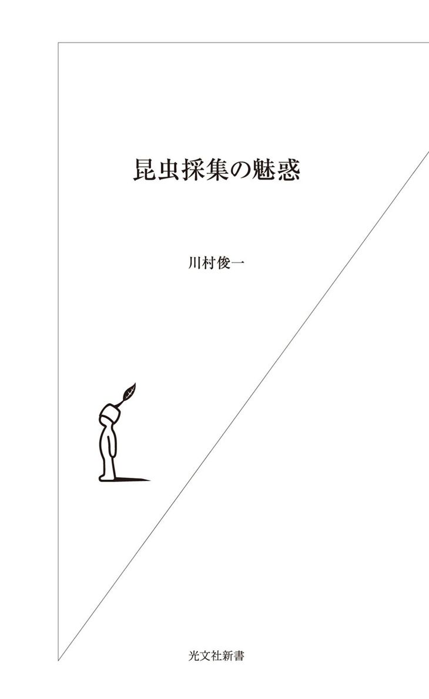
目 次
口絵・本文写真／山田和弘
口絵レイアウト／スタジオキキ
私は物心ついたときから虫が大好きだった。
野原を駆け回ってトノサマバッタやキリギリスを追いかけて育ち、小学校に入ると父が買ってくれた蝶類図鑑の専門書を、授業中も夜寝る時も読み耽って全て暗記してしまっていた。
中学の二年間は父の仕事で香港に住んでいた。毎日毎日、亜熱帯の美しくて多様性に富んだ蝶の採集に明け暮れた。学校に行く前はもちろん、帰宅してからも一直線に採集道具を持って家を飛び出し、真っ暗になるまで帰らなかった。
香港で見た図鑑によれば、ここには「ヘレナキシタアゲハ」（写真―Ａ）という蝶がいるはずだった。 それは「トリバネアゲハ」の一種だ。トリバネアゲハは学名をOrnithoptera（鳥の羽）といい、その名の通り巨大な、黄金色に輝く美しい翅を持ち、分布の中心はニューギニアにある。世界の三万種類を越す蝶の中の「帝王」と呼ぶに相応しく、美しくて珍しく、そして気品を備えている。私は二年間、ヘレナキシタを探して香港の野山を歩き回ったが、結局出会えなかった。
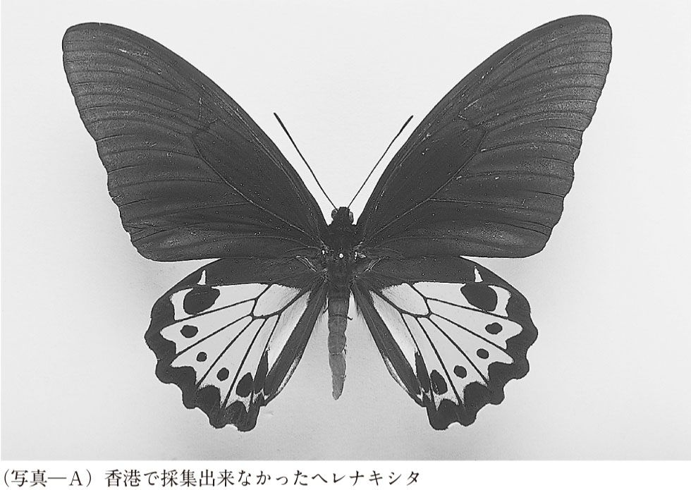
「大人になって自分でお金を稼げるようになったら、ニューギニアにトリバネアゲハを採りに行こう」
これが、それからの私の「夢」になった。大学に入り、一時期、警備員などのアルバイトをしてお金を貯めて、フィリピンへ採集旅行に行った。中学以来、七年ぶりに熱帯の蝶が飛ぶ地域に帰って来たのだ。
当時のフィリピンには、十九世紀にドイツで作られた蝶類図譜しかなく、未調査の山や島々が多く未知の魅力で一杯だった。
「あの山の上には、誰も見た事がない蝶が飛んでいるに違いない！」
情熱をかき立てるには十分だった。
パナイ島のマジャアス山、という山の麓で山岳民族の人達を雇い、食料やテントを運び上げた時、山の中で共産ゲリラに出くわして缶詰やお米を召し上げられてしまい、野鳥や野生のバナナを採って食い繋いだことがあった。熱帯の山とはいえ、標高千五百メートルを越えると、一日中霧がかかって寒い。その時、一瞬薄日が射し、岩だらけの渓谷の下流から黒い蝶が飛んで来てペタリ、と目の前の苔むした木生羊歯の幹に止まった。すかさず採集ネットをかぶせて捕まえた。
それは日本にも分布するルリタテハという蝶だったが、この島のそれは斑紋形質が変わっていて、帰国後oreasという新亜種（新しく発見されたその蝶の地理的変異）として記載発表された。
ネグロス島のカンラオン山で採集したスミナガシという蝶にはkawamuraiという亜種名が付けられた。
自分の名前の蝶が、昆虫図鑑の一行を飾るなんて。嬉しさと名誉で体がふるえた。
こうして私の長い旅が始まった。大学は何とか卒業したけれど、仕事も無ければ恋人もいない。将来の展望も無かったし、親には勘当同然に家を追い出された。誰にも必要とされなかった。失う物は何もなかった。
当面の生活と採集旅行の費用をかせぐ為、周りの人に「一口十万円」と言ってフィリピン出発前に資金を募集した。私が採ってくる、未知の島々の蝶に興味を持ってくれる収集家の人達が出資して下さった。帰国後、お礼として標本で弁済をした。
ある年はフィリピンの「スールー諸島」へ行った。ミンダナオ島とボルネオの間に帯状に連なる島々である。今でもそうなのだが、そこは一部の海岸にあるキリスト教徒の町を除いて、過激派イスラム教徒ゲリラが支配する無法地帯で、十九世紀以来、採集調査に訪れた人など誰もいなかった。
十二月にミンダナオ島サンボアンガ港を発ち、そのスールー諸島へ向かった。途中で日本へ送った手紙が届かず、収集家達の間で「川村君もついに死んだか」という噂が流れた。
泊まる宿もない最果ての島々で、フィリピン陸軍のヘッドクォーターの兵舎に泊めてもらった。友達になった兵士達に「島の奥の、ジャングル地帯に連れて行ってほしい」と頼むと「一諸に連れてってやるよ」といって装甲車に乗せてくれた。Ｍ‐16ライフルで武装した彼らは、「今夜の晩メシだ」と笑いながら森の中の野猿を撃ち殺したりしていた。私はたくさんの新亜種、未記録種の標本を持って、約二ヶ月後にマニラに戻って来た。新亜種の幾つかは、自分の父と母に献名した。
また別のある年は、ミンダナオ島の「キタンラッド」という大きな山の麓の少数民族の村に一軒の家を借りて何ヶ月も滞在した。そこにはクワガタムシの種類、個体数が異常に多かったので、勝手に「クワガタ村」と呼ぶ事にし、村の周りの原生林で採れるあらゆる種類の蝶やクワガタ、その他の虫に値段をつけて、村の人に採ってもらった。村中の人が焼畑耕作や材木の伐採を止めて、クワガタ採りに精を出した。毎日、何百という虫を私の家に持ってきた。その整理と保存処理で朝から晩まで忙殺されたが、私は幸せだった。虫は村の人々が採れば採る程、その数が増えてゆく様だった。
ある日、山の中で採集していると、村の人達が「籐の蔓」を集めているのに会った。その中に、穴あきだらけのボロ布をまとい、水っぱなをたらした少女がいた。私の顔を窺いながら差し出したその子の手には、体長百ミリをはるかに越す巨大なヒラタクワガタがブラ下がっていた。私が五ペソ札（当時のレートで百円位）をあげると、恥ずかしそうにニコッと笑った。それは「キタンラッド山の主」と呼ぶべき、惚れ惚れする巨大な怪物だった。昼間気温が高い時には、体節の間に寄生しているダニの様な微小昆虫が這い出して、頭部や大顎が真っ白になった。
長い間の粗末な山暮らしで、私は疲れていたのだろう。その晩、高熱と悪寒が襲って来た。割れる様な頭痛にうめき声を上げた。ふと気がつくと、昼間の化け物ヒラタクワガタが巨大化して、私の体に覆い被さってきた。前脚で腕を絞め上げ、口器を伸ばしてペロペロ顔を舐めまわす。あまりのおぞましさに絶叫して、竹で編んだベッドからころげ落ちると、心配そうに、村人たちが私を見守っているのだった。
ほかにも色々な事があったが、こうして何年もの間、私はフィリピンの僻地に採集旅行を繰り返した。各地に採集人や協力者を養成して、少しずつ在庫標本が増え始めた。収集家の間で名前が知られるようになり、顧客も増えた。何とか、昆虫標本を売る事で生活が出来る様になってきた。
そしていよいよ、中学生の頃からの夢、トリバネアゲハを採りに、パプアニューギニアへ行く機会を得た。私は一旦日本に戻って準備、計画を練った。ニューギニア本島の山岳地帯、モロベ、セピックなどの地方を回り、ニューギニア南東に浮かぶ、ビスマーク諸島のラバウルに来た。ビスマークと、その南のソロモン諸島は、昆虫はとりわけ未調査の地域なのだ。
「ついに俺はやって来た！」
南海の果ての海岸に立っていると、胸が締め付けられる様な、狂おしく激しい、新しい情熱と探究心が湧きあがってきた。
最初は恐い顔に見えた、髭モジャのメラネシアンも、一旦「ワントック」という友達関係になると、皆人懐こくて、素朴で底抜けに明るくて良い人ばかりだった。
ニューギニアでは、トリバネアゲハは法律で保護されていて、採集は禁止されていたけれど、ソロモン諸島では、自分で採る事が出来るかもしれなかった。さらに南方へ！ 私はブーゲンビル島に寄り、ガダルカナル島にたどり着いた。
その日の出来事は、今でもはっきりと憶えている。
私はガダルカナル島東部のメラネシアンの部族の村に泊まっていた。早朝五時頃、周辺の原生林の樹冠から、小刻みに前翅を震わせながら、重たい腹部のバランスをとるように一頭の巨大な蝶が舞い降りて来た。朝日を浴びて黄金と金緑色に輝く短冊型の翅、黒い胸部には黄色い花粉が付着している。前・後翅を微妙に羽ばたかせて空中に静止したその蝶は、口吻をゆるゆると伸ばして、林縁のコンロンカの花から吸蜜を始めた。新鮮なビクトリアトリバネアゲハの雄だった。
幼い頃から、何千回も夢に見た憧れの蝶、あまりに崇高な美しさに、採集ネットを振るのも忘れていた。
それからも、私の旅は続いた。その翌年にインドの、シッキムヒマラヤへ採集旅行に行った。それから何年もの間、毎年数ヶ月間を、北インド、ネパールのヒマラヤ地方や南インドやスリランカの熱帯地方を歩き回って過ごした。何度もニューギニアへ足を運んだ。メキシコやキューバへも繰り返し出掛けた。
何処へ行っても、最初にフィリピンで学んだスタイルは変わらない。昔、外国で出版された虫の文献や学会誌、昆虫図鑑などを沢山読んで「ここだ」と思う場所に見当をつけて採集に行く。そして、自然環境を見ながら、現地の人達に虫の採り方を教えて協力してもらうのだ。どんな僻地でも、紛争地帯でも、そこに欲しい蝶が飛んでさえいれば、必ず出掛けて行った。
本当に沢山の出来事があった。長雨が続いて、なにも虫が採れず、木賃宿で蚤や虱やダニに苦しみながら、将来の生活を考えて不安になる事もあった。ヘルペス、赤痢、肝炎、マラリア、いろんな病気にかかった。言葉の通じない南インドの片田舎の安ホテルで、訳の解らない病気にかかって糞便をたれ流し、脱水症状を起こして意識を無くした事もあった。ソロモン海では、未調査の島に渡る為に調達した船が転覆して、何時間も漂流した。何度も、お金や荷物や大切な標本を盗まれて途方に暮れた。
そんな時、どんな国にも、どんな所にも、必ず親切にしてくれる人達がいた。何だか素性が解らない外国人の私を、家族の様に扱ってくれた。病気の時は介抱してくれた。お金が無いと貸してくれたり、家に泊めてくれたりした。
そして、世界各地の蝶や甲虫の知識が増えてくると、どうしても、標本収集の本場、ヨーロッパへ行ってみたくなった。およそ昆虫標本の収集家が多いのは、日本と、フランス、ドイツ、イタリアなどの西欧諸国だ。標本収集の趣味は、ヨーロッパの博物学の伝統を受け継いでいるからである。
歴史をひも解くと、西欧諸国が世界各地を支配した十六世紀以来、植民地から多様な生物が本国にもたらされて、研究や収集の対象になった。貴族や富豪の中に、蝶や甲虫の熱狂的な収集家が現れて、珍奇・美麗な標本には巨額の値段がついた。時代が下ると一般の人々にもこの趣味が広がり、標本の需要を満たす為に、専門の採集人が蝶を求めてアマゾンやヒマラヤの奥地に探険旅行をするようになった。これが「標本商」の起源で、今もフランスやイタリアに行くと十九世紀から何代も続いている標本商がある。標本業界の本場はヨーロッパなのだ。
ある年の秋、私は両手に大きなカバンを下げてパリの標本即売会場に現れた。カバンの中は標本箱で一杯で、その中にギッシリと交換や販売や展示用の標本が詰め込まれている。会場には、ヨーロッパ各国や世界中から出てきた収集家、標本商の人達がいて、盛んに標本の売買をしている。
初めて会う人達なのに、虫が好きな者の性格やルールは東でも西でも奇妙に良く似ていた。私もいつのまにかその輪の中に入っていた。日本の標本商の歴史は明治時代からだが、ヨーロッパ諸国には三百年近い歴史と標本の蓄積があった。今では絶滅してしまった種類や、個人では絶対に入域が不可能な場所で採られた蝶、見た事もない巨大なヒシバッタやフトタマムシがあって、私を唸らせた。
その後何回も、各国の展示会や標本のオークションに参加して勉強したのだが、標本収集の楽しみ方には、①珍しい種類を集める ②美しい、或いは奇抜な面白い形態を持つ種類を集める、などがある。それに加えて、③標本の持つ「来歴」を楽しむ、という集め方がある。
例えば、「この蝶は十九世紀末の標本商、オットー・シュタウディンガーの採集人が中国青海省で採ってきたものです」とか「この蝶は、一七〇〇年代、ロンドンのキュー植物園のプラント・ハンターがチベットから採ってきました」とか「これが、二十世紀初頭、ロスチャイルド家の専属採集人がニューギニア東部で採集してきた蝶です」などだ。ヨーロッパの標本市場を見ていると、まるでアンティークや骨董品を目利きしている様な、楽しさと厳しさがある。
ヨーロッパの古い石造りの街中のカフェに座って、百年以上前に採集された蝶の標本に付けられているデータラベルの、古びて黄ばんだ手書きの文字、所蔵されていた博物館のスタンプ、かつてそれを所有していた収集家のサイン、などを眺めていると、昔の博物学探険時代の香りが漂ってくる。自分がその時代の探険家の生まれ変わりに思えてくるのだった。
「虫」は、作物や街路樹に害虫が大発生したりして、湧き出る様に群棲している、というイメージがある。しかし、百万種類を超える昆虫の中には、驚くほど奇抜な形態をしたバッタや甲虫がいる。人間のアイデアが及ばない、絶妙の配色に彩られた美しい翅を持つ蝶がいる。発見されてから百五十年を過ぎるのに、その後全く採れず、大英博物館やスウェーデン国立自然歴史博物館に数頭の標本が有るだけ、という幻の蝶もいる。
たかが「虫の死骸」と言ってしまえばそれまでだが、標本収集はこのように奥が深く、楽しみは尽きない。
毎年八月の終わりになると、私の全身には何となく力があふれてくる。
四月からノンビリした日程で海外に仕入れに行ったり、近所の公園で愛犬と遊び回ったりしていたのが、急に忙しくなる。事務所に籠って、蝶や蛾の展翅（写真３―２参照）、甲虫の展脚に励み始める。
そういう時、私の愛犬、ミニチュア・シュナウザーの「プッピー」は、つまらなそうな顔をして足元にうずくまっている。時々顔をあげて、黒曜石みたいな真ん丸い目で「遊ぼう」と訴える。それを無視して、毎日毎日、明け方までかかって、見栄えが良い甲虫や、しまっておいた、とっておきの蝶の標本を多数、製作する。乾燥させて仕上がった標本を、標本箱にズラズラッと並べていく。お客さんの訪問や、標本の注文や、問い合わせの電話も増えてくる。
いよいよ「展示・即売会のシーズン」が始まるのだ。
「開幕戦」というと大げさだが、そんな気持ちで迎えるのが、毎年、八月最後の日曜日に開かれる「インセクト・カーニバル」（虫の祭典）だ。
四月から八月頃までは日本の蝶の採集シーズンで、収集家も蝶の採集を第一に考える。ギフチョウやクモマツマキチョウやオオイチモンジを「今年は幾つ採れるかな」という事で頭が一杯になる。涼しくなると、標本収集の方に気持ちが向いてくる。だからインセクト・カーニバルも八月に始まる訳である。
この催しは東京・渋谷・宮益坂上の「アミーイベントホール」で行なわれるが、私も主催者の一人である。私達は、一九九二年にこれを始めた。それからずっと同じ場所で続けている。標本商が何人も集まって自慢の標本を持ち寄り、会場に来る収集家の人達に買ってもらうのだ。「インセクト・カーニバル」という名称も、初めは少し恥ずかしかったけれど、最近は慣れてきた。
当日、アミーイベントホールの前には、呼び込みやキャンペーンガールなどは勿論いない。「昆虫標本展示・即売会」と書かれた張り紙があるだけだ。会場には、長方形の机が幾つも、壁と平行に並べてある。或いは真ん中のスペースに、四角形に配置されている。机の上には標本箱が並んでいる。ひとつの机は、縦四十一センチ×横五十センチのガラス張りの標本箱が、丁度三つ載る広さなのである。標本商の面々には、それぞれの需要でスペースと机の数が割り振られている。各人、この「縄張り」の中で店開きをする訳だ。標本商は東京や、近郊の関東地方から集まった人が多い。大阪や名古屋や広島、金沢からも駆けつけて来る人がいる。
会場を見渡してみよう。インセクト・カーニバルに出品する標本商の人達、彼等は私の同業者で商売敵なのだが、それぞれ見事な品揃えをしている。
南米アマゾン川流域、中国やロシア、中央アジア奥地の珍品をズラリと揃えている人がいる。ベトナムやミャンマー（ビルマ）、ラオスなどインドシナ半島の虫に強い人。ペルー、ボリビア、エクアドル等、南米アンデス山脈の美しい蝶を並べている人。インドネシアの、聞いた事もない名前の、小さな島々の蝶を売っている人がいる。アフリカから仕入れてきた珍奇な甲虫を、無造作に机の上に置いている人。日本各地方の珍しい蝶やセミやトンボを出品している人。普通の本屋には無い、昆虫の図鑑や専門書、雑誌や古書を並べている人。昆虫採集の特製ネットや、標本を作る道具を出している人もいる。日本や外国産の生きているクワガタやカブトムシも、少しだけ売っている。けれどメインは、各々の標本商が世界中から集めて来た、自慢の「珍奇・美麗な昆虫標本」である。
インセクト・カーニバルに来ると、世界中の蝶や昆虫を見たり、買ったり出来る。美しい蝶の標本がある。トリバネアゲハやアグリアス、パルナシウスの珍品・普通種を売っている。奇怪な形をしたバッタやナナフシやクモやサソリやウデムシもある。昆虫図鑑に載っているおなじみの大型甲虫、ヘラクレスカブトやゴライアスハナムグリが並んでいる。日本のコレクターには初めてお目見えする珍しい蝶や甲虫（口絵―11）が、さりげなく普通種の間にまざっていたりする。売っている虫の並べ方がまた、それぞれ個性的だ。
ある人は、ガラス張りの標本箱の中に、定規で測った様な精密な間隔で、ピッシリ決まった展翅をした蝶を配列している。コルク敷きの桐の箱に、昆虫針でとめた甲虫やバッタ、ゴキブリ等を、雑多、ばらばらに並べているだけの人がいる。三角紙に包んだままの蝶を、机に置いている人は、海外から戻ったばかりで、標本作りをする時間が無かったのだろう。面倒だったのかも知れない。そうかと思えば、惚れ惚れするようなうまい展翅のイリアン・ジャヤのトリバネアゲハを、特製大型の標本箱に揃えている人がいる。チャック付きのシールパックに、セミやカメムシや甲虫を一頭ずつ詰めて（写真１―１）、コクヨ整理箱に一杯に入れ、積み上げている人がいる。お菓子のおまけか、安物アクセサリーの大量販売に見えてしまうが、売っている本人は、工夫しているつもりなのだ。
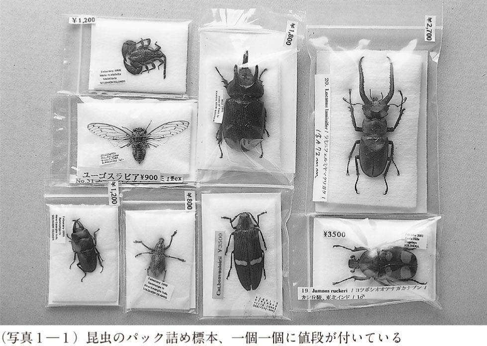
出品している標本商は、皆、夢中になって虫をいじっていたら、それが仕事になってしまった人達ばかりだ。それぞれ、得意な分野と地域がある。世界の各国に、独自の仕入れルートを持っていて、採集や買い付けに出掛ける。その国・地域の昆虫に関する知識なら「俺が一番詳しい」と思っているし、実際そうである事が多い。標本商は、インセクト・カーニバルに出品したり、カタログを作って顧客に送ったりして昆虫の標本を買ってもらう。自分の店や事務所にお客さんが来ると、直接、売る。皆独特の個性とキャラクター、営業スタイル（虫の売り方）を持っている。そんな彼らの存在感や生き方を面白がって、標本を買ってくれる人も多い。
色々な経歴の人がいる。私のように、大学を出てからすぐに標本商の下働きを始めた者や、何年か普通の会社で働いてから、「もうやめた」と言って標本商を始めた人もいる。一匹狼の個人事業主で、独立心が旺盛な人ばかりである。標本箱が並んだ机の向こう側には、腕組みして難しい顔で突っ立っているオジサンや、椅子に座ったまま下を向いて、何かブツブツ言っている人がいる。昼間から缶ビールを飲んで、ご機嫌に虫を売っている人がいる。標本商には風采のあがらぬ、くたびれたオッサン風の人が多い。何となく無愛想で人相も悪い。近寄り難い雰囲気もあるけれど、実はカラッとした気性の、真っ正直な人ばかりである。子供じみているけれど、人が好い。
初めて会う人と話すのが恥ずかしいので、ムスッとしているのだ。勿論、インセクト・カーニバルには出品しないけれど、実力がある標本商の方々もいる。昆虫標本商なら、虫屋の間で語り継がれる、自慢の採集と探険の経歴がある。奇跡を呼んだ採集や、珍蝶を採った物語を持っているものだ。
彼らは人生を昆虫に賭けた人達である。憧れの虫を手に入れるために、すべてをなげうって生きてきた人達なのだ。
インセクト・カーニバルが始まるのは午後一時からだが、午前中から会場の前で並んでいるお客さんがいる。待ちきれずに入って来て、私達が店開きの準備をするのを眺めている方がいる。熱心なのだ。この十年間、毎回、来てくれるお客さんがいる。初めて見る顔もある。
標本を買いに来てくれる人の職種はさまざまだ。日本社会の縮図である。だけど、こういう場所では一般社会の「肩書き」は関係ない。
「やあ、世界各地のキアゲハを集めている松崎さんが来ているな」「グラフィウムやキラーサ属の収集家の番場さんもいるな」「世界のアゲハチョウを集めている、清水さんがお見えだな」などと会場を見渡して思う。こちらも「お客さんの顔＝集めている虫のジャンル」で認識しているのだ。
標本箱の中の、蝶の品質や値段を、ひとつひとつ丹念にチェックしているお客さんがいる。自分が欲しい虫が有るかどうか、横目でササッと標本を見て、急ぎ足で通り過ぎて行く人もいる。「何か、面白い蝶は入りましたか？」と話しかけてくるお客さんもいる。顔を紅潮させている人、興奮して汗をびっしょりかいている人がいる。
お客さん達を観察していると、実に面白い。机と机の間の狭い通路は、お客さんで充満して、会場は熱気で温度上昇が著しい。ヨーロッパの展示・即売会より規模は小さいけれど、雰囲気はほとんど変わらない。虫屋と標本商は、どの国でも同じである。
売られている標本には、それぞれ値札が付いている。これも出品者によって様々で、手書きだったり、パソコン印字してあったりする。値札が無いのや「価格・応相談」なんて書いてある標本もある。
私の展示会用標本箱の中にも、「イタリア、ピエモンテ州産アレクサノールアゲハ雄、千五百円」「ブーゲンビル島産アオメガネトリバネアゲハ雄雌ペア、三千円」「インド、アンダマン諸島産ツマベニチョウ雄六万円」「メキシコ、ベラクルス州産ヒルスシロカブト、超特大サイズ九十一ミリ雄、四十万円」など色んな価格の虫が並んでいる。もっとも、超特大ヒルスシロカブトは昨年からずっと売れ残ってはいるが。
こういう、標本の値段はどうやって決まるのだろうか。
まず、展示・即売会に並んでいる昆虫標本には「原価」がある。海外の虫は、その国の標本商（個人や、政府の出先機関など）から一頭ずつ買い入れる。珍品や美麗種の値段は高い。或いは、契約して採集してもらう事もある。たまに、自分で採った虫を売っている人もいる。外国まで虫を買いに行っても、自分で採りに行っても、往復の交通費や滞在費や諸費用がかかる。輸出許可証を取るのにお金がかかる。
それに、虫の標本を作るには手間がかかる。どんなに慣れた人でも、一日二十頭も作ると、疲れてくたくたになる。一人では出来ずに人に頼むと、一頭につき五百円から千円位はお支払いする。これは、標本作りの手間と技術を考えると、殆ど奉仕の値段である。奇妙な事に、標本作りの手伝いを頼まれるのは、その標本屋のお客さんである事が多い。標本商との長年の交友関係から、イヤとは言えずに引き受けさせられるのだ。
さらにインセクト・カーニバルの会場に並べるには場所代を払う。イベントホールを借りるにはお金がかかるので、皆で分担するのだ。何十箱の重たい標本箱を、会場まで運ぶ。一人では無理なので、手伝いを頼む。車も出してもらう。バイト代を払う。
こうした諸費用をひっくるめて、例えば「千五百円」という値段に落着く訳である。
ところが同じ種類なのに、値段がまるで違う蝶がある。それは良く標本が入る産地と、滅多に来ない場所があったりするので、価格の差は当然である。亜種が異なれば、同じ種類の蝶でも値段が全く違う。同じ産地の同じ種類の蝶なのに、標本商によって値段が違う事もある。
標本の鮮度や品質によって値段が異なるのだ。蝶の翅にキズやスレや欠けがあるＢ級標本と、キズひとつ無い完品標本では値段は勿論違う。翅が大型で斑紋が鮮やかに発達した新鮮な個体と、小ぶりでどことなく萎びていて色調の悪い個体では値段が違う。並んでいる甲虫の標本を見て「これは安い！」と思わず買いそうになるが、良く見るとエリトラ（甲虫の前翅）に傷があったり、脚のツメが欠けていたりする。また標本商によって仕入れルートが異なるので、違う値段になってしまうということもある。
他の標本商が、自分が仕入れた原価よりも、同じ虫を安く売っている、などという事は良くある。こういうヘマを何度もして、標本商も成長してゆくのだ。だからお客さんは、「あっちの方が安く売っているぞ！」などと怒ってはならないのである。
お客さんも大変である。他の人より少しでも早く、良い蝶を買おうと急いで会場に入る。「これはお買い得だ」と目をつけた蝶がある。「でも、別の標本商の所で、もっと安く売っているかも知れない」と思う。ところが会場を一回りして戻って来ると、その標本は誰かが買って無くなっている。そうかと思えば、知り合いの標本商に「この標本を買って下さい」と泣きつかれて困ったりもする。
標本商にとっては生活がかかっている展示・即売会だけど、単に売り買いをするだけの場所ではない。お客さん同士で標本や情報の交換をしたり、お互いの近況や虫の話をして盛り上がっている。売る側の私達にとっても、会場に来てくださるお客さんと対話を楽しむ良い機会なのだ。
私は海外出張のない時は、展翅や展脚を昼過ぎから明け方までやったり、注文がきた虫を在庫から捜して発送する、という毎日を送っている。妻と愛犬プッピーを除けば、人と接するよりも、昆虫の標本をいじっている時間の方が遥かに長い。正直に言うと、たまに体の調子が悪かったりすると、「こんな、虫の標本ばかりいじっていて何になるのだろう。いい歳をして、俺は何をしているのだろう」と沈んだ気持ちになる時がある。
インセクト・カーニバルで、私の机の前でお客さんが立ち止まり、まぶしそうに標本箱の中を覗き込んでくれる。そんな時、少しだけど他の人の「楽しみ」に貢献した気持ちになれるのだ。
展示・即売会は、机をはさんだお客さんと標本商の「心理戦」である。
例えば、私が標本箱を並べている机の前にＡ氏が現れる。時々見かける顔である。身を乗り出して箱の中の蝶を一頭一頭、見ている。ほとんど顔の表情に変化は無いが、時々チラチラ、と目を走らせる標本がある。「東インド、ナガランド州のシボリアゲハ、雄雌ペア四万五千円に興味をお持ちでは？」とＡ氏を観察しながら思う。Ａ氏は他の標本商の所へ行ってしまい、別の蝶を見たりしている。「値段が高い、と思っているのだな」と私は推測する。
この蝶は前はもっと安かった。しかしこの数年間インドの標本商からさっぱり送って来なくなった。ヨーロッパの展示・即売会で、たまに売られているのも、翅のサイズが小さな雄ばかりである。最近、雌は特に入手するのが難しい。そこで私は強気の値段を付けたのだ。
Ａ氏は暫くすると、また来てウロウロしている。
Ａ氏の方は「この人、今日はあんまり標本が売れてないな」と私の標本箱を覗きながら考える。「不景気な顔をしているな。少しまけるかな」とも思う。私の方は「Ａさん、戻って来たぞ。少し値段を引いたら買ってくれるかも」と確信する。机越しに視線がバチバチとからみ合う。「このシボリアゲハのペアだけど......」「四万円にします」「三万円にならんかね」こうして値段の交渉が始まるのだ。
インセクト・カーニバルはこの後、十月最後の日曜日に同じ場所でまた、行なわれる。年末は十一月最後の日曜日の仙台から始まり、十二月に入ると第一週から、毎週日曜日に、大阪、東京（渋谷）、名古屋の順番で開催される。年が明けると三月と六月の最後の日曜日にまた東京・渋谷で行なわれる。このスケジュールで、十年以上続いている。
年末の展示・即売会を心待ちにして下さる収集家の人達も多い。仙台や名古屋や大阪のお客さん達とは、普段はあまり会う機会は無い。私もその準備には、特に気合が入るのである。
毎年、九月二十三日の秋分の日には、東京大手町のサンケイ会館で、「インセクト・フェア」という催しが行なわれる。これは一九八一年に始まったので、もう二十年以上の歴史がある。
インセクト・カーニバルは標本商が中心になって行なうが、サンケイ会館インセクト・フェアはアマチュア虫屋もオープン参加する標本展示・即売会である。
思い出すが、第一回のインセクト・フェアが始まった二十年前、八一年以前は、昆虫標本を売り買いする、という行為は日本ではまだ一般的ではなかった。何となく色メガネで見られているような雰囲気があった。蝶の愛好者は当時も今も多い。けれどその頃は、自分で野外に行って成虫を採集する。卵や幼虫も採って飼育して親蝶にする、という楽しみ方をする人が殆どだった。その蝶を展翅して標本箱に並べたり、他の人と交換したりする。例えば、自分が採った関東のクロシジミと九州のオオルリシジミを、手紙のやりとりをして交換する。お金と休みを貯めて採集旅行に出かけるのも、東京周辺の虫屋だったら、北海道や沖縄へ行ったりした。
この「自分で採る」というこだわりが大切だった。潔癖なアマチュアイズムみたいなものが有った。蝶の売り買いをするなんて、標本を売ってお金をかせぐなんて、とんでもない事だ、という考えの人が多かったのだ。標本箱の中の蝶も、日本産ばかりだった。
自分で野外に行き、採ってきた蝶を標本箱に並べてコレクションする。これは蝶の趣味で最も基本的な、楽しい部分である。自分で採集した思い出の蝶は、コレクションの中で一番大切なものだ。日本産の蝶を自分で採り歩き、細かな産地や地理的変異で収集する。今もこの様な楽しみ方をする「蝶屋」は多い。
また今は海外旅行は誰でも行くが、八〇年代初めはまだ珍しかった。「蝶を採りに海外へ行く」というのは普通の虫屋には、あまりピンとこない出来事であった。
しかし、八〇年代になって、海外へ採集旅行に行く虫屋が増え始めた。標本商の活躍で海外の昆虫標本がドッと入って来た。「自分で採る」他に、「昆虫標本を買い集める」楽しみが加わったのである。
今日では、日本や外国産の蝶を、売り買いをする事に疑問を持つ虫屋はあまりいない。いないどころか、インセクト・フェアは毎年大盛況である。参加する出品者や売られている標本の量、入場者の数は毎年毎年増えている。二十年前は、こんなに発展するとは誰も思わなかった。今や伝統あるパリの即売会を凌ぐ、世界一の規模の展示・即売会になったのである。
まだ昆虫標本の売り買いに偏見がある頃、この様な催しを企画されたのが「木曜社」という標本商の西山保典さんである。今日、標本売り買いの隆盛があり、昆虫の展示・即売会が賑わっている原点が、サンケイ会館インセクト・フェアだと言える。インセクト・フェアの様な、オープン参加形式の展示・即売会は、他には毎年二月中旬の日曜日に大宮で開催される「埼玉インセクト・フェア」がある。三月の春分の日には大阪で「大阪インセクト・フェア」がある。一月最後の日曜日にも大阪で、竹中昭彦さんという標本商が主催する展示・即売会がある。
これだけ展示・即売会のスケジュールが次から次へと迫っては、出品の準備も大変である。何とか新しい、目先の変わった蝶を仕入れようと努力するのだが、これが難しい。珍蝶を手に入れるのは難しいのだ。難しいから「珍蝶」なのだが。毎回、同じパターンの同じ種類ばかり並べていると、お客さんも飽きてしまう。売上げを維持するのは大変である。
大阪、名古屋、仙台の展示・即売会へ遠征する時は、経費もかかっているので必死である。親しい顔を見ると、思わず机越しに「この蝶、サンタ・クルーズ諸島のオベロンネッタイモンキアゲハです。他の標本商は絶対に持ってない珍品です」と声をかけてしまう。すると「この標本、三年前から並んではりますなあ」とあっさり言われたりする。お客さんは鋭い。出品した標本を実に良く見ているのだ。それでも「じゃ、もらっときましょか」と買ってくれたりする。有り難いのである。
しかし、私にとって標本商は楽しいけれど、悲しくもある、自己矛盾の商売でもある。
私は世界各地で沢山の蝶の標本を見てきたので、どんな蝶が珍しいのか、珍蝶のグレードも少しは解っている。また、長年蝶をいじって来たので「自分で標本を集めたい」という所有欲とコレクション意欲をほとんど無くしてしまった。自分で集めるよりも、蝶が好きなお客さんにコレクションして喜んでもらう。それが自分にとっても一番嬉しいのである。
だけど今も、標本商になる前の、自分で採集して標本を集めていた頃の情熱の残りカスがまだある。「こんな蝶が手に入るのは、自分の一生でこの一回だけだ」と思う、本当に珍しい、素晴らしい蝶を、所有出来る機会が何年かに一度、必ずある。そんな蝶はしばらく手元において、展翅をしてゆっくり眺めて楽しむものだ。お客さん達に見せると面倒が起きるから、夜中一人になった時、押し入れから取り出して標本箱の蓋を開ける。「この蝶は、これだけは死ぬまで隠しておこう」と何度思った事か。
けれど何ヶ月か経つと、もう我慢が出来なくなる。一人で眺めているだけでは収まりがつかない。誰か他の人に見せびらかして優越感に浸り、自慢しなければ気が済まなくなる。「ここだけの話ですが」と言って見せてしまう。「川村さん、凄い。この蝶は凄すぎる」（口絵―１）とお客さんが青ざめるのが解る。私が「標本商をやってて良かったなあ」と思うのはこんな時だ。
「でも、売り物ではありません」「この野郎、売り惜しみをしやがって」などと剥き出しの所有欲を出して怒る人はまずいない。お客さんは「そのうち手放すな」と先を読む。ニヤニヤし始める。私の「少しでも長く手元に置いておきたい」という心理を良く知っているのだ。
そのうち、売らなければならぬ日がやって来る。それは生活に困ってお金が必要になったり、「標本商」の看板を掲げている以上、止むに止まれぬ様々な諸事情が発生するからだ。標本商と収集家の関係は微妙なものだ。単なる顧客と売り手の関係を越えている。そこには、信頼し合ってはいるが奇妙に屈折した心理関係があるのだ。
珍しい蝶を手放す時の悲しみと喪失感。「おまえ、元気でいろよ。必ず会いに行くからね」と蝶の標本に話しかける。「私がお邪魔したら、必ず標本を見せて下さいよ」と買って下さった方に念を押す。目頭が熱くなる。「わが子を里子に出す」とはこんな気持ちなのだろうか。
ヨーロッパの展示・即売会へ行って標本を仕入れてくる。メキシコやパプアニューギニアから蝶を買って持ち帰る。お金は全て使い果たしてしまったけれど、沢山の標本に囲まれて幸せである。インセクト・カーニバルの日程が終わり、お客さんが蝶を買いに来て下さり珍蝶を皆もっていく。「標本が売れて良かった」という安心と達成感。売上げも貯まった。しかし良い蝶は無くなってしまった。脱力感が体を包む。何となく淋しい。「よし、もう一度、出掛けるか」この空しさを乗り越える為にまた蝶を仕入れに行く。ずーっとこんな事のくり返しであった。
さて、インセクト・カーニバルでもインセクト・フェアでも、ワシントン条約、すなわち「絶滅の恐れのある野生動植物の国際取引に関する条約」の付属書Ⅰに指定されている昆虫を出品するのは、固く固く禁止されている。
国や地方自治体の特別天然記念物、天然記念物、重要文化財などに指定されている蝶や昆虫も同様に禁止である。至極あたり前のことなのだが、社会のルールを守り、みんなで蝶や昆虫の趣味を健全に楽しむ、という催しなのである。
展示・即売会に現れる標本商の面々、彼らはどんな人達なのだろうか。その中から特に個性的な人物を次の章で紹介したい。
私もインセクト・カーニバルの主催者に名前を連ねている、と書いたが、実質的に運営を切り盛りしているのは反町康司氏である。
この人は埼玉県の北本市で「アポロ」という屋号の標本商を経営している。なぜ「アポロ」かといえば、彼が深く傾倒したアゲハチョウ科の「パルナシウス属」の代表的な種類に、「アポロウスバシロチョウ」という美しい蝶がいるからだ。
私は熱帯の蝶に憧れて標本商になったので、フィールド経験も扱っている標本も、熱帯、亜熱帯の虫がかなりの割合を占める。
しかし収集家と標本商には、南方系の派手で原色が強く、キラキラと輝く蝶はどうも好かない、という人も多い。彼らが熱心に収集するのは、旧北区（ユーラシア大陸のヒマラヤ山脈・長江以北の地域）の蝶である。日本も沖縄を除けば旧北区の一部である。日本に分布するのは殆どが旧北区系の蝶なので、ユーラシア大陸やヨーロッパの蝶は何処となく似ていて親しみやすい。日本の蝶と共通の「属」の種類も多い。日本の蝶を集める延長線上に、旧北区の蝶があるのである。
チベットやヒマラヤ、カラコルム、パミール、シベリアを初めとしたユーラシア大陸の奥地には、万年雪を冠す高山や山岳氷河、その麓の高原、砂漠、荒地などの極限の環境が広がっている。標高五千、六千メートルという高地では、一年のうちで、気温が上がり蝶が活動出来るのは七月中頃から八月初めのわずか三週間程の短い間だけである。その短い間に高山植物は一斉に花を咲かせ、幼虫は食草を必死で食べる。雄の蝶は必死で雌を探し求めて交尾をし、次世代の卵を産む。こんな厳しい環境に棲んでいる蝶は、卵から親蝶になるまで三年もかけるものが多い。厳しい自然に耐えながら成虫になった蝶は、しっとりと落着いた色調の中に、不思議な美しさや力強さをもつ種類が多い。
そして、こんな身が引き締まる厳しい大自然の中で、蝶の採集をしたいと願う男がいる。高度障害に苦しみ酸素の欠乏に喘いでも、目的の蝶を採るために、砂漠や氷河を越えて山奥深く入っていく。反町康司氏は、そういう現代の探険採集家の一人である。
「パルナシウス属」はヨーロッパから、ユーラシア大陸、極東のサハリン、日本、北米大陸まで四十七種が分布する。アゲハチョウ科の中でも大きな属である。とりわけ多くの種類が集中して分布するのは中国雲南省、四川省、西蔵自治区（チベット）、パミール高原などの地域である。山岳氷河を思わせる半透明な翅に、種類によって前翅、後翅に鮮やかな赤斑紋、青斑紋、黄色斑紋などが現れる。日本の大雪山や満州、ロシア、アラスカに分布するウスバキチョウParnassius everasmanniの様に、翅の地色が鮮やかな黄色になる種類もある。
いずれの種類も清楚な美しさの中に、高貴な気品を漂わせている。熱帯の蝶、例えば金や緑色に輝くトリバネアゲハなどとは、対極にある美しさである。日本には他に二種、ウスバシロチョウP. glacialis（本州と北海道）、ヒメウスバシロチョウP. hoenei（北海道特産種）が分布している。日本人にも馴染みが深い仲間である。ちなみに「パルナシウス」とは、「パルナッソス山の」という意味の形容詞だ。ギリシア神話の山の名前なのだ。
パルナシウス属は、古くからヨーロッパの収集家に愛されて来た。リンネCarl von Linné が記載したアポロウスバシロチョウParnassius apolloはヨーロッパから中国西部、モンゴルにかけて分布し、現在まで二百五十を越す亜種が記載されている。何故こんなに多数に分けられているかと言えば、アポロウスバシロチョウの生息する環境が、山脈や渓谷などによって分断されているからだ。
広い地域に分布すると言っても、連続的に何処にでもいる訳ではない。例えば、ピレネー山脈、イタリア南部、シシリー島、スカンジナビア半島、ウラル山脈、アルタイ山脈などの各地域に孤立して分布する。その集団は、それぞれ翅のサイズや地色の濃淡、前後翅の赤色斑紋の形状や大小に、微妙な地理的変異を現す。他の産地との遺伝的交流が無いので、この様な変異が現れるのだ。
パルナシウス属を研究した代表的な人は、一八八二年オーストリアのウィーンに生まれたフェリクス・ブリークFelix Brykである。本業は画家だったが、後にスウェーデン国籍を収得した。一九三〇年から三八年の間にブリークは、「パルナシアーナ」というこの属の専門誌を第六巻まで発行したが、第二次世界大戦の為に止めざるを得なかった。
戦後、ブリークの仕事を継いで、パルナシウス属の研究を進めたのはカート・アイスナーCurt Eisnerである。十数万頭に及ぶパルナシウス属の大コレクションを作り上げ、数々の研究を発表した。彼の死後、そのコレクションはオランダのライデン自然史博物館に収蔵されている。
ブリークやアイスナーは「博物学の黄金時代を飾る大収集家達」（第９章で詳述）である。彼らがパルナシウス属の研究に熱中したのは、十九世紀の後半以来、ヨーロッパ各国の登山家や探険家、採集家がヒマラヤ、中央アジアや中国の奥地、高山地帯から、続々と未知の種類をもたらしたからだ。
例えばロシアのプルジェワルスキー探険隊は、一八八四年中国青海省、ブルハン・ブッダ山脈の一万四千フィートの地点で未知のパルナシウスを採集した。当時のロマノフ王朝が後援した研究雑誌でプルジェワルスキーウスバシロチョウP. przewalskiiと命名発表された。第９章で詳しく述べるシュタウディンガー＆バング・ハース商会を営んでいたオットー・バング・ハースも、中国甘粛省、青海省などで多数の新発見をした。
プルジェワルスキーの様に、国家の力を背景にした探険家もいれば、西欧の国々では、自分で資金を調達して探険に出かけた者も多かった。未踏の山岳地帯の懐に、未知のパルナシウスを求めて挑んだ採集家達がいた。激しいロマンと探求心と同時に、標本が高額で売れたので、欲に目がくらんで行った側面も忘れてはならないのだが。
インド、パキスタン、ネパール、中国に分布するアッコウスバシロチョウParnassius accoという種類がいる。いずれの地域でも、標高四千から五千メートルの高山地帯の草混じりの岩礫地、といった昆虫類が活動していく上で最も厳しい環境に棲んでいる。
パルナシウスの他の種類と同様、生息地は高山の氷河や渓谷で分断され、山塊ごとに複雑な地理的変異を示す。多数の亜種に分けられている。反町氏が一九九一年、青海省東南部のバヤンカラ山脈北端で発見した亜種、P. acco moritaiは、後翅の赤紋と青紋の発達が著しく、全てのパルナシウスの中で最も美しいものの一つである。日本やヨーロッパのパルナシウス収集家の間で、垂涎の的の亜種なのである。バヤンカラ山脈は間に砂漠を挟み、ブルハン・ブッダ山脈の南にある。反町氏の研究によれば、プルジェワルスキーウスバシロはアッコウスバシロの亜種に位置づけられる、と言う。プルジェワルスキーウスバシロの特徴が、P. acco moritaiの示す変異幅によって、他のアッコウスバシロの亜種と連続的な関係を持つ事が解ったのである。
反町氏はチベット（中国西蔵自治区）へは六度にわたって探険旅行を行なった。
それ以前に、チベットの蝶が採集されたのは一九〇〇年代、当時の英領インド帝国の使節が、ダライ・ラマのチベット政府と交渉を持ち始めてからである。一九一一年英領インド帝国軍のヤングハズバンド遠征隊がチベットに入った。当時のイギリスの拠点ダージリンから、ヒマラヤ山麓シッキムのティエスタ渓谷を遡ってラサをめざした遠征隊は、チベット南部のチュンビ谷最上部の高山地帯でハニングトンウスバシロチョウP. hunnyngtoniを発見した。この蝶は標高五千から五千五百メートルの高山帯の、砂や岩礫地の環境を好んで生息する。発生地はどこでも、極限された狭い場所で個体数は少ない。これほどの高山地帯に棲む蝶なのに、五月上旬から六月初めという、異例の早い季節に発生する。
五千五百メートルの標高でこの時期は、まだほとんど冬である。昔から、ハニングトンは採集が難しいパルナシウスの筆頭と言われてきた。それはそうであろう。高度に訓練された登山のエキスパートでなければ、こんな時期にこんな場所に行き着くことは出来ないからだ。
一九一九年、エベレスト北面のベースキャンプ、ロンボック氷河付近でハニングトンウスバシロチョウの別亜種P. h. liliputが得られた。当時のイギリスの、エベレスト遠征隊によって採集されたのである。
一九二〇年頃を境に政治的な理由でチベットへの道は閉ざされ、ハニングトンを始めとするチベットの蝶も入手出来なくなってしまった。大きな地図上の空白地帯が残されたまま、僅か二十年程で閉ざされてしまったのだ。
長い空白の後、一九八八年頃から、中国への個人旅行が出来るようになり、少しずつ新知見が出るようになった。反町氏も何度かチャレンジした。一九九二年、中国西蔵自治区ユン峠（勇拉）で、ハニングトンウスバシロチョウを採集した。従来知られている産地から飛び離れた、チベットのド真ん中での発見はパルナシウス収集家や研究者を驚嘆させた。約七十年ぶりのハニングトンウスバシロチョウ新生息地の発見である。この個体群はP. h. michael（写真２―１）として記載発表された。
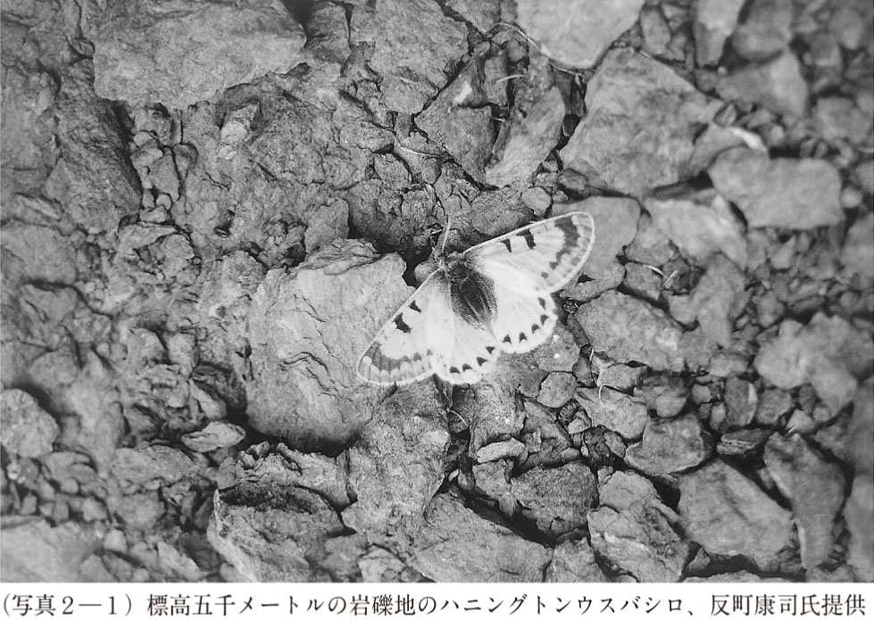
反町氏の話によれば、五千メートルというのは、高地で育ったチベット人でさえも順応出来ない高さなのだという。ジャガイモなどの作物も出来ず、夏の間にヤクの放牧などをして、短い間住める程度なのだ。夏でも天気が崩れると雪が降り、テントの中は寒さと酸素の不足で眠れない。体調が悪いと高度順応が出来ず、頭痛や吐き気に苦しめられる。風邪をひいてこじらせたら、肺炎にかかって死んでしまう。一週間で、食べたのはビスケットひと袋とチョコとパンが一つずつ、などという事もあったという。
ハニングトンウスバシロチョウの生息地は、荒涼とした、岩だらけの岩礫の急斜面だと言う。パルナシウスの採集は、鍛えられた登山家でも難しい。高い山なら何処にでもいる、という訳ではない。食草や湿度、日照などの影響でパルナシウスが棲む場所はごく限られている。地図にない谷や斜面を歩きまわり、生息地を経験と勘と運で捜しだす。良い場所を見つけても、天候の急変ですぐに雪や雹が降ってくる。パルナシウスは飛ばなくなる。五千メートルを越える高度で、蝶を追って急斜面を一気にかけ上がったり、何時間も飛来するのを待たなければならない。
いつ遭難しても不思議ではない。年によって、パルナシウスの発生する時期や個体数は全然違う。雪解けの時期によって食草が育つ速度にぶれがあるからだ。高地の気候はそれ程不安定なのだ。死力をふり絞って何日も歩き続け、目的の場所に辿り着いても、春が遅く、まだ一面の雪と氷の世界で何も採れなかった。そんな幾つもの経験を繰り返して、新発見をしたのである。
反町氏が氷河の上を飛ぶハニングトンウスバシロチョウを最初に目撃した時、まさかこの蝶とは思わなかったと言う。酸素が平地の半分しかない五千メートルを超す高山帯では、普通では考えられない程判断力が落ちている。体力も気力も衰えている。ハニングトンウスバシロは小型で、日本のモンシロチョウの半分位の大きさなのだ。こんな蝶が高山特有の激しく不規則な風にのって飛ぶ。これを採集するには、それこそ「親の敵」とでも思って激しくアタックをかけなければ不可能である。
反町氏は、シュタウディンガーやブリーク、アイスナーなどが書いたパルナシウスの文献に憧れた。昔、青海省やチベットで採集され、ヨーロッパで記載された蝶に憧れた。その場所に行けば、文献に書いてある通りに必ずパルナシウスがいる。そういう信念と情熱で探険採集を計画し、実行した。かつての中央アジア探険家の系譜に連なる様な、こんな男がいるのである。
反町氏はこの十年間、大英、パリ自然史、ライデン、アレクサンダー、サンクトペテルブルクなど、ヨーロッパ各国の博物館を回り、所蔵されているパルナシウスや他の旧北区の蝶、アグリアスなどの標本を調べ続けている。自分のフィールドワークの成果と併せて、数々の研究論文や図鑑を出版している。彼のもう一つの興味はアグリアス（第４章で詳述）で、質・量ともに最高の在庫を誇っている。知識もセンスも超一流の標本商なのだ。
たまに、真夜中、静かな街中にエンジンの轟音が響きわたる。反町氏が愛車フェラーリの爆音を轟かせ、私の事務所に様子を見にやって来るのである。
私の仕事場は東京都の小平市だが、毎週の様に海外から蝶の標本が届く。現地の人が採集し、その国の法律に従って輸出手続をして、許可証を付けて小包で送ってくる。だから、それぞれの国で保護されている蝶や、国際的に商取引が禁止されている蝶などは送って来ない。日本に着くと通関の手続きをして、荷物を受け取るのだ。
関心のない人には、私の事務所は散らかり放題に散らかった、蝶や蛾の翅やバッタやナナフシの脚やカブトムシやクワガタの死骸がころがっている、ゴミ溜めに見えるだろう。
玄関にも部屋にも台所にも廊下にも風呂場にも、蝶やカブトムシを詰め込んだ大きなタッパーウエアが天井近くまで積み上げられている。標本製作の道具や、失敗してブチ壊した標本や、蝶の体に刺す針が散らばっている。蝶がズラッと並んだ沢山の標本箱が、キャビネットに収まっている。防虫剤ナフタリンとエタノールと乾燥した虫が混ざった匂いで満ち満ちている。酢酸エチルの甘い匂いも時々漂う。でもこうして、大量の標本に埋もれて暮らすのは、私にとってはなんとも楽しいことである。
蝶の翅は薄く壊れやすい。鱗粉に覆われていて、直接手で触れると美しい斑紋が台無しになる。だから小包で送ってくる蝶は、一頭一頭、「三角紙」または「四角紙」という紙に包まれている（写真３―１）。事務所に来るお客さんは、紙包みのままの蝶を買う事もあるし、私が「展翅」した蝶を買ってゆく事もある。
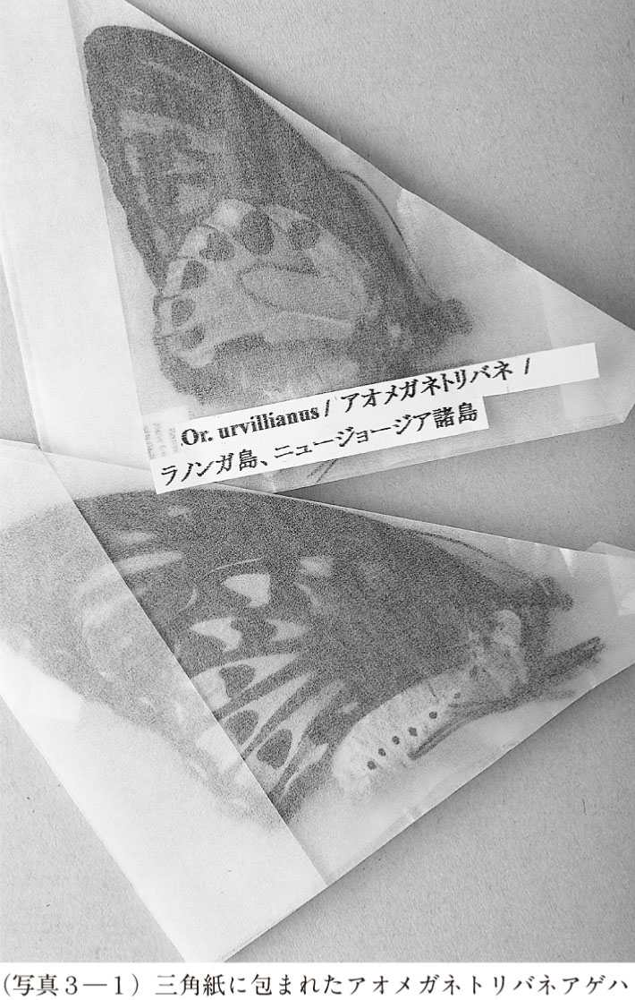
蝶の標本は紙包みのままでは、美しさも種類の特徴もよく見えない。前・後翅二対の翅を綺麗にひらいてピンと伸ばし、体に針を刺し、標本にしなければならない（写真３―２）。この作業を「展翅」という。蝶の美しさを保つには、きっちりと展翅をして十分に自然乾燥をさせる。
蝶が包まれていた紙には、その蝶が採れた場所や年月日が書かれている。それをデータラベルとして、蝶の標本と一緒の針に刺す。
そして「標本箱」という、昆虫の保存のために作られたガラス張りの箱に入れておく。標本箱にズラリと並んだ美しい蝶の標本は、いつでも眺めて楽しめる。何十年、何百年経っても蝶は生きていた時の美しさのまま、保存が出来る。
標本箱に収まった蝶は、自然環境の中で生きている蝶とは、もはや違うものだ。
自然に飛んでいる蝶は、死ねばそのまま朽ち果ててしまう。けれど標本はいつまでも保存される。永遠性がある。標本箱の中で蝶の時間は、生きていた時のままに止まる。標本としての、独自の価値を持つ事になる。その蝶の美しさ、珍しさ。いつ、どこで、誰が採集して、どういう経緯でこの標本箱に収まったのか、という来歴もわかる。
地球上には数万種類の蝶がいる。似ている種類は、「属」、「科」に程よくグルーピングされて、収集しやすい。命名記載された種類は、それぞれ謂われのある学名を持っている。未知の新種、新亜種が発見される可能性も多い。調べられていない事が無数にある。どんな蝶も鱗粉があり複雑な斑紋を持っていて、見ていて飽きない。蝶の標本コレクションは、実に奥が深い。コレクションの対象になった蝶には、「値打ち」がうまれ、交換したり、それぞれの値段で売買される様になる。
それにしても「珍しく美しい蝶を買い集める」というのは、何て優雅で面白い道楽なのだろう。何て無駄で素晴らしい楽しみなのだろう。私の周りには、こんな粋な趣味を持つ人たちが集まって来る。蝶の標本収集家の人々である。
彼らは自分で目利きして、標本の価値を判断する。他人の基準に振り回されず、自分の頭で考えて、自分の美学で楽しむ。楽しみ方を知っている。彼らはまた自然の中の蝶も大好きだ。休みの日には野外のフィールドに出掛けて行く。蝶の生態を観察したり、採集したりする。蝶だけでなく他の昆虫や植物の事も良く知っている。野山を歩いて蝶を探すのは、標本を集めるのと同じ位楽しい。自然の生態系のしくみにも詳しい。蝶が生きてゆける自然環境を残してゆく事がどんなに大切か、いつも真剣に考えている。自然の全てを愛している人たちなのだ。
世の中には、①蝶が好きな人、がいれば、②蝶が嫌いな人、もいる。加えて、③蝶に無関心な人、がいる。私の分類法では、人はこの三つのどれかに必ずあてはまる。
最近は都会でも郊外でも、人工的な環境に囲まれていて、蝶を見たり、接したりする機会がほとんど無いと思う。学校でも塾でも、蝶や昆虫について習わないし、別にこんなものに興味を持たなくても、楽しい事は他にいっぱい有る。だから③の人が殆どだろう。
しかし、私はこの仕事をしていていつも思うのだが、一見、蝶に関心が無くても、潜在的に意識している人が実に多いことに気づかざるを得ない。嫌いな人、好きな人は蝶に心を動かされているのだから、殆どの人の意識の中には蝶がある、と言ってしまっても良いと思う。
人は、昔から蝶を意識してきた。例えば、西洋の昔の言い伝えでは「蝶には死者の魂が宿っている」と信じられていた。日本では戦国時代の武将の家紋にリアルな、アゲハチョウ科の蝶をあしらったものが幾つもある。メキシコのソチケッツアルXochiquetzalと言う遺跡から見つかった「女神の肖像」と呼ばれるレリーフがある。これはオオミツオトラフアゲハという、アゲハチョウ科の蝶の、四枚の翅が背中から生えた女神が飛んでいるという発掘物だ（写真３―３）。頭には蝶の触角の代りに、一対の「ペナーチョス（ケッツアルコアトルという鳥の羽根飾り）」が付いているリアルさだ。古代メキシコの人は何を思いながら、この蝶が飛ぶのを見ていたのだろうか。
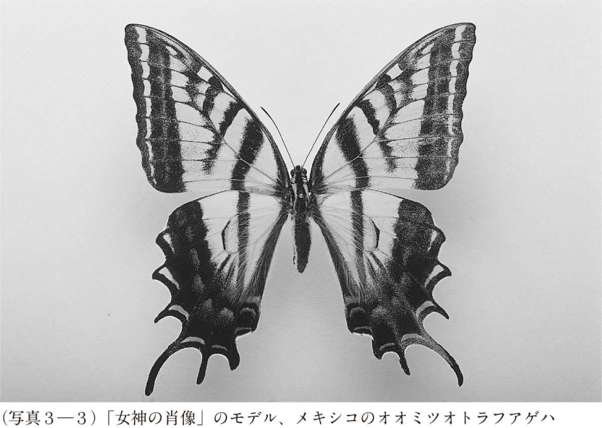
これらは、人と蝶のかかわりのほんの一例に過ぎない。
そして現代でも、テレビを見たり、新聞や雑誌をめくったりしていると、カラフルな蝶が目に飛び込んで来る。それは車やカラープリンターやタバコやデジカメやビデオカメラの広告だったりするのだが、鮮やかな色彩の蝶を、思わず目で追ってしまう事がないだろうか。ＣＤを買いに行き、ジャケットに描かれている美しい「蝶」が気になり、思わず手に取ってしまった事がないだろうか。
夏になると、デパートや遊園地、公立やプライベートの博物館の昆虫展はどこでも大盛況である。蝶や昆虫が好きな人は本当に多い。
人間は好きだろうが、嫌いだろうが、蝶や昆虫の存在を意識せざるを得ない。
何となく「昆虫」が頭にひっかかる人は、住んでいる周りや郊外の、何処か自然が残っている場所にとりあえず行ってみると良い。人工的に作られた公園や、植林されたスギ林などは避ける。本来の自然ではないからだ。クヌギやコナラなどの広葉樹が良く残っていて、畑地や草原の混じった様な環境が良い。自然環境が良く残っている場所に春から秋の間に行くと、そこに様々な昆虫が潜んでいるのを見つけるだろう。
日当たりの良い開けた場所にはナミアゲハやキアゲハが、木々がこんもり茂った薄暗い場所にはカラスアゲハやクロアゲハが飛んでいる。近くの草原の植物を捜すと、コガネムシやマメコガネやナナホシテントウやムシクソハムシなどを発見出来る。
とりあえず自然の中で観察して、戻ってから本屋で昆虫図鑑を買う。自分が観察した昆虫が載っているか、調べてみる。子供向けの本のコーナーにある図鑑も、最近は驚く程レベルが高い。もっと虫の事が知りたい、という人はゴールデン・ウィークから夏休みの間に、遊園地や各地の自治体やプライベートの博物館、自然に関連した施設などで開かれる「昆虫展」へ行ってみる。新聞や電車の中の広告に注意すれば、必ず見つける事が出来る。テレビでも、昆虫の生態を映した番組をやっている。
興味を持ったら、どんな身近な自然でも良い、自分の目で昆虫を観察してみる。きっと面白い発見があるに違いない。何もコスタリカのエコ・ツアーやガラパゴス諸島観光、などといきなり遠征しなくても良い。まずは手が届く、身近な自然から始めてみる。
こんな風に少しずつ虫と接しているうちに、自分が子供だった頃を思い出すのではないだろうか。周りに緑が沢山ある環境で育った人も、都心のマンションで土の匂いを嗅がないで育った人もいる。だけど、昆虫を全く見ないで育った人はいないはずだ。
雑木林の中で樹液に来たノコギリクワガタを捕まえた。そのとき一緒に樹液に集まっていた、クワガタに追い払われて隅っこにとまっていた、はっとする美しい翅を持つ蝶を思い出すかも知れない。家の窓に飛来したチャバネゴキブリで遊んでいたらお母さんに怒られた、という人はいないだろうか。「翅をむしったら何となく、本で見た三葉虫に似ているなぁ」と鋭い観察をしていたのに。八百屋やペットショップでカブトムシを買ってもらった。胸部のツノをつまんで持ち上げる。重くて、軋んだ音を立てて関節を動かす。メカニックで力は強いけれど、自分の思い通りになる玩具である。いつまで遊んでも飽きなかった。
友人の長畑直和氏によれば「全ての人は、虫が好きなのだ」と言う。氏の考えによれば、全ての人間は本来、「虫が好き」という属性をもって生まれてくる。だから全ての子供は虫が大好きなのだ。だがそれが、塾や受験や就職、結婚など人生の過程で人は「子供の心」を忘れてしまう。大好きだった虫を忘れてしまう。忘れてしまった大人が、今度は虫をいじっている子供に「汚いから止めなさい」と言うようになる。
ある日突然、人は虫を嫌いになる。気持ち悪いと誰かに思い込まされる。子供の頃、あんなに興味深く観察していた芋虫を、今度は気持ち悪いと思う。だから大人になっても、子供の心を忘れなかった人が「虫屋」になったのだと言う。そうなのかも知れない。
この人は標本商でもないのに、いつもインセクト・カーニバル会場に現れて、あちこち手伝ったり仕切ったりしている。最初は私も誰かの下働きだと思って「オイ長畑、こっちも手伝ってくれ」などと気安く声をかけていた。ところが、一昨年（二〇〇〇年）「ＴＶチャンピオン」（テレビ東京系）という番組に出て、あっという間に勝ち抜いて初代「昆虫王」になった。つまり「日本で一番虫に詳しくて、採集がうまい」というタイトルを持っている人である。
「昆虫王」になると展示・即売会場で、誰も氏を軽んじなくなった。勤め先は製薬会社で、新薬の研究開発をしている。それまで会社で変人扱いされ、女子社員から気味悪がられていたのが、皆、尊敬の目で見てくれる様になった。公演も頼まれ、全国の子供達からファンレターが来た。そんな長畑氏はしみじみと、「すべての人は、虫が好きなのだ」と思うのである。
私は「昆虫王」ほど強くは断言出来ないが、人間は「虫」と強くかかわってきた存在だと思う。人間の祖先と昆虫は、本来同じ生態系の中にいた。直接、昆虫を食べたり、虫を食べた鳥や小動物を食料にしていた。鳥や哺乳動物は昆虫という食べ物が存在したからこそ、進化し得たのである。今でも世界各地に昆虫を食べる習慣を持った人々がいる。私には美味しいとは思えないが、でっぷりと太ったウスバカミキリの幼虫やタガメのから揚げなどをご馳走と思う人達がいるし、日本でも蜂の子や蝗の佃煮を食べたりするだろう。
人間は環境を住みやすい様に作り変え、人口を爆発的に増やし繁栄してきた。同時に人間が作り変えた環境に適応し、巧みに入り込んで生活圏を広げた昆虫がいる。例えばゴキブリやシロアリなどの「害虫」と呼ばれる昆虫達。私達はあまり意識していないが、人間が生活しているのと隣り合わせに、そんな昆虫の膨大な個体数が存在する。人間が生活する所には、どこにでも昆虫がいるのだ。これについては第10章で述べたい。
人の祖先が遠い昔、アフリカで森林から草原の環境に進出した時、最初は林と草原が入り混じった疎林的な環境に住んでいた。そんな環境は蝶にとっても絶好の棲家である。人間は狩猟、採集などの生活活動を太陽の下で行なった。人間は昼間活動する生物である。嗅覚や聴覚よりも、視覚で、目で物事をとらえて周囲の状況を把握する。蝶も昼間活動して良く目立つ。人の祖先が草原に出た時、無数の蝶を見たのである。
今まで「蝶は何故、これ程までに美しいのか」について様々な説明がなされてきた。
例えば、毒の成分を持つ植物を食べて育った蝶は、体内に毒を持つ。派手な色の翅によって、天敵の捕食者である鳥に対してその危険性を宣伝・警告しているのだ。鳥は視覚によって蝶を捕らえるからだ。一度その蝶を食べてマズイ味だと学習した鳥は、二度とその蝶を食べない。体に毒の無い蝶も、毒のある蝶そっくりの模様の翅をしている（ベイツ型擬態、写真３―４）。毒のある蝶どうしもお互いに似せた、派手な模様の翅を持っている（ミュラー型擬態）。その方が接触頻度が上がる＝宣伝効果が上がるからだ。つまり、天敵に対する保身戦略として、蝶は美しく目立つ翅を持っている。他にも、雄が同種の雌を認識するために目立つ色彩をしているとか、様々な説がある。
いずれにしても、太陽の下で、明るい所で飛び回るからこそ、蝶はこんなに美しいのだ。月の光や星空の下で活動する「蛾」にはこういう美しさは必要無い。というのも、夜の天敵（捕食者）はコウモリなどで、視覚ではなく超音波によるハンティングになるからだ。雌の蛾はフェロモン物質で雄を誘引する。視覚は関係ないのである。非常に大雑把な言い方だし例外も多くあるが、夜活動する蛾の翅は黒や茶色を主にした色調のものが多い。どうしても「こ汚い」という印象になってしまう。
人間は視覚を発達させ、色彩感覚をみがいて物事を認識して来た。「美しい」「楽しむ」という感情を人間だけがもった。蝶は別に人間に楽しんでもらう為にではなく、生存の戦略上からカラフルな色彩を発達させた。しかし蝶の翅の美しさには、人間の視覚、感性に訴える何かがあったのである。
人間が農耕・栽培を始めた時、栽培植物についた幼虫が蛹、蝶へ変態してゆく様を見た。そこに何か神秘的なものを感じたであろう。蝶は音もなくひらひらと飛ぶ。日本や西欧、世界の各地に蝶が「死者の魂が宿るもの」という伝承があるのは、偶然ではない。
先にも述べた古代メキシコの人達は、自分達の神様と蝶との間に、何か超自然的な力が働いていると考えていた。蝶は神様の力を持つ、「火」や「魂」のシンボルだった。人の魂を再生させるものと考えられていた。メキシコ各地に残る古代遺跡から発掘される夥しい数の蝶のレリーフ、紋章、フィギュア等が、「蝶」がいかに彼らにとって特別な存在であったのかを物語っている。
蝶は、こういう人間の原初的な記憶の風景の中に存在していた。
人は蝶の翅の美しさを見る時、遠い昔の記憶を呼び覚まされるのである。
私が思うに、蝶は地球の生物で一番美しい。
鳥や熱帯魚や蘭など、美しさを誇る生物のグループは沢山ある。でも蝶のように、複雑で美しい斑紋や多様な変異に満ちた何万もの麗しい種類がある生物は他に無い。何故、蝶はこれ程までに美しいのだろうか。
蝶は地球上に三万から四万種類いると言われている。
これからも沢山の新しい種類が命名記載される可能性があるので、総数がわからない。蝶の特徴は、前翅一対、後翅一対、併せて四枚の翅の、驚くほど多彩な模様にある。翅の模様を「斑紋」と言う。
教会のステンドグラスみたいな色彩の蝶、スペースシャトルの様な金属光沢を持つ蝶、墨絵の様な渋い斑紋を持つ蝶、翅に氷河の透明感を持つ蝶、古代アンデス文明の出土品みたいな黄金色に輝く蝶がいる。翅の大きさも様々だ。ニューギニアやソロモン諸島には「トリバネアゲハ」といって、密林の梢を高く飛ぶ姿を見上げると、一瞬、鳥かコウモリの様に見えてしまう巨大な蝶がいる。キューバには翅の長さが五ミリもない、エキリスシジミという小さな蝶がいる。カリブ海岸の草原をチロチロ飛ぶ姿は、まるで蝿の様だ。人間のアイデアがとても及ばない絶妙の配色と翅の形、限りないバリエーションを持つ蝶が世界中に数万種類もいるのだ。
その中でも特に美しいのが「アグリアス・アエドン・ロドリゲッツィー」（口絵―４）だ。
私がこの蝶に魅せられた理由は、まずその「美しさ」である。次に、これまで採集された数が極端に少ないということがある。この蝶の標本を所有しているのは、世界中のコレクターや博物館の中でもごく僅かだ。産地も生態も謎に包まれている。さらに、日本人で生きて飛んでいるロドリゲッツィーを見た人はいない、という未知の魅力があった。
ビロードを思わせる、漆黒の翅の地色。一対の前翅の内側にある、微かな光沢を持つ真紅の斑紋。その赤い斑紋の外側に、傾く翅の角度によって変化する、うっすらと青紫色の幻光を放つ帯がある。一対の後翅にも、青紫色の幻光を持つ半円状の斑紋がある。信じられないが、これは人工的に作られたのではなく、自然の造形物なのだ。配色のコントラストの妙、翅型と斑紋のバランス、奇跡の美しさである。つまりこの蝶は、これ以上ない美しさと気品を備えていて、そして珍しい。
私は時々、東京・南青山にお住まいの、江田茂氏の家を訪ねる事がある。江田氏は日本でも屈指の大収集家である。これまでに収集した標本のうち二十七万二千頭、標本箱にして七千箱を越えるコレクションは兵庫県立博物館に収蔵されている。このうち十一万頭あまりが蝶、他は甲虫だと言う。この他にも、十万頭以上の蝶や甲虫のコレクションを今もお宅に置かれている。
江田氏も子供の頃から虫が好きだった。中学生の頃から世界中の高名な昆虫学者と文通して標本を交換していた。仕事でワシントンに滞在されていた時は、スミソニアン博物館に通って、日本とアメリカ大陸の甲虫を交換して集めた。今も世界各地の標本商と連絡を取り、熱心に蝶や甲虫を収集されている。私はその時、アグリアス・アエドン・ロドリゲッツィーの標本を見せてもらいに伺った。日本でこの蝶を所有している、数少ない収集家の一人なのである。
六本木通りから少し引っ込んだ瀟洒な家の、標本室に通された。標本箱を開けて、ロドリゲッツィーの標本を取り出して下さった。この蝶は、長い間「幻のアグリアス」と呼ばれていた。その数年前に、メキシコで約七十年ぶりに再発見された。江田氏はそれを聞いて、採集してきた「ポリオン」というフランス人の標本商をパリのホテルに呼び出して手に入れた。「私が買った残りを、彼はパリの標本オークションに出品しましたな」と江田氏は言われた。
蝶の標本は体（胸部）に針を刺して翅を広げ、乾燥させて保存する。針にはデータラベルといって、その蝶が採集された年月日、地名、国名、時には緯度、経度を記録した紙片を一緒に刺しておく。データラベルが無い標本はコレクションの価値が低い、と言える。
「アグリアス・アエドン・ロドリゲッツィー」は学名をAgrias aedon rodrigueziと綴る。
「学名」というのは蝶だけでなく、あらゆる種類の生物にそれぞれ人間が名づけている世界共通の名前である。その生物を表す記号の様なものだ。学名はラテン語で表記される。十八世紀にスウェーデンの学者リンネという人が提唱した。一七五八年から五九年に出版されたリンネの著書、「自然の体系」第十版で「二名式命名法」が動物にも使われ、それが今も世界共通のルールとして踏襲されている。
「国際動物命名規約」という、蝶を含めた動物に学名をつける時、必ず参照して従う、ルールブックの様な本がある。最新の第四版は二〇〇一年一月一日に発効している。この規約に沿わずに学名をつけても、研究者に無視される。有効とは認められないのだ。
リンネが発案した「二名式命名法」は、「属名＋種名」で、ひとつの種類を表す。全ての生物を分類するとき、最小の単位が「種」で、それぞれ固有の特徴を持っている。さらに「種」の中で同じ特徴をもったものどうしを集めて「属」というもうひとつ上の段階でグルーピングする。この二つを組み合わせて表す訳だ。属名にはギリシア語やラテン語の名詞が使われる事が多く、種名は形容詞が使われる事が多い。
「アグリアス・アエドン・ロドリゲッツィー」にあてはめると、Agrias（アグリアス）が属名で、aedon（アエドン）が種名である。
もう少し詳しく書くと、Agrias aedonという蝶は南米コロンビア北部で、一八四八年に発見され、ウィリアム・ヒューイットソンという人が命名記載した。つまり「この蝶は今まで知られていない、Agrias属の新しい種類ですよ」という論文を印刷物で発表したのだ。論文の中には、「この新種の蝶はaedonという種名にします」という事も、「この蝶は、これまで知られていたAgrias属の他の種類と、これこれ、こういう点が違うので、新種とみなします」という根拠も、キチンと書かれている。
蝶に限らず生物の「新種」を命名記載する、とはこういう手続きなのだ。Agriasも、aedonも、ギリシア神話に出てくる人物の名前だ。十九世紀ヨーロッパの蝶の収集家は、新種の蝶に名前をつける時、自分達が親しんだギリシア神話などから借用したのである。
それではrodriguezi（ロドリゲッツィー）は何かと言えば、Agrias aedonという種類の「亜種」の名前である。亜種とは何か。「種」のもうひとつ下の分類の単位である。
一九一九年に、中央アメリカのグアテマラのVera Pazという所でもAgrias aedonが発見された。採集したのは、グアテマラ人の蝶の収集家、フワン・ロドリゲスJuan Rodriguezという人だ。ところが、中米で採れたAgrias aedonの標本を調べてみると、その七十年前にコロンビア北部で発見されたものとは翅の模様や形態が違い、別の特徴を持っている。最初に発見された場所とは遠く離れているし、その間の場所ではAgrias aedonは見つかっていない。つまり、地理的に隔離されている。という事はaedonという同じ種類だが、最初に発見されたものとは明らかに異なる蝶である。
こういう場合はどうするのか。aedonという「種」のさらに下の段階に、「亜種」、つまり種に準じるもの、という分類単位を設ける方法をとるのである。
「属名＋種名＋亜種名」で、ひとつの種類の亜種を表せば良い。
そこで、ウィリアム・シャウスという人が、フワン・ロドリゲスに因んで、亜種名をrodrigueziとして命名記載した。Agrias aedon rodrigueziとしたのである。
ウィリアム・シャウスはニューヨーク生まれのオランダ系アメリカ人の昆虫学者で、ニューヨークのアメリカ自然史博物館やワシントンのアメリカ国立博物館で、旧北区やアメリカ大陸の鱗翅類を研究した人である。
こういう風に、新種、新亜種を命名記載する時、特定の個人の名前に因んだ学名をつける事を、その人に「献名する」という。
亜種名まで表すのを「三名式命名法」という。
最初に発見されたコロンビア北部のAgrias aedonを三名式で表記すると、
Agrias aedon aedon
となる。最初に名づけられた、基になった亜種、という意味で、これを「原名亜種」と言うのである。
学名の後ろに、その学名を命名した人の名前と記載した年を加える場合もある。その場合、「アグリアス・アエドン原名亜種」と「アグリアス・アエドン・ロドリゲッツィー」は以下の様に表記される。
Agrias aedon aedonHewitson, 1848
Agrias aedon rodrigueziSchaus, 1919
ウィリアム・ヒューイットソンがAgrias aedonを命名記載した時やウィリアム・シャウスがAgrias aedon rodrigueziを命名記載した時に、それぞれ使われた標本が「模式（タイプ）標本」である。記載論文には、その蝶が新種、新亜種である特徴が書かれているが、これはタイプ標本に基づいて描写されている。
複数の標本に基づいて新種、新亜種を記載した場合は、その中から一頭を選んで「完模式（ホロタイプ）標本」を指定する。その他の標本は「副模式（パラタイプ）標本」とする。
ホロタイプ標本はその種、あるいは亜種を代表する極めて重要な標本である。それが無くなってしまうと、その種類が何であるかの「基準」があやふやになってしまう。従ってホロタイプ標本は、博物館など公共機関に収めて保存してもらうのが無難である。記載論文には、何処の博物館が所蔵しているのか等、ホロタイプ、パラタイプ標本の所在を記さなければならないのだ。
Agrias aedon rodrigueziのタイプ標本はアメリカ国立博物館にある。
十八、十九世紀頃の、写真がまだ無かった頃の記載論文は、彩色の図版が添えられていたのはまだマシな方で、簡単な「叙述」だけのものが多かった。「タイプ標本」が何処にあるのか解らなくなると、その論文で学名を与えられた「種」が何を指すのか解らなくなり、非常な混乱をおこしたのである。
例を Agrias aedonにしたが、蝶の「命名法」「学名」「属名」「種名」「亜種名」、そして「命名記載」というのは、理解して覚えておけば役に立つ。蝶にかぎらず他の昆虫や生物をコレクションして楽しむ時に、非常に面白い材料になる。
だから、どんな初心者でもアマチュアのコレクターでも、もし新種や新亜種を発見した時は、きっちり勉強して命名規約に従って、自分の好きな名前を「命名記載」して発表すると良い。あるいは誰か他の人に頼んで自分の名前を献名してもらう。自分で自分の名前を命名記載するのは研究者としては非常に恥ずかしい行為なのである。
その新名は世界中で認められる、人間の共通の知識となり、人間の歴史が続くかぎりずっと残る。「自分や自分の恋人の名前で呼ばれる美しい蝶が、世界のどこかで飛んでいる」そう思うと、非常に気分が良いのではないだろうか。
アグリアス・アエドン・ロドリゲッツィーが所属する「アグリアス属」は他に八つの種類がある。アグリアス・アミドン、アグリアス・ファルキドン、アグリアス・ヒューイットソニウス、アグリアス・エクセルシオール、アグリアス・ナルキッサス、アグリアス・ベアタ、アグリアス・クラウディナ、アグリアス・クラウディアヌスである。それぞれの種類ごとに多数の亜種、フォームが記載され、コレクションを始めると限りがない。
斑紋の色はアグリアス・アエドンと同じ様に黒地に赤、青、黄、緑の原色を基調とした派手な種類ばかりで、メキシコ南部から南米にかけてのジャングルに局地的に分布する。アンデス山脈の山々、アマゾン川の各支流ごとに隔離されて地理的変異を示し、同じ産地で驚く程の個体変異が現れる。
「アマゾンの宝石」と比喩される程、珍しく美しい。殆どの種類が熱帯雨林の四十メートルを越える樹上で活動するので、採集は極めて難しい。幼虫の食草が麻薬のコカの一種である事が、アグリアスの採集をより一層困難にしている。幼虫や成虫の生態も未だに不明の種類が殆どである。
アグリアスがあまりにも珍奇なため、十九世紀ヨーロッパでは、ロスチャイルド銀行などの超一流銀行が「担保」としてアグリアスの標本を評価した。収集家達はアグリアスの収集に血眼になり、コレクションに生涯の全てを注ぎ込んだのである。
日本では「高額な昆虫」と言えば大型サイズのオオクワガタが雑誌や新聞で紹介された事がある。しかし、日本やヨーロッパ、アメリカなど世界中の収集家の間では、昆虫標本の中で最も高い評価をされるのがアグリアスである。例えば、パリで開催される昆虫標本のオークションで、過去最高の落札価格となったのが、アグリアス・アミドンの異常型であった。
蝶と蛾はひとまとめになって「鱗翅目」という、昆虫の中のひとつのグループに分類されている。「目」というのは、先に学名の話の時に書いた、「属」の上の分類単位だ。幾つかの蝶や蛾の「属」が集まって「科」を形成する。「科」が集まって「目」が構成されている訳だ。
整理すると、「目」→「科」→「属」→「種」→「亜種」の順番で、分類が細かくなってゆく。アグリアス・アエドン・ロドリゲッツィーの分類学的位置を詳しく書くと、
Lepidoptera（鱗翅目）、Nymphalidae（タテハチョウ科）、Agrias（アグリアス属）、aedon（アエドン種）、rodriguezi（ロドリゲッツィー亜種）である。
「鱗翅」というのは文字どおり「鱗の翅」という意味だ。どうして鱗なのか。蝶の翅を顕微鏡でみると図の様に、翅の上にびっしりと一枚一枚が少しずつ重なりあって、同じ形をした魚の鱗の様なものが並んでいるのが見える（写真４―１）。これが、「鱗粉」である。蝶の翅全体に一定の規則性、方向性で鱗粉が並んでいる。蝶の体の殆ど全て、翅の表や裏、胸部や腹部もまんべんなく鱗粉で覆われている。ひとつひとつは極めて小さくて良く見えない。粉のようだ。鱗粉には赤、青、黄、白、黒色など様々な色のものがあって、鱗粉の集合体が、蝶の翅をこのように美しく仕上げている。精巧な、細かな色紙をびっしりと集めた貼り絵の様な構造である。
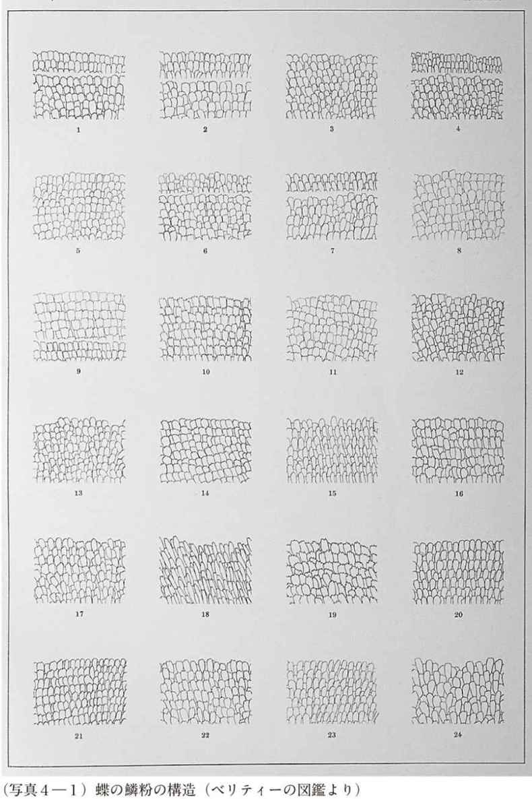
蝶や蛾が嫌いな人は「粉っぽいから」と言う。実に鋭い指摘だと思う。昆虫の中で、「翅が鱗粉で覆われている」グループ、それが「蝶と蛾」なのだ。
アグリアス・アエドン・ロドリゲッツィーの黒い翅の地色や前翅の赤い斑紋は、これで説明出来る。その部分の翅が黒い鱗粉、赤い鱗粉でびっしりと覆われているのだ。
では、青紫色の幻光斑紋は、どうして輝くのか。どうして翅の角度によって、青や紫色に微妙に変化するのか。これはもう、ミクロの世界だが、「青色の鱗粉」の上に「何枚かの極めて微小な透明の板」が一定の傾斜角度で並んでいる。その透明の板の間には極く僅かな隙間がある、という構造になっている。そこに太陽光が当たると、光の入射と反射、屈折の作用で繊細なバランスの色に輝き、青紫色の幻光が生まれるのだ。ガラスやクリスタルの細緻な工芸品を思わせる構造である。
鮮やかな斑紋に加えて、翅に派手な、あるいは微細な輝きを持つ蝶は多い。それぞれ構造は違っているが、鱗粉の持つ本来の色素に加えて、こんな複雑な構成要素で、蝶の美しい翅は成り立っている訳だ。
蝶は昆虫の中で最高度に進化した、複雑な形態を持つ生物と言える。
さて、私をこれ程までに虜にしたアグリアス・ロドリゲッツィーだが、この章の冒頭で述べた江田氏のロドリゲッツィーのデータラベルには、〝Boca de Chajul, Chiapas, Mexico（ボカ・デ・チャフール、チアパス、メキシコ）〟と書かれていた。「メキシコのチアパス、という所に行けば、ロドリゲッツィーが採集出来るかもしれない」そう考えたら、矢も盾もたまらずメキシコに行きたくなってきたのだ。
メキシコの一番南にある「チアパス州」は、日本の四国位の広さである。
標高四千メートルを越える山脈（南シエラ・マドレ山脈）があるかと思えば、石灰岩地帯の中のエメラルド色をした湖沼群や、標高わずか百五十メートル程の低地に広大な熱帯雨林がある。狭い地域に、驚くほど起伏に富んだ地形がある。
一九九二年十月、私はメキシコ・シティーから飛行機とバスを乗り継いでチアパス州のラス・マルガリータスにやって来た。
チアパス州とグアテマラの国境地帯に、果てしなく広がる低地の熱帯雨林がある。そこは「ラカンドーニア」と呼ばれる地域である。今も発掘調査されていない、千を越すマヤのピラミッドや古代遺跡群が密林の中に埋もれている。あまりにも奥深い密林地帯なので誰も遺跡に近づけず、発掘活動が出来ないと言う。この熱帯雨林のどこかに、アグリアス・ロドリゲッツィーが棲んでいるのだ。
ラス・マルガリータスは白塗りの漆喰の、二階建ての家々が並んでいる小さな町だった。ソカロ（広場）にある椰子科植物の並木が、埃っぽい、赤茶けた周りの風景の中で新鮮に見える。飛行場は一寸広めの運動場、という感じだった。白いペンキが塗られた木の箱が幾つかおいてある。タコス売りの屋台かと思ったが、それがセスナ機会社のカウンターなのだった。
「高い。もう少し負けてくれませんか」セスナ機会社の人が「往復で五百アメリカドル」と言うので交渉してみる。毎晩ビデオテープと本でスペイン語を勉強したのが、役に立っているのだ。「それなら、船で行けば。川を遡る船便があるから、一週間もあれば着くよ」と言われて沈黙する。
こうして翌朝、パイロットと私を乗せたセスナ機は、ラス・マルガリータス飛行場を飛び立った。二人乗りの小型機である。
セスナ機がぐっと機首をあげ、ふわりと浮いた。サボテンや竜舌蘭が所々に生える半砂漠に囲まれた、白いラス・マルガリータスの町と飛行場が斜めに見えた。みるみる小さくなる。飛行機が旋回して体が横向きになった。スーッと体が落ちる感覚がする。緊張して座席の横のバーにしがみつく。私は遊園地のジェットコースターの類がだいっ嫌いだ。
気が付くと、コクピットから見えるのは、地平線まで続く熱帯雨林の樹冠だけになっていた。いよいよラカンドーニアの大熱帯雨林の核心部へ一直線に飛んでゆくのだ。
しばらくして眼下を見ると、ラカンドーニア熱帯雨林が果てしなく広がっていた。私にとっては始めて見る新大陸の熱帯雨林だ。見事な階層構造の樹林がどこまでも続いてゆく。濃緑色、黄緑、茶色がかった緑、様々な緑の色合いにこんもり盛り上がった、高さの違う木々の樹冠がひとつひとつ、届く様な近さで眼下を通り過ぎてゆく。
文献によれば、同じ中央アメリカのコスタリカの熱帯雨林では、百平方メートルの中で見つかった植物の種類は二百二十三種類もあるという。この広大な森林にいったいどれだけの種類の植物があるのか。
アグリアス・ロドリゲッツィーの生態も、幼虫が食べる植物も何も解っていない。ただ他の、アグリアス属の蝶の食草の記録から「幼虫がコカ科植物を食べるのではないか」という推測が出来た。それでは、コカの木のある場所に、誰かに案内してもらえば良いのだ。そうすれば成虫の蝶も、そこに飛んでくるはずだ。しかしこの広大な森で、どうやってそんな所を見つけるのだ......。
遠くの木々の梢の中にチラッと石の建造物が見えた。パイロットの顔を覗くと「ピュラミッド」と事も無げに言う。「ここで墜落したら、どうなりますかね」と手振りを交えて聞いてみる。「それっきりでお終いだね。五十年は機体も見つけてもらえないだろうね」などと言う。目元が少し笑っている。
突然、セスナ機が高度を下げて、木々の梢に主翼を擦りそうな低空飛行になった。「うわーっ、本当かよ」樹林の中に、ひときわ大きく入道雲の様に樹冠が盛り上がっているデカイ木に、激突するのではないかと思ってしまう。その横をすり抜けた時、突然、森林の中に幅三十メートル程の細長い草地が見えた。セスナ機はそこに向かってぐんぐん高度を下げる。やがて車輪が草地に触れた感触があった。そこが、滑走路なのだった。
セスナ機の周りを、小柄な先住民族系の人達が取り囲んでいる。パイロットが早口で何か言っている。私が泊まる所まで、荷物を運んでもらう交渉をしているのだ。
滑走路の端は、小さな船着き場になっている。そこで小舟に乗る。小船の周りに蚊柱がたっている。幅十メートルを越す、水量がたっぷりある鉛色の川がゆったりと流れている。熱帯雨林を貫いて流れるラカンハ川である。泥の川岸に倒木が幾つも見える。傾いた日が、対岸に見える木々の幹をオレンジ色に染めていた。
さざ波をたてて蛇行する川を遡り、上流の川岸に小船をつないだ。再び陸に上がり焼畑と疎林が混じった場所を歩いていく。川を離れると涼しい風が吹かなくなり、地面から湧き上がる植物の匂いと太陽の照り返しの暑さの中をひたすら歩いていく。小さな峠を登りきった時、そこにある粗末な立て札を見て、私は立ちすくんだ。「チャフール村、人口三百三十二人、家の数五十八。そうか、本当にこういう地名があったのだ」自分に何度も言い聞かせていた。
この地域を流れるラカンハ川は、チアパス州の最南部を流れ、グアテマラとの国境を成している。標高百五十メートルの熱帯雨林の中を川は延々と流れている。広大な地域がラカンドーニア国立公園（メキシコ側）、マルケス・デ・コミーディアス国立公園（グアテマラ側）とされ、保護されている。保護区の中は基本的には立ち入り禁止で、焼畑耕作や森林伐採などは許されていない。
森林の周辺には「ラカンドーネス」と呼ばれる先住民族の人達が所々にコミュニティを作っている。モンゴロイド系の小柄な人達で、マヤのオリジナルな習慣を持ち続けている。彼らはマヤ文明を築き上げた人達の子孫だとされている。
チャフール村はこの先住民の人達に加え、チアパス州やグアテマラの各地から移り住んできた人達の集落である。自分の出身地に住めなくなった食詰め者達がこんな僻地の村まで流れて来た。彼らはスペイン系なのか、白人の香りを漂わせている。
また、いかにも「ならず者」や「兇状持ち」という言葉がぴったりと当てはまる、惚れ惚れする様な悪党面の人達が何人もいた。実際、凶悪犯罪をやってこんな所に潜伏している、という人が何人もいると後で知った。
彼らには、私がラス・マルガリータスから何本も持って来た「テキーラ酒」と「ラム酒」のボトルが興味の的だった。大きなバケツを借りて、同じくラス・マルガリータスで調達した、半分腐ったバナナ、パイナップルと一緒にドボドボと酒を入れる。それを何杯も、泊めてもらった家の中庭に置いておく。たちまち凄まじい匂いが辺りに発散して、蠅や虻が寄って来る。それを食べるヘビやトカゲやヒキガエルも現れる。
何でこんな事をやるのかと言えば、アグリアス採集の為の準備なのだ。
第４章で書いたが、アグリアス属はタテハチョウ科、という大型で逞しい蝶の一グループである。近縁のフタオチョウ属、イナズマチョウ属、というグループが東南アジアにもいる。これらの蝶は、林床や樹冠などあまり人目につかない場所を高速で飛ぶ。飛翔力が強くてとても捕虫網では採集出来ない。
けれど、この様な「腐った果実と酒」や、他にも「人糞」「おしっこ」「動物の死骸」など強烈な刺激臭のするものに寄って来る。東南アジアの採集地では、タテハチョウ科の蝶が驚くべき無防備さで、口吻を伸ばして夢中になってこれらの液体を吸っている光景を見る事が出来る。こんな、腐敗・発酵したものが蝶にとっては何よりおいしいご馳走なのだ。日本のカブトムシと同じ習性である。私はフィリピンの蝶の採集人から、こんな方法で蝶を採集するのを教えてもらった。彼らは板切れにこれらの液体を塗りたくり、見た事もない珍しい蝶を沢山、採集していた。
「アグリアスも同じだ」とペルーやブラジルに採集に行った人から聞いていた。私はフィリピンで作らせた、フタオチョウ属、イナズマチョウ属の蝶を採集するのに絶大なる効果を発揮した「バタフライ・トラップ」を幾つも持って来た。それはナイロン製の円筒系の筒で、その中に円形の板を針金で吊るしてある。ナイロンの筒と板の間には幅三センチ程の隙間がある。板の上に、酒に浸した腐った果実を置く。その匂いに引かれてアグリアスがやって来る。十分に液体を吸った後、上に舞い上がると筒の中に閉じ込められてしまうのだ。というわけで、準備万端整えていた。
同じ村に、メキシコ市から来た鳥類学者達の一団が滞在していて、二、三日すると友達になった。中に一人英語を話す女性がいた。彼女はガブリエラ・ガブリエルという名前で、渡り鳥や大型のフラミンゴなどの鳥類の調査に来ていると言った。何しろ、スペイン語の複雑な会話は全然解らないのだ。この人だけが頼りである。
村の人達が何か言って来たり、モメ事があると「おーい、ガビー」とずうずうしく呼んで、通訳を頼むのだ。私に呼ばれて、村の人達に冷やかされたりしていた。彼女も満更ではない様子である。
毎朝、トルティージャというトウモロコシで作った薄いパンのようなものを食べて、村の外に採集に向かう。ガビー達の一行は親切で、自分たちが食べるチーズやハムを分けてくれたりした。トルティージャに挟んでそれを食べる。三食毎日、このくり返しだった。
何日か滞在するうちに「マリポーサ（蝶）を採りにきた」という噂が広がり「前にフランシアとアレマンニャ（フランス人とドイツ人）が来た時、案内した」と言う男が現れた。彼は「マリポーサの木」に連れて行ってくれた。「ディエゴ」という浅黒い肌の背が低い男で、縮れた黒髪と切れ上がった目をしていた。
いつも、液体が入ったバケツを抱えてディエゴはついて来る。強烈な匂いにしかめ面をしている。「マリポーサの木」は本格的な熱帯雨林から外れた、焼畑の間に残された小さな林の中にあった。その場所や、他にも目を付けた所にトラップを吊るすのだが、何日間も成果が全く上がらなかった。毎朝早くと夕方、採集に行く。トラップに腐敗・発酵した液体を補給する。「酒＋腐った果実」だけでなく「人糞」「おしっこ」「動物の死骸」、色々と現地調達してやってみたが、トラップに入っているのは「カスリタテハ」「ツルギタテハ」などの平凡な種類ばかりだった。
チャフール村に来て二週間程過ぎたある日の午後、マリポーサの木の近くで私は頭を抱えていた。どうしてもアグリアスの採り方が解らなかった。体の周りに、沢山の虻の様な双翅目の微小な昆虫が集まっていた。昼も夜もこれに苦しめられ、羽音に悩まされていた。無数に刺されて足首や顔が赤黒く膨れ上がり、熱を持っていた。ディエゴは私の傍らでバケツをぶら下げたまま、下を向いて何かスペイン語でぶつぶつと呟いていた。
顔を上げると、ガビー達の一行が、野鳥の調査から戻って来たところだった。私が木陰に座り込んでいると、私とガビーの二人だけになっていた。何となく気恥ずかしい。ガビーも双眼鏡で、遠くに飛んでる色鮮やかなインコを見たり、カチカチと時計の音をさせて野鳥を数える真似をしていた。横顔を見ると、長いまつ毛が可愛らしく見えた。額やうなじに汗をびっしょり掻いて、まき毛がくしゃくしゃにくっ付いているのを見て、ドキリ、とした。あの時、手でもぐっと握りしめたら、どんな展開になっていただろう。メキシコ娘が極めて純情だとは、知らなかったのだ。
その時、ガビーが教えてくれた。ディエゴは「トランパン（トラップの事）をもっと上、木の梢に吊るさなければ駄目だ」と言っていたらしい。そんな事、考えた事もなかった。私はアジアやニューギニアの経験で、トラップを木の梢に吊るすなんて想像もしなかったのだ。
こうしてアグリアス採集のヒントを得ることが出来た。私は持って来たトラップを全て木の梢近く、十メートル位の高さに吊るした。トラップの中身を「発酵したパイナップルとテキーラ酒」だけにした。数日後、トラップに一頭のアグリアス・ロドリゲッツィーが入っていた。それは前翅の先に僅かの擦れがあるだけの新鮮な雄で、漆黒のビロード地に目が覚めるようなピンクがかった赤斑紋を持っていた。慎重に、慎重にトラップの中で飛び立たないように気をつけてたぐり寄せ、胸を押して殺す。指先が小刻みにふるえて止まらない。この蝶を採るためにはるばるここまでやって来た。私がアグリアス・ロドリゲッツィーを三角紙に包むのを覗いている、ディエゴのいつも気難しい無表情な顔が、少し微笑んでいる。
数日後、もう一頭の雄を得てから、私はこの村を後にした。一頭は私のコレクションにする。もう一頭は日本で売り、次の採集旅行の費用の助けにするのだ。私のボートが河岸を離れる時、見送りに来た人達の中にガビーの顔はなかった。彼女に「アスタ・ルエゴ」（また会いましょう）と言うことも出来なかったのだった。
その後、チャフール村へは行っていない。近年大きな山火事があったとか、左翼武装ゲリラが現れて行き難くなったとか聞いている。
「地球上に存在しない蝶を、新しく創出する」
「そんな事が、出来るものか」
と蝶に相当詳しい人でも思う。初めて話を聞いて、信じる人はまずいない。
この男は大ぼら吹きの妄想家なのだ、と思われてしまう。大野義昭氏はそんな、人が「絶対に出来るはずがない」と思い込んでいる常識を覆す数々の事をやってきた。大野氏が創った蝶の標本を見せられると、誰もが「信じられない」と首を振り、目の前にある現実を受け入れようと必死になる。
大野氏も第１章で述べたインセクト・カーニバルの主催者の一人だ。いつも会場にはすごい美人を伴って現れる。お住まいは目白だが、年齢も経歴も、この女性との関係も全て謎である。
標本商は虫の話をさせると饒舌になり、何時間でもしゃべり続けるが、自分のプライベートな話題になると途端に寡黙になる人ばかりだ。別に隠しているのではなく、自分の身辺になど、あまり興味がない。それより、頭の中では虫の事ばかり考えている。私生活に謎が多い標本商の中でも、大野氏はとりわけ神秘的な存在である。
蝶の食草、植物について異常に豊富な知識がある。独自に開発・工夫した飼育の技術がある。古今のヨーロッパの文献に詳しくて珍本、稀覯本の数々も持っている。収集家や標本商の間で、一目も二目も置かれている男である。
蝶の楽しみ方の一つに「飼育」がある。野外に出かけて蝶の食草を捜して、幼虫や卵を見つけてくる。それを自宅で親蝶にまで育てる。
例えば、「クモマツマキチョウ」という蝶がいる。日本では本州の、長野県を中心とする山々の河川の上流に分布する。この蝶の成虫を採集するには、例えば南アルプスの千丈ヶ岳の山塊、三峰川の上流の険しい岩だらけのＶ字谷を何時間も歩いて、飛んでくるポイントを探すのである。一年で成虫が見られるのは、五月から六月の二週間程の間だけだ。大変な苦労をして歩き、運良く天気に恵まれても一日に一頭か二頭、採集出来れば運が良い方だ。何も採れずにみじめな思いで帰って来る事もよくある。
ところが、この蝶の食草の「ミヤマハタザオ」という植物を知っていれば、たとえ天気が悪くても、多数の卵を見つける事が出来る。ミヤマハタザオはＶ字谷の川が氾濫した、岩や砂が入り混じった様な所に点々と生えている。ひとつひとつの花穂を捜して卵を見つける。それを家に持って帰る。卵が孵化するのを待ち、代用食を与えて育てる。六月末頃には終齢幼虫になり、蛹になる。それを温度、湿度に気をつけて保管しておけば、翌年の春には蛹から羽化して成虫になる。それを殺して標本にすれば、多数の美しいクモマツマキチョウが標本箱の中に並ぶ。
もっと数が欲しい人は、親になったクモマツマキチョウの雄と雌を「人工交配」させて、交尾後の雌に卵を産ませる。雌は多数の卵を産むから、それをまた育て、翌々年の春には、無数のクモマツマキチョウが羽化する。こうして何代も、ひとつの親蝶から始まった蝶の飼育を続けていく事を「累代飼育」と言う。
人工交配と累代飼育は難しい。何度も失敗して、経験によって得られた知識と技術の蓄積がなければ、不可能かもしれない。
日本産の、約二百六十種類の蝶のライフ・ステージは殆どが解明されている。完全品の蝶を多数、標本箱に並べたい人には、「飼育」は不可欠の技術である。クモマツマキチョウの様に、成虫の採集が難しい種類が幾つもある。飼育によって成虫を孵す方が、ノウハウさえ知っていれば、はるかに簡単だからだ。
蝶の飼育をやる人には、こういう、沢山の成虫標本を得るのが目的の人もいるが、飼育そのものが好きな人がいる。植物や幼虫が好きで可愛くてたまらず、育てるのが大好きな人達がいるのだ。蝶が、卵から芋虫や毛虫型の幼虫、蛹、美しい成虫へと完全変態していく様は、神秘的な不思議さを持っているからだ。
大野義昭氏は、こんな「飼育好き」の虫屋の中でもカリスマ的な光を放っている。
日本の蝶の、数々の種類の飼育ノウハウと、人工交配や累代飼育のテクニックを確立した。
また台湾や中国や東南アジア、インドシナ半島の、各地の熱帯雨林、暖帯、温帯林を歩きまわって、多くの珍蝶の幼生期を解明した。
飛んでいる蝶を採集するのさえ難しい未知の外国のフィールドで、蝶のライフ・ステージを明らかにするのは、想像を絶する困難さがある。過去の文献を調べ尽くし、狙いをつけた蝶の類縁関係を調べて、どんな植物を食草にしているのかを類推する。こういう地域の植物は、今も同定が出来ず、種名さえ解らない種類も多い。
これまでの長く豊富なフィールド経験と専門知識で身につけた直感力、独特の嗅覚と運が、今までに数々の奇跡を生み出してきた。そしてフィールド・ワークを支える体力。大野氏は今でもフルマラソンを二時間四十六分で走り、三十メートルをゆうに越えるウラジロガシの大木にスルスルと登ってしまう。日本各地や外国から、材料となる蝶を家まで持ち帰る。飼育をして蛹を羽化させ、親蝶にする。その親蝶どうしを人工交配させて、また卵を産ませる。
大野氏は、ただ純粋に同じ蝶の世代を繰り返すだけでは面白くないので、違う種類の蝶と掛け合わせて、この世の中に無い、まったく新しい蝶を創り出そうと試みた。目白の自宅と、台湾南部に作った食草園に植えた食樹で数々の実験を繰り返す。「既成概念の破壊」が氏の生き方のテーマなのである。
アキリデスAchillidesというグループがある。分類的にはアゲハチョウ科のカラスアゲハ亜属である。ニューカレドニアやオーストラリアのオセアニア地区から、インド亜大陸まで二十四種類前後が分布している。幼虫はミカン属（Citrus）、サンショウ属（Zanthoxlium）などを食べる。成虫は青や青緑色に輝く美しい翅を持っている。収集家の人気度は高い。
日本にもミヤマカラスアゲハPapilio maackii、カラスアゲハPapilio bianorの二種類がいて、地理的変異に富んだ美しい種類である。四月から八月末頃まで、郊外の柑橘類がある場所などで、見かける蝶である。
日本、朝鮮半島、中国、奄美、沖縄、台湾に分布するカラスアゲハと、インドシナ半島からヒマラヤ山脈に沿ってパキスタンまで分布を伸ばすクジャクアゲハPapilio polyctorは、古くから「同じ種類か？」或いは「極めて近い類縁関係にある別種なのか？」という議論がされてきた。
大野氏はヒマラヤのクジャクアゲハの雌を採って来て卵を産ませ、飼育して雌の親蝶を羽化させた。これと同時並行的に飼育していた、日本のカラスアゲハの雄と強制交配をさせてみた。するとそのクジャクアゲハの雌は幾つかの卵を産んだ。次の世代（Ｆ１）が孵化したのである。これを飼育して蛹にすると、クジャクアゲハ、カラスアゲハ両方の特徴を持つ蝶が羽化した。雄も雌も羽化したので、さらにこの雄雌同士を強制交配させてみたら、雌は卵を産んだ。つまり雄も雌も生殖能力が有るのだ。その卵からは次々世代（Ｆ２）の幼虫が孵化して成虫になった。
これでは、生物学の定義でいえば、クジャクアゲハとカラスアゲハは完全な同種、という事になる。自然の中で、ヒマラヤのクジャクアゲハと日本のカラスアゲハが出会う事は絶対に無い。しかし、大野氏の三年間にわたる交配実験で、この二つが、ひとつの同じ「種」であると証明された訳である。
ヒマラヤにはオオクジャクアゲハPapilio arcturusという種類もいる。大野氏はこの生きている雄も手に入れた。ちょうどその頃、伊豆七島、三宅島のカラスアゲハを飼育していた。これは本州のカラスアゲハよりも、翅表の緑色の鱗粉が特に強く輝く個体が多い。何か、直感的なものがあった。両者のハイブリッド（雑種）を作ろうと閃いたのだ。
大野氏の話によれば、蝶の近縁度は、強制交配をさせて雑種を作る実験を試みた時、「いかに親になるか」の度合いがひとつの目安になると言う。近縁度が遠いと、つまり分類的に遠く離れた種類だと、どんなに強制的に試みても、交尾そのものが成立しない。
例えばアゲハチョウ科のカラスアゲハと、シロチョウ科のクモマツマキチョウでは強制交配は不可能である。もう少し近い関係にあると、交尾が出来るようになる。雄から雌の体に精液が入るようになる。この段階になると少し進歩して、新たなる蝶、ハイブリッドを創り出す可能性が出て来る。雌が卵を産んでくれる可能性があるからだ。
とはいえ、まだ沢山の壁やハードルが待ち受けている。幾つもの困難な障害を克服していかなければならない。
オオクジャクアゲハ雄と強制交配させた三宅島カラスアゲハ雌は、百ほどの卵を産んだ。けれど七十卵くらいが無精卵だった。確実に精液が注入されているはずなのに、無精卵の割合がこんなに多いのだ。残りの三十卵ほどが有精卵だった。やがて卵は黒化してくる。卵殻を通して中に幼虫体がうっすらと見えてくる。
気の早い大野氏はもう、親蝶の姿を頭の中に描いてしまう。どんな蝶になるのか？ 興奮して体が震えはじめる。けれど飼育の困難はまだ延々と続いていく。せっかく卵が黒化したのに、中の幼虫に卵の殻を食いやぶる力が無く、そのまま死んでしまう。やっと殻に穴をあけても、雑種ゆえに力が弱いのだろう、卵殻から抜け出せずに死んでしまう。
「でも、雑種って、丈夫なんじゃないの？」などと、とんでもない勘違いをする人がいる。私の妻だ。犬の雑種を想像しているのだ。
そういう、同じ種類どうしを掛け合わせたものと一緒くたにされては悲しくなる。全く異なる「種」の間に出来た本来の意味の「雑種」がいかにデリケートで弱いものか、解り難いであろう。
大野氏の三十個有った有精卵のうち、無事に孵化したのは、十頭ほどだった。これからが、大野氏の経験と知識の真骨頂である。卵からでた幼虫をどうやって飼うか。シャーレとか飼育器などの容器に入れると、ウイルスや雑菌やカビが入って衛生状態が悪くなる。中の空気も淀んでしまう。出来るだけ自然に近い状態で飼ってやった方が、雑種の幼虫の様に弱い場合は、かえって元気に育つ場合が多い。こういう場合を想定して、蝶の飼育に必要な、ほとんどあらゆる種類の食草が、自宅の庭に植えてある。思いつきではこんな実験は出来ないのだ。食草に幼虫を載せ、絹のネットを被せて保護してやる。いわゆる「袋がけ」という状態で飼う訳である。最初は真っ黒な、毛むくじゃらの数ミリしかない幼虫が、食草を食べ始めると一日で、少しふくらんで大きくなる。「元気だ」という状態がわかるのだ。
ひと眠りして翌日見ると「あっ、食っている。成長している。これはいけるかもしれない」と確信する。けれど、食いつけずに死んでしまう幼虫も必ずいる。脱皮を繰り返して幼虫は成長していく。アゲハチョウ科の場合、最低でも五齢幼虫にまでなる。脱皮をする度に、皮をうまく脱げずに死んでしまう個体がある。やはり雑種は弱いのである。終齢幼虫になり、それまで鳥の糞に擬態していた茶色い幼虫が、鮮やかな緑の芋虫になる。ここまで育つのに、幼虫の数は五頭にまで減っている。
「もうあと少しだ」と自分と終齢幼虫を励ます。二センチ位の芋虫が、葉をどんどん食べてくれる。五センチ位までに大きく膨らんでいく。いよいよ次は蛹である。蛹化が近づいた幼虫は、袋がけのネットの中を適当な場所を捜して歩き回る。変な所で蛹にならない様に、それとなく誘導してやる。
アゲハチョウ科の蛹は「帯蛹」と言う。幼虫が糸を吐いて腹端（お尻の先）を食草などの台座に固定する。さらに糸を吐いて体をひっかけるリングを作る。このリングも食草に固定する。幼虫はリングに頭をくぐらせて、食草と平行、地面にやや垂直な状態になり、三日月の形のまま硬直してしまう。
これが「前蛹」である。前蛹になる前に幼虫はドッと大量の糞を出す。二、三日すると、幼虫の背中が割れて皮が脱げ、蛹が現れる。雑種の幼虫は、これがうまく出来ないのだ。半円形のリングをうまく作れないので体を引っ掛ける事が出来ず、下へ落ちて死んでしまう。お尻を糸で固定出来ずに落ちてしまう個体もある。うまく蛹になれたのは三頭だけである。
あとは羽化を待つばかりだ。ところが、蛹のまま、半年、一年、二年が過ぎても蝶が出ない事がある。幼虫の体内にはすでに、親蝶の頭、胸、腹部、脚や翅が少しづつ形成されているのだが、何かが機能せずに、死んでしまう個体もあるのだ。
いよいよ羽化が近くなると、蛹の表面が黒くなって来る。中の翅が透けて見えるのだ。ここで安心してはいけない。羽化する時は、蛹の頭の部分が「パチン」と割れて、親蝶が顔をだす。脚を伸ばして蛹殻に捉まり、スルスルと体が蛹から抜け出て来る。この時、体がひっ掛かってしまい、うまく蛹殻を脱げない個体がいるのだ。蛹殻の中で頭だけ出したままもがき、翅を伸ばせずにそのまま死んでしまう個体がある。こういう、羽化不全をどうやって解決するのか。
大野氏は、この実験とは別に、羽化する蝶についても調べてみた。羽化直前の蛹を割ってみる。蛹の中で蝶の翅は、翅表を表にして、胸部と脚に覆い被さる様になっている。つまり体の前に合わせられた形である。翅はまだ小さいが、伸びた時のサイズが凝縮された小さな斑紋もしっかり現れている。蝶の翅が美しく伸びきるためには、体の前側に合わさった翅を、反対側に反り返る様にしなければならない。こうなって初めて、蝶は脚で蛹殻や食草に掴まり、翅を下に垂らせる状態になるからだ。
自然に蛹から抜け出せる蝶は、その時肛門から「羽化液」をだす。ある種は蛹の中にたらし、ある種類は蛹から出てから、外にダラダラとたらす。部屋で何百という蛹を飼っていると、蝶が一斉に羽化した朝は、赤茶色の羽化液で床が染まって大変である。羽化液は、幼虫が蛹になり、蛹の中で親蝶が作られてゆく過程では必要なものだが、羽化した後にはもう必要のない、老廃物である。
一連の実験で解ったのは、羽化液を出さないと、絶対に蝶の翅は反対側には反り返らず、正常には伸びない、という事だった。蛹の中から抜け出せない羽化不全の蝶を何とかする為に、蝶のお腹をマッサージして、人為的に羽化液を出させる方法も編み出したのである。
いよいよ羽化した蝶の翅が外側に反り返り、蛹殻に掴まる事が出来た。あとは翅を下にして、引力で伸びるのを待つだけである。
蝶の翅は鱗粉で覆われているが、「翅脈」というものが翅の中にある（写真６―１）。これは、蝶の翅を「凧」に例えてみると解る。凧がへなへなにならない様に、竹ひごやビニール棒の「骨」で補強して組立てる。この骨のようなものだ。
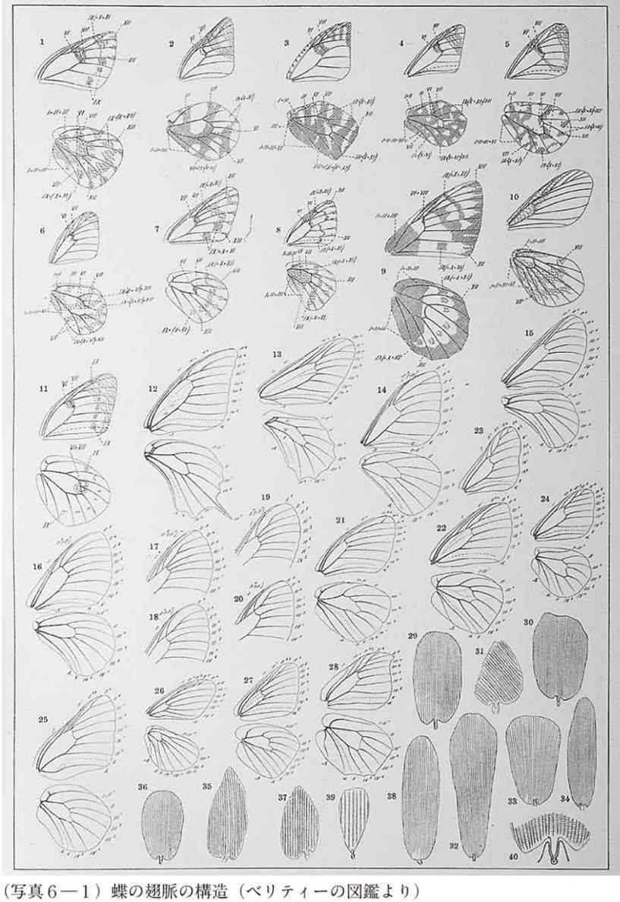
羽化したばかりの蝶の翅は小さくて、波打ちシワシワである。翅脈の中は空洞で、ストローの様な構造になっている。蝶は体を動かし翅をゆっくりと開閉させ、血液を翅脈の中に送り込む。血液の色は緑色で、空気に触れると真っ黒になる。血液がゆっくり送り込まれ、翅のサイズも次第に伸びてくる。一度翅脈の中に送り込まれた血液は、ある時間が過ぎると固まる。翅が伸びきった蝶は、四枚の翅をゆっくり羽ばたかせて、翅脈の血が完全に固まるのを待つ。大体一時間位で蝶の翅は伸びきるのだ。
こうしてやっと、数頭の三宅島カラスアゲハ雌×オオクジャクアゲハ雄のハイブリッドが羽化した。羽化したのは雄だけである。雑種は羽化するまで、翅がどんな斑紋になるのか解からない。期待に反してすごく汚い地味な蝶になる可能性もある。雄雌どちらの遺伝的要素が強く出るか予想が出来ない。二つが合わさり、考えもしなかった奇妙な斑紋の蝶が羽化する事もある。
大野氏は、数々のハイブリッドの創出に挑戦して来た。今でこそ慣れ、いよいよ羽化の時になっても緊張しないが、最初の頃は興奮した。
「どんな蝶なのだろう」という期待。「世界でこの雑種を見るのは、俺が初めてだ」という優越感。そして「自然界には存在しない蝶を創りあげた」という満足感。羽化が近づくと、蛹がパチン、と割れるのを何時間もずーっと待っていた。
三宅島カラスアゲハ雌×オオクジャクアゲハ雄の雑種は、大野氏の想像を超えた、素晴らしく美しい蝶だったのである（口絵―５）。
「強制交配」という、ハイブリッドを創るには不可欠の方法とは、どんな技術なのだろうか。大野氏の話によれば、強制交配の技術は一九〇〇年代初頭のイギリスかヨーロッパ大陸の何処かで、標本商の誰かが編み出したのではないか、と言う。強制的に蝶の雄と雌を交尾させて、卵を産ませて珍しい蝶や雑種を作る。第二次世界大戦の後、旧ユーゴスラビアのロルコビッチという昆虫学者と、一九五六年にアメリカ鱗翅学会に発表された英国のクラークとシェパードの論文「蝶のハンドペアリング」によって、一般の収集家も知ることになった技術である。
長い間、標本商にとっては門外不出の、絶対に明かせない秘密だった。それはそうだ。蝶の「雑種」は自然界では非常に珍しく、ごく稀に採集されるだけだ。当然、収集家の間では、非常な高値を呼ぶ事になる。そんな珍蝶を、自分の技術で沢山、という訳にはいかないが、ある程度造る事が出来れば、それを少しずつ売れば、大きな収入になるではないか。他人に教えるはずがなかった。ロルコビッチは昆虫学者なので、発表したのである。
大野氏は、こういう情報を少しは参考にしたが、具体的な方法は殆ど自分の工夫で開発した。
蝶の交尾器は腹端にある。例えばアゲハチョウ科では雄にはバルバ、把握器valvaという、二枚貝の殻の様な形をした器官が、一対お腹の先に付いている（写真６―２）。普段は二枚貝の様に閉じているが、興奮するとパカッと開くのである。開いた内部にはウンクスuncusという「かぎ」の様な器官が上部に、挿入器aedeagusがその下にある。雌の交尾器は、肛門の下に卵を産み落とす産卵口があり、その下に凹んだ「かぎ穴」がある。その下部に「交尾口」が開いている。自然状態で交尾をする時の行動は種類によって様々だが、雄のvalvaが開いてパクッと雌交尾器を両側から挟む。同時にuncusを雌のかぎ穴に引っ掛けて固定し、aedeagusを交尾口に挿入して精液を注入するのである。他の科の蝶も、交尾器の構造は基本的には同じである。
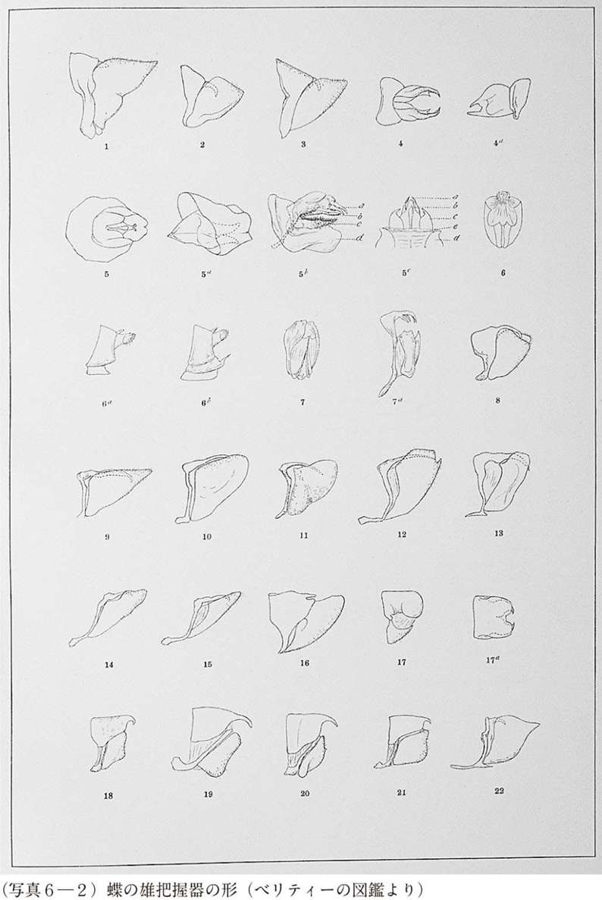
valva、uncus、aedeagusなど各器官の形態は種類によって違う。翅の斑紋など外見が非常に良く似ている種類が、valva、uncus、aedeagusなどの形が全然異なっていて別種だと解った、というのも良くある話である。
これを人の手でやるとどうなるか。まず、利き腕に雄を持ち、別の手に雌を持つ。お腹の角度を、つまり雄と雌の腹端をくっつける角度を、山型（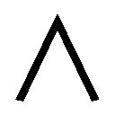型）にする。Ｖ字型とか様々な角度で試してみたが、型が一番良い。というのはこの角度だとvalvaが開いた時、内部のuncusとaedeagusが良く見えるからだ。uncusを雌のかぎ穴にひっかけ易いのである。
昔のヨーロッパの文献を読むと、valvaを開かせるのに苦労した様だ。人間には二つの手しかないから、もう一人助手に小型ピンセットを持たせて開かせて、ヨシッというタイミングでくっつけたりしていた。手伝わせた助手に「絶対に言うな」と言い含めておいたのに、逆に秘密をバラすと脅迫されたり、勝手に弟子がやって雑種を造ってしまったり、など色々なモメ事もあっただろう。
助手を使わず、自分一人でやる方法はないものか。大野氏は雄を摘まんだまま、別の指でお腹の根元（胸部に近い方）を圧迫してみた。こうすると、雄は苦しさのあまりvalvaを開いてくれるのだ。しかし、力加減が難しい。微妙な指先の加減が少しでも狂うと、内臓破裂を起こしたり、突然体液をダラダラッとたらして、台無しになってしまう。実験をくり返して成功したのは、雄のvalvaを、雌の腹端を使って開かせる、という方法である。雄の腹端を、雌の腹の先に持ってゆき、微妙に触れ合わせてスリスリやる。ツンツン刺激してやるのも良い。種類によって色々なやり方、パターンがある。
ある種は、産卵口のまわりを刺激してやる。別の種類は、ある「匂い」を一緒に与えると興奮するのか、valvaを開く事が解った。蝶を痛めずに、強制交配出来るようになったのだ。大野氏はこの三十年以上の間、世界中の蝶の人工・強制交配に挑戦してきたが、種類によって無限のノウハウが有り、興味は尽きなかった。これが「ハンド・ペアリング」という技術である。
同じ種類どうしでハンド・ペアリングをやるのは、慣れれば割と簡単である。しかし別の種類だと、かなり類縁関係が近くても難しい。uncusが入るかぎ穴は、産卵口の少し後ろにあるが、種類によって場所も形も違う。uncusの形も違う。異なるジグソーパズルを、無理やりくっつける様なものだ。蝶だって違う種類だと、雄もヤル気を起こすのが難しいだろう。雌も拒否したくなるだろう。交尾が出来るようになる時期も種類によって異なる。ある種類は羽化してからすぐできるものも、あるいは二、三週間待たなければならない種類もある。こういう事はどんな本にも書いてないから、自分で試してみるしかないのだった。
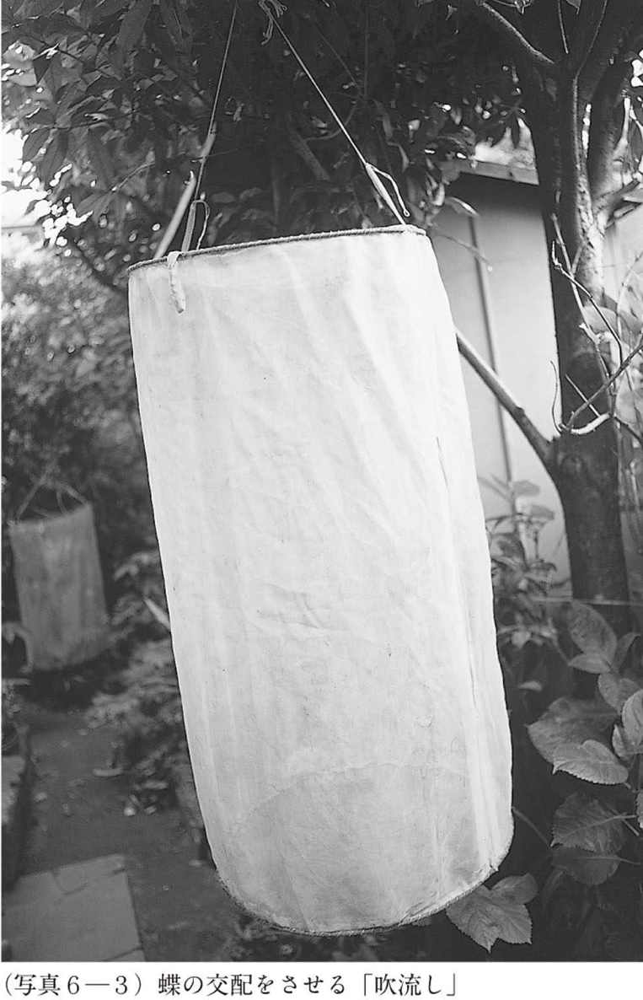
大体朝十時から午後二時位までの、太陽の光が一番良い状態の時が交尾させやすい。これは、あくまで自然に、雄に雌を見つけさせるのである。珍しい種類の雄と雌が手にはいれば、それを交配させて増やす事が出来る。しかし、あくまで同じ種類同士である。ハイブリッドを創るには、一般的にはハンド・ペアリング方式でなければ無理なのだった。
大野氏はアゲハチョウ科から始めて、ほぼ全ての科の人工交配、強制交配に成功した。アゲハチョウ科は割と性欲に満ち溢れている、という感じで簡単にvalvaをひらき、パクッと絞める個体が多かった。タテハチョウ、ジャノメチョウ科の蝶は気難しい。
たとえvalvaをひらいても、気分がのらないと締めてくれない。日本の国蝶オオムラサキなどは、「俺は知らねえ。強制交配で交尾なんかできるか」という雰囲気で、色んな刺激を与えても全く無関心だったが、十日から二週間経つと、これがかなり容易に出来ることが判った。
南アルプスのクモマツマキチョウと、平地のツマキチョウを強制交配させて「ユキワリツマキチョウ」と呼ばれる雑種を、最初に創りあげたのも大野氏である。その数年後、実際に野外で同じ様な雑種が採集され、収集家を驚かせた。また本州の平地に棲むゴマダラチョウと、日本では奄美大島の特産種であるアカボシゴマダラのハイブリッドも創った。これは期待に反してあまり美しくなくて、苦労の割には収集家に今ひとつ、人気がなかった。いろいろ創ったなかで、三宅島カラスアゲハ雌×オオクジャクアゲハ雄のハイブリッドは、最高傑作といえる美しさなのだった。
これまで、超一流の標本商である反町氏、「昆虫王」の長畑氏、日本屈指の大収集家・江田氏、飼育のスペシャリスト大野氏について述べてきた。この章では、私自身の採集人生を振りかえろうと思う。
海外出張は標本商にとって日常生活の一部だが、とりわけ思い出が深いのは駆け出しの頃だ。その頃は採集旅行の費用や仕入れの資金は無かったけれど、蝶への情熱と行動力だけはあった。その後色々な所へ行ったけれど、沢山の珍品珍蝶を手に入れたけれど、最初が一番懐かしい。
今振り返ると人生の岐路になった、運命を分けた幾つかの採集旅行があった。
大学を卒業する頃、私は家賃三万円、四畳半のアパートに住んでいた。冷蔵庫、テレビ、クーラー、ストーブ、電話、風呂、トイレも何も無い。毎日万年床を座布団に、座卓で背中を丸めて汗をかいて展翅をしていた。
「展翅」はその頃の、私の生活の糧である。他の蝶屋さんの標本を預かって展翅をする。一日やれば二十頭位は出来る。一頭やれば百円もらえた。二千円位にはなるので、これで生活をしていた。狭い部屋は預かった蝶や甲虫と標本箱、展翅板、昆虫図鑑などで充満し、かろうじて寝るスペースだけがあった。
炊飯器も無いので、三食インスタント・ラーメンだ。展翅の後、狭い炊事場で体を拭き、ラーメンを作る。「さあ食おう」という時、座卓に積み上げた蝶の標本がドッと崩れて丼の中に入り、台無しになった。オンボロアパートなので鍵も壊れている。展翅に疲れて寝ていると近所の子供達が勝手に部屋に上がり込み、「昆虫おじさん、大きいカブトムシを頂戴」などと言って標本をひっかき回していた。
私は毎日、自分が情けなかった。
卒業したのに仕事に就かず、昼間からぶらぶらしている。当時はフリーターは珍しかった。展翅をして、日銭を稼いでいるだけの毎日だ。
「俺は何をするために生まれてきたのだろう」自分が進む道を決められず悶々としていた。父はそんな私を「この大馬鹿者」と言って怒った。勘当されて実家を追い出された。「蝶」に取り憑かれてしまったためにこんな事になってしまった。
一九七〇年代末から八〇年代は、日本の「虫の趣味」の水準がヨーロッパ諸国に追いついた時期だった。それを象徴する「世界のアゲハチョウ」（五十嵐遇・講談社）、「日本産蝶類大図鑑」（藤岡知夫・同）、「トリバネアゲハ大図鑑」（大屋崇・同）、「図説世界の昆虫」全六巻（坂口浩平・保育社）、などの素晴らしい大著が続々と出版された。
一九八〇年には塚田悦造・西山保典の「東南アジア島嶼の蝶・第一巻、アゲハチョウ編」が出版された。このシリーズは、フィリピンと、ウェーバー線の西側からアンダマン諸島に至る、東南アジアの島々の蝶類図鑑である。この地域の蝶の全科を、「種」だけでなく「亜種」まで全て図示解説し、未整理のものを分類整理する、という壮大な計画なのだ。八一年九月には「第二巻シロチョウ・マダラチョウ編」が出た。二〇〇二年六月現在、「第五巻タテハチョウ編・下巻」までが刊行されている。十九世紀ヨーロッパの図鑑の様に息が長い作業である。
当時、東南アジアでまともな蝶の図鑑が無いのはフィリピンだった。英領だったマレーシアやシンガポールには立派な蝶の図鑑がある。旧植民地の蝶を良く調べ上げ、完全に近い鱗翅類のリストや大部の蝶類図鑑が出来ている。インドネシアやタイにも蝶の図鑑はあった。ところがフィリピンにはカール・ゴットフリート・ゼンパーCarl Gottfried Semperというドイツ人が一八八六年から九二年の間に作った「フィリピンの蝶」という銅版画彩色の図譜しか無かった。世界を網羅したザイツの蝶類図鑑で一番標本が載っていないのがフィリピンだった。
塚田悦造さんはそういう空白を埋める為に、「東南アジア島嶼の蝶」という図鑑を企画、刊行をされた。今日では、東南アジアについて言えば、日本の収集家や標本商の水準は極めて高い。塚田さんという一人の大収集家の影響力によって、各地の素晴らしい蝶や甲虫が、日本に続々ともたらされたのである。円高が進んで経済力もアップして、海外へ採集に行く日本人も増え始めた頃だった。塚田さんの図鑑に刺激されて何人もの採集家がフィリピンや東南アジア各地に行っていた。私が大学生になったのは、こんな頃だった。
私にこういう様々な知識を授けてくれたのは、通っていた大学の近くにお住まいの仁平勲さん、「木曜社」という標本商をされている西山保典さん等だった。仁平さんは有名な採集・収集家であり、西山さんは、私が小学生の頃から愛読していた昆虫雑誌に何時もエキサイティングな記事を書いていた。西山さんこそ、私の「ヒーロー」と言うべき存在である。塚田さんの図鑑や、お二人や他の何人もの採集家のお話を伺い、熱気に影響されて、フィリピン採集旅行へ行った。その頃のフィリピンには、ゼンパーの蝶類図譜以来誰も調査をしていない、日本人が誰も採集に行っていない、そんな未知の小島嶼群が幾つかあった。そんな中の一つ、カラミアン諸島へ行く計画をたてた。
その数ヶ月前、塚田悦造さんを訪問する機会があった。標本箱一万三千箱を越える、日本最大の蝶・昆虫のコレクションを初めて拝見した。塚田さんは突然訪ねた一介の学生を、対等の「虫屋」として扱って下さった。標本箱ひとつひとつを手に取って、採集や収集の苦労談や楽しみを聞かせてくれた。次から次に現れる、見た事のない珍蝶、圧倒的な数の標本に気が遠くなった。
あまりに凄いものを見ると、緊張で人は眠くなる。「あちらで、お茶でも飲みましょう」と書斎に通され軟らかい椅子に座った時、スゥッと意識が遠のいた。ご本人の前で、数分間ヨダレをたらして眠りこけてしまった。
「塚田コレクション」はあまりに衝撃的だった。生まれて初めて「蝶の標本収集」とは何か、虫の趣味の「奥深さ」と「凄さ」を垣間見た気がした。この時、何かの啓示を受けたのである。
なぜカラミアン諸島の蝶が興味深いのか。それはパラワン島とミンドロ島の間の「ミンドロ海峡」には生物地理学で言う「改定ウォーレス線」が引かれているからだ。フィリピンの昆虫相は、パラワン島とその他の地域では大きく異なっている。つまり、十九世紀末の探険採集家ウォーレスが指摘した様に、マレー半島とボルネオ、スマトラ、ジャワ、バリ等の島々の間は、海底が二百メートル程の浅い海である。そこは氷河時代に海面が今より低かった頃は繋がっていて「スンダランド陸塊」というひとつの大きな陸地だった。だからこれらの島々の蝶や昆虫は大陸の、インドやインドシナ半島や中国南部のものと共通の種類が多い。その頃は相互の交流が有ったからだ。パラワン島もスンダランド陸塊の一部だった。ボルネオ島北部との間は「バラバック海峡」という浅い海である。従って細長いパラワン島の蝶は、マレー半島、大陸との共通種が非常に多いのだ。
一方、バリ島と東隣りのロンボク島、ボルネオ島とセレベス島、などの間は水深千メートル以上の「深い海」によって隔てられている。深い海の両側では、昆虫相が全く異なる。かつてスンダランド陸塊だった地域の蝶がアジア大陸を起源とするならば、ロンボク以東の小スンダ列島やセレベスにはニューギニア島起源の蝶が多い。ウォーレスは、バリと何千キロも離れた蝶には多くの共通種があるにも拘わらず、僅か六十キロの海峡を隔てたロンボク島の蝶相が全く異なる事に気がついた。そこでこの様な仮説を立て、後に著書「動物地理学」で証明した。
ウォーレスは鳥や哺乳類、蝶や甲虫でこれらの島々を区分けしたが、淡水魚の分布を調べた、ウェーバーという人は別の見解を持った。つまり、セレベスの東にあるサナナ島と、モルッカ諸島の間、小スンダ列島の東端のタニンバール島と、ケー諸島、アルー諸島などの間でも生物分布の区分けが出来る。これが「ウェーバー線」である。
今日ではウォーレス線とウェーバー線の間のセレベスなどの島々の昆虫相は、アジア起源から、ニューギニア起源の昆虫相へ移行する中間的なもの、とされる。加えて複雑な地誌の影響を受けた独特の昆虫相なのである。この中間地域は「ウォーレシア」と呼ばれる。フィリピン群島も同じ性格を持つ。ひとつの「フィリピン共和国」という国なのだが、パラワン島と他のフィリピンの島々では、まるで異なる蝶が棲んでいる。
同じ意味で、ミンダナオ島とボルネオ島の間の島々「スールー諸島」や、フィリピンの北、ルソン島と台湾の間の島々、「バブヤネス諸島」も興味深い。異なる生物区系の、境界線上にある島々だからである。かつて誰も採集・調査をした記録がない「未調査の島々」、そういう場所に挑む時、採集家は燃え上がるのだ。
一九八三年三月、私はマニラ湾の南港から出る小さな船でカラミアン諸島へ向かった。二十七時間の船旅だった。早朝、ブスアンガ島の「コロン」という小さな港に着いた。萱の様な草で作られた、高床式の家々の背後に円錐形の山影が見えた。夜明けの薄明かりの中で、次第に島の風景が鮮やかになってゆく。マングローブの海岸や灌木林がある。「この島にはどんな蝶がいるのだろう」激しく心が動かされる。それは胸が締めつけられる眺めだった。
丁度乾季の真っ最中で、ブスアンガ島は異常に蝶の数が少なかった。島に着いてすぐ赤痢に罹ってしまった。吐瀉物にまみれて意識が朦朧として、一週間以上寝たきりだった。偶然船の中で知り合った親切な人が、看病してくれた。歩けるようになると、よろめく体で港に行った。
「もう、マニラに逃げ帰ろう」と思ったのだ。ところが次の船は三週間後だという。それでは、再び採集に行くしかないだろう。島の奥地へ向かった。私はこの島に一ヶ月余り滞在して、四十種類余りの蝶を採集した。殆どがパラワン島との共通種だった。採れたのは、パラワンでは採集人がせいぜい五ペソ位で売っている種類ばかりである。コレクションの対象になる様な、珍奇美麗な蝶は何もいなかった。日本に持ち帰っても、特に高い値段が付く訳ではない。しかし分布の記録や知見としては、貴重なものばかりである。
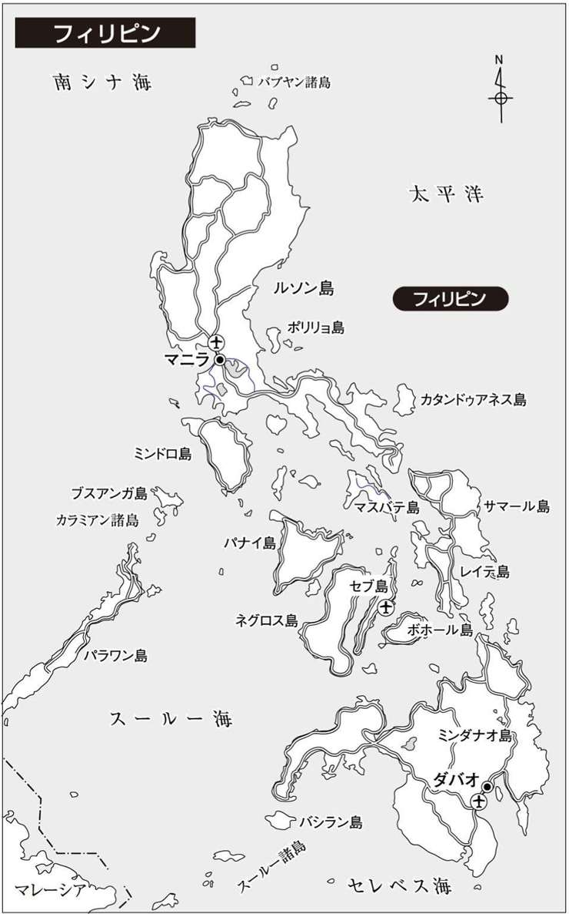
カラミアン諸島の旅はハードな採集旅行だった。けれど、生まれて初めて感じる充実感があった。
私の様な一介の採集人でも、未調査の地域に行けば何かの成果がある。蝶の標本の世界に少しは貢献できる、という手ごたえを掴んだ。三月初めに日本を発ち、五月末に戻ってきた。大学に戻ると新緑の中、同級生はネクタイを締めて就職活動に走り回っていた。私はボンヤリとそれを眺めていた。南の国で強烈な体験をした。私は脱皮した後の蛹殻の様だった。帰国してからはこれまで以上に周りの刺激に対して鈍くなった。ボンヤリしている間に、卒業したのだった。
ある夏の暑い日、小林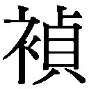彦さん、という方がアパートに訪ねて来た。東南アジア各地の蝶を熱心に収集されている。小林さんは私の貧乏暮らしを見て、少し驚いた様子だった。二人が座ると狭い部屋は身動き出来なかったからだ。
「川村君、今度は何処へ行く？」
「スールー諸島へ行きます」
私は、温めていた計画を熱っぽく話した。
スールー諸島はフィリピン最南端、ミンダナオ島とボルネオの間に弓の形を成して連なる島々である。ゼンパーの蝶類図譜の銅版画には、見た事が無い蝶が幾つも載っていた。それは十九世紀の末にスールー諸島で採集された。以来誰も調査に行っていない。イスラム教過激派の巣窟で、まともな採集など出来ないと思われていた。
私はそこでまともな蝶を採って来るつもりだった。幾ら地図を眺めていても、行ってみなければどんな所か解らない。もし成果が上がらなければ、何か別の仕事を見つけて足を洗う。いつか生活に余裕が出来たら蝶をまた集める。もし何かの成果があれば、自分の人生なのだから、一回だけの人生なのだから、好きな事をやろう。標本商の世界で生きて行こう、と決めた。事故に会い、帰って来られないかもしれない。それは考えない事にした。虚無と破壊衝動が体を支配していた。鬱屈したパワーだけは誰にも負けなかったのだ。
また別の日には近藤友一さん、という方が見えられた。お勤めの大学病院から各種の抗生物質、飲み薬や座薬を持って来て下さった。「人間などすぐに死んでしまう」と諭された。飛行機も通ってない僻地の島で、破傷風や狂犬病や劇症肝炎にかかると絶対に助からない、と言う。元気だった人が、手当てが遅れたばかりに一日で死んでしまう。気を付ける点を細かくメモに書いてくれた。
こうして私はスールー諸島に旅立った。ホロ島、タウィタウィ島、シブトゥ島を回り、サンガサンガ島という所に辿り着いた。そこはもう、ボルネオの島影が微かに見える最果ての島である。
スールー諸島の島々は、スペイン、アメリカ植民地時代を通して一度も権力の下に入った事がなかった。ホロ島を中心に「スールー王国」というサルタンが支配する独自の国が海上貿易で繁栄していた。宗教の違いもある。フィリピン共和国が独立してからも、決して中央政府の命令に従わなかった。それでフィリピン軍が送り込まれて、これらの島々の鎮圧にあたっているのだ。
タウィタウィのヘッドクォーターに泊めてくれた司令官は「サンガサンガ島でもフィリピン軍の基地に泊まりなさい」と言って紹介状を書いてくれた。けれど私は、サンガサンガ基地ではなく、海岸線を南に下ったイスラム教徒のラケット・ラケットという村に泊まる事を許してもらった。その海岸沿いに灌木や森林が繁っていて、採集には良いポイントに思えたからだ。
その村では村長の「ハッジ・モハマッド」という人が家に泊めてくれた。その人の話では自分達は「サマール」という部族なのだと言う。ところが隣り村の人達は「タオスグ族」というホロ島から来た人達で、同じイスラム教徒なのに仲が悪い。つい先日も村の男が村境の森で殺された。だからそっちの方へ行くなら村の者五、六人を安全のために連れて行って欲しい、と言う。私にとっては日当を出すので大迷惑だ。仕方が無いので採集ネットを配り、「基本給十ペソ、蝶を採集したら一頭につき一ペソ」という事になった。
海岸に沿って広がる灌木林の白い花にツマベニチョウやコドルスタイマイが舞い降りて来た。ボルネオを近くに望む島で有りながら、ミンダナオ島との共通の蝶が多いのだ。それが少しずつ、斑紋が異なり別の顔をしている。
「島」という閉じた生態系で、そこに隔離された蝶は独自の変異を遂げる。「種」は変化するのである。これまで二ヶ月余り訪ねた島々で幾つもの新亜種、未記録種を採った。ゼンパーの図譜にある謎の蝶も採った。この村の採集でも成果が上がった。灌木林の向こうに、フィリピン陸軍の装甲車が何台も見えた。島の奥の、イスラム教徒ゲリラの掃討作戦に向かうのだ。
あと数日、採集したら船でこの島々を離れる。マニラに、日本に帰る。お金も体力も限界だった。
その夕、ハッジ・モハマッド氏の家に戻ると、「あなたの荷物が盗まれた」と言う。持って来た缶詰や、シャツやズボン、懐中電灯などが無くなっていた。その上、タッパーウエアに入れて大切にしまっておいた、今までの採集品が半分位に減っていた。三角紙に包んだ蝶が無くなっているのだ。さすがにこれはこたえた。これまで血の滲む様な思いで採集した蝶を盗んだヤツがいる。何という嫌がらせであろう。私から蝶を盗んで何になるのか。その晩は吐き気がする怒りと絶望で、明け方まで眠れなかった。私は徹底的についていなかった。
翌朝は何もやる気がせず、ハンモックで寝ていた。すると「蝶を採ったので買ってくれ」と言う男がいる。ハッジ・モハマッド氏の家に居候している「アンバン」という十五、六歳位の少年だ。両親がどこか、中近東の国に出稼ぎに行ってるので面倒を見てもらっている、と言っていた。その三角紙に包まれた蝶を見ると、乾燥してナフタリンの匂いがする。みんな、見た事のある蝶だ。私がホロ島やタウィタウィ島で採集した、日付スタンプも押してある。
「この野郎！」私は怒りに蒼白になってアンバンの胸ぐらを掴んだ。こいつが昨日、私の採集品をかっぱらった。それを今朝、「一頭につき一ペソ」で買ってもらおうと持ってきた。何と言う馬鹿だ。アンバンの泣き声を聞いて村の人達が集まって来た。皆、事情を知るとおし黙った。
「しかし」と私は考えた。ここで怒りを爆発させてどうなる。私だってこの人達の居候なのだ。何であれ、採集品が戻って来たのは良かった。しばらく肩で息をした。怒りを納めてから決めた。黙って下を向いているアンバンに声をかけた。「おい、採集にいくぞ」私とアンバンをとり囲んでいる人達の空気が急に柔らかくなった。私が今日も彼を「十ペソで雇う。水に流す」と知って安心したのである。
アンバンは捕虫網を掴んで外に飛び出して行った。私が海岸の採集ポイントで追いつくと、ランタナの花に来る蝶を一生懸命採集していた。その日の午後、村の井戸で体を洗っていると、アンバンがやって来た。五十頭あまりの蝶を採っていた。ヤル気を出したのだ。その中の、三角紙に包まれた一頭を見て、驚愕のあまり指先が震えた。頭に血がのぼって眩暈がした。エベリーナイナズマ、という蝶だ。前翅と後翅の亜外縁が雪の様に白い、見た事が無い変異をしていた。この採集旅行で最高、最大の成果だった。帰国後、仁平・川村により、Euthalia evelina albusequusとして命名記載されたのである（写真７―１）。
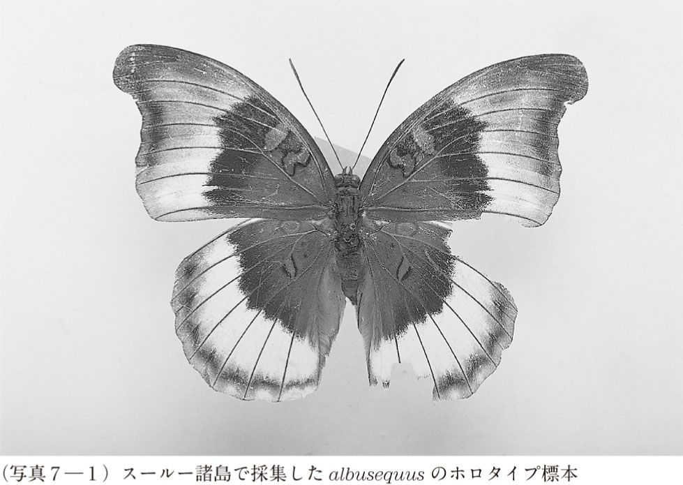
帰国してから一番に小林彦さんに連絡をした。採集旅行の旅費を出して下さった。出発前は、「川村君の夢に賭けるのだから、採集成果はどうでも良いよ」と言ってくれた。だからこそ、採集品の中から最初に、一番欲しい蝶を選んで欲しかった。
スールー諸島、最後の日に手に入れたエベリーナイナズマを見せると「こんな蝶がこの世にいるのだね」とうめいた。興奮して顔が青ざめていた。私は、小林さんが「これは欲しい。俺にくれ！」と言うと思っていた。収集家なら当然である。けれどこの人は、その言葉を飲み込んだ。
「この蝶は君が持ってなさい。命を賭けた採集旅行だったのだから」と言ったのである。
こうして私は標本商になる決心をした。スールー諸島の採集成果くらいで認められる程、この世界は甘くない。けれど「これから世界中の蝶を採ろう」という出発点になったのだ。
インセクト・フェアで蝶を売り、収集家の方々から旅費を募り、次のフィリピン旅行の計画を練った。毎日展翅をして糊口をしのぐ、という生活から少し進化したのである。
今振り返ると、フィリピン各地を放浪して歩いた頃が一番思い出がある。信じられないかもしれないが、その頃は一ヶ月三百ドル位で生活していた。当時はまだインセクト・カーニバルは始まっておらず、三月と九月のサンケイ会館インセクト・フェアを中心に私の生活は回っていた。四ヶ月から半年位かけてフィリピン各地で蝶や甲虫を採り集める。それをここで一発勝負をかけて売り、次の旅行資金にするのだ。
私が気に入って何回も訪ねた場所はパナイ島の「アロヒパン」という村だった。パナイ島はフィリピン中部、ビサヤ地方の大きな島である。島の西側に、標高千五百メートル程の懐深い山脈が連なっている。この山々にどんな蝶が棲むのか、当時は殆ど知られていなかった。
海岸にココ椰子のプランテーションが何処までも続いている。水田の中、所々に竹藪があり「ポブラシオン」という小さな集落が見える。石造りの朽ち果てた教会がある。水牛が尾を振り、蠅を追い払いながらゆっくり木蔭を歩いてゆく。そんなノンビリした風景の中をジプニーに乗って、何度もアロヒパン村に通ったのだ。
この村は、パナイ島の最高峰マジャアス山から張り出す尾根に囲まれた、山奥深い所にあった。初めて訪れたのは、カラミアン諸島へ行った翌月だから、大学四年の頃である。村長の「アブラハム」という人の家に泊めてもらい、村の人達と一緒にマジャアス山に登ってテントを張って蝶を採集した。
「プロローグ」でも書いたがこんな事件があった。
山に登って数日後、辺りを採集してテントに戻ると、男二人と女一人の見知らぬ人達がいた。迷彩服を着てカーキ色のズボンを穿いている。アーマライト銃を肩から下げている。最初、登山の人かと思ったが、村の人が青ざめた顔で「彼らはＮＰＡだ」と耳うちした。「新人民軍」という共産ゲリラの武装組織である。不思議と恐怖は感じなかった。女の人が穏やかな感じで、英語を話した。「私達はマニラの学生でした。この運動に共感して、訓練に身を投じたのです。この国は一部の金持ちに搾取されている。」そんな事を言っていた気がする。「ここで何をしているのか」と聞かれたので、「蝶です。蝶を採りに、日本から来ました」と言って採集した蝶を見せ、捕虫網を振りまわして採集のポーズをした。三人組は「日本に蝶はいないのか？」と笑っていた。女の人が改まって「何か、寄付をお願いしたいのですが。」と言う。有無を言わせぬ迫力だった。テントの中のお米や缶詰を全てあげてしまったのだ。
山から降りて、アブラハム氏の家にまた泊めてもらった。村には萱葺きの小さな教会があって、アブラハム氏が聖書を読む声が聞こえる。村の人達が讃美歌を歌うのが聞こえる。私が熱を出して寝込んだ時は「医者」を呼んで来た。それは皺だらけのおばあさんで、私の上半身を裸にした。口の中で何やら薬草をクチャクチャと噛んでいる。それをぺッぺッぺッと私の背中に吹き掛けて、てのひらで塗りこんでくれるのだ。
夜は七時頃に皆寝てしまう。石油ランプがもったいないからだ。それで村の人は皆子沢山だ。アブラハム氏も八人の子供がいる。早朝三時頃、ラジオの音で目が覚める。ずっと動かなかったけれど、私が捨てた懐中電灯の電池を入れて、音が出る様になった。ある日、普段は温厚なアブラハム氏が、青筋を立てて棒切れを振り回し、飼い犬を追いかけ回していた。大切に飼っていたメンドリがやっと卵を産んだ。今夜はご馳走のはずだった。それを犬に食べられてしまい、怒り狂ったのだ。村中の人がひっくり返って笑っていた。私はこの時間の流れ止まって眠った様な、アロヒパン村の人達が大好きだった。
フィリピン南部のミンダナオ島へも、何回も行った。「アポ山」「キタンラッド山」などや、「パーカー山」というこの島の一番南にある山塊にも挑戦した。そこは「ティボリ族」という山岳先住民族が住む、奥深い山々である。麓のフィリピン人の村で、馬と食料を調達した。山道を、何日も馬の背中にゆられてティボリ族の村にたどり着いた。
ティボリ族の人達は背が低く、色鮮やかな民族衣装を着ていた。その村はパーカー山の中腹にあった。村長の家に泊めてもらい、毎日山の尾根を登った。いつも「ネルソン」というその家の居候が一緒に山へ行く。ネルソンはネグロスかパナイか、ビサヤ地方からの出稼ぎ者で英語をうまく話した。採集の手伝いや山道の案内をしてくれた。パーカー山の山頂は大きな火口で、コバルト色の神秘的な火口湖が原生林の中に見えた。その付近で多数の珍しい、デリアス属Deliasの蝶を採集したのだった。
その頃のフィリピンは騒然としていた。マルコス政権が倒れてアキノへ、ラモスへと大統領が変わる頃だった。ティボリ族の村長から、後で手紙が来た。私が山を降りた一週間程後に、彼の家が共産ゲリラに取り囲まれた。彼らはネルソン一人を拉致して山に連れ去り、何処へともなく消え去ったと言う。「ネルソンの正体は、共産ゲリラの連絡員だった。だから山奥のティボリの村に来た。新人民軍との接触を待っていた。貴方と山に行くのを嫌がらなかったのも、ゲリラ達を捜していたからだ。貴方は運が良かった」そんな内容の手紙だった。
ある年のこと、ミンダナオ島を後にして、パナイ島に向かった。懐かしいアブラハム一家。アロヒパン村の人達にまた再会したかったのだ。麓の町まで行った時、不穏な噂を聞いた。半年程前にアロヒパン村は新人民軍の焼き討ちにあった。アブラハム氏の家も燃やされ、彼は銃弾を二発、頭に撃たれたが生きていると言う。弟の一人は新人民軍に殺されたと言う。翌日、駆ける様にしてアロヒパン村に向かった。アブラハム氏は、首と頬に銃弾の跡があり、ひきつった顔、人相がまるで違っていた。奇跡的に銃弾がそれて、一命を取り留めたと言う。村のいたる所が掘り起こされ、塹壕の様になっていた。家々の焼け跡があった。新人民軍とフィリピン軍の戦闘の跡が生々しく残っていた。
他にも様々な出来事を思い出す。親しくなった「リヤノ氏」という標本商の、マニラの家に泊めてもらっていたある晩、激しい衝撃音で目が覚めた。一階で焜炉から漏れたガスが爆発したのだ。階段の下が炎に包まれているのを見た。恐怖のあまり腰が抜けて脱糞した。半年かけて集めた標本を抱きかかえて蹲った。「蝶の標本と一緒に俺も燃える」そう思った。すさまじい爆風の後、奇跡的に炎が消えた。焼けただれた一階に降りて立ち竦んだのだった。
その数日後、ガス爆発事故で亡くなった人のお葬式の最中、今度は近くで火事が出た。下町の家々が密集している中、突然すぐ近くに火柱が立った。今度は標本を入れた箱を抱えて裸足で逃げた。川を渡り、家々が燃えているのを呆然と見ていた。翌朝様子を見に戻ると、リヤノ氏の家の二軒隣りの近くまで焼け野原になっていた。
こんな事があって、九月のサンケイ会館インセクト・フェアの数日前に帰ってきた。半年以上も家賃を滞納し、薄暗い部屋の中は標本から発生したカツオブシムシがわんわんと飛んでいた。久しぶりに木曜社に挨拶に行き標本を買ってもらう。帰りの電車賃も、その日の晩メシ代も無いのである。その頃はインセクト・フェアの前日に標本オークションがあった。西山さんは丁度そのカタログを作っていた。
半年かけて集めた標本の中から、オークションに出品する蝶を選び、カタログ写真を撮ってもらう。次の日のオークション、その次の日のインセクト・フェアで私が出した蝶は、異常な高値を呼んだ。競り落として下さるコレクターの方々にはそんな私の事情を知る由も無い。けれど「気迫」が乗り移った標本は飛ぶ様に売れたのだ。この二日間で百万円位のお金が出来た。信じられない程の大金である。
これを元手にして、標本を仕入れて商売を始めたのである。
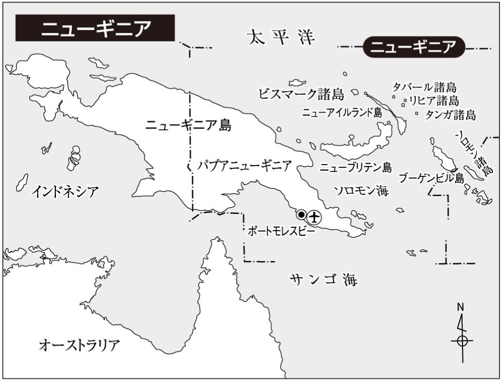
そんな田舎の村に滞在していると、毎日沢山の人達が私を見学に来る。私の様な肌の色、髭面の人間が珍しくてたまらない、日本人など見た事がないのだ。子供達は次に私が何をするか、好奇心に満ち溢れていつも後ろをゾロゾロとついて来る。どの国の子供達も、生き生きとした目が輝いていて可愛らしかった。
そんな所にはまた必ず「村一番の器量良し」と評判の娘さんがいて、村の人達の噂になっている。私も採集ノートの片隅にその名前を書き留めてチェックしておく。その娘さんと、村の中でバッタリ出くわす事がある。「本当に美人だなあ」と感嘆して見ていると、顔を赤らめて、はにかんで逃げてしまう。私はこういう時いつも「あの娘、俺に気があるのだな」と思い込んだ。勘違いばかりしていたのである。
ある時は、パプアニューギニアでトリバネアゲハの飼育をしている人から手紙が来た。「我が兄弟よ」という書き出しである。「彼女は私の親戚だが、お年頃である。今度来た時は、一晩語り明かしてくれないか」メラネシアンの、目のパッチリとした女性の写真が同封されていた。私は真剣に悩んだ。この女性も気立てが良さそうだったし、パプアニューギニアは外国人が昆虫採集するのに厳しかった。この女性と一緒になって、ニューギニアで思いっきり蝶採りをするのはどうか。私は、大学時代の恩師、神部武宣先生を訪ねた。先生は文化人類学者で、人生の岐路に立つ時はいつもご相談していた。ニューギニアから来たピジン語の手紙も所々意味不明で、読んで戴くのだ。先生は「君は何でも蝶に結び付けるから良くない。その方と良くお話ししてから決めなさい」と言われたのである。
ニューギニアの人達の習慣も興味深かった。ホーンビル（サイチョウ）やヒクイドリのいるジャングルの中を採集して歩くと、森の奥に、一緒に連れている現地の人が「イタンブー」と呼ぶ場所がある。その付近の木々の伐採は禁止なので、採集の環境に良さそうなのだが、そこまでは絶対に連れて行ってくれない。その部族の男性だけが入れる小屋があるらしい。彼等が「通過儀礼」の儀式を行なう場所で、他の者には絶対に秘密なのである。
フィリピン、インド、パプアニューギニア、何処へ行っても相変わらずの貧乏長期旅行だった。長旅を続けていると、時には資金が尽きてどうにも困る事があった。体が弱って病気入院したり、お金を盗まれて途方に暮れる。当てが外れて蝶も甲虫も成果が上がらず、安宿に泊まり粗末なベッドに動かない体を横たえていると、果てしなく心が沈んでゆく。不幸が一挙に襲って来るのだった。「日本に帰っても、俺の事など皆んな忘れてしまっているだろう」などと不安と焦燥に駆られて、気が遠くなる思いを何度もした。
そんな時にいつも、励まして下さり、助けて下さったのが仙台にお住まいの亀井文蔵さんである。亀井さんは仙台市内に三つの昆虫展示館を持っている、日本有数の蝶の収集家だ。自分で蝶の採集をするのも、本当に好きなのである。長期の採集旅行から戻り、亀井さんの展示館に私の採った蝶が陳列されているのを見る時、私は誇らしい気持ちになるのである。
何度か「もうダメだ」と思った時、声をかけて励まして下さったのが、私よりも年代が上の、経験も実力も遙かにある標本商の方達だった。「ショーパラーク」を経営している北原英男さん、「むし社」で雑誌と標本を扱っている雫石卓さん、藤田宏さん等である。
他にも沢山の虫屋の人達との出会いがあった。こんな人達の好意や縁があって、これまで続いてきたのだ。
こうして世界各地を歩いて、気がつくと大学を出てから十数年が経っていた。
少しだけ事務所も広くなった。けれど持っているお金を全て、蝶の採集や仕入れに注ぎ込んでしまう、という構図は全然変わっていない。
結婚もした。私が蝶に魅せられた「原点」である中学の時、香港の日本人学校の同級生とである。
香港にいた頃、彼女は近くに住んでいた。私が蝶を採りに歩いていると、時々犬の散歩などをしているのを見かけたものだ。結婚式は香港で挙げた。その前日、連れ立って香港島を歩いた。二十年振りだった。昔、蝶が良く来ていたシトラスの木があった。ここに行けばこの花や木があり、この蝶が採れる。全部精密に憶えていた。中学の頃毎日通った採集地に行った時、私の興奮は頂点に達した。ツマベニチョウの来たハイビスカスの植え込みがある。イワカワシジミを採ったクチナシの木もあった。夢中になって辺りを歩いた。懐かしさの余り、芝生の植え込みの上を転がった。明日の式の段取りをすっかり忘れていた。いや、そんな事はどうでも良くなっていた。
ふと気が付くと何時間も過ぎていた。慌てて置き去りにした場所へ戻った。彼女はハンカチを握りしめ肩を震わせて泣いていた。「しまった」私は顔を歪めて後悔したのである。
標本のコレクションには、その国の文化や収集家の人柄、センスなどが実によく反映される。私は標本商なので、日本各地や世界各国の、様々な収集家のコレクションを見せてもらう機会がある。皆、それぞれ独特の集め方があって面白い。
私の事務所に、時々標本を買いに来て下さるお客さんの一人に、森島忠行さんという方がいる。最初の出会いは、インセクト・カーニバルで声をかけてくれたのだ。集めているのは世界のアゲハチョウだ。いつの日か、世界中のアゲハチョウ科の蝶、全種、全亜種を集めてやろうと思っている。今、持っている標本の総数は、二万五千から三万点の間である。
森島さんの収集したアゲハチョウのコレクションは良く分類整理、手入れされていて素晴らしく、目を見張る珍品から普通種に至るまで良く揃っている。実に良く蝶を知っている。蝶の集め方を知っていなければ出来ないコレクションである。
例えばアオスジアゲハやコモンタイマイ、などという普通種の標本を沢山持っている。ソロモン諸島東端の島の亜種から、インドネシアの島々、インドシナ、中国大陸の各地、ヒマラヤの西の端の産地まで、展翅されて標本箱に綺麗に揃っている。こういう集め方は、それぞれの地域を得意とする標本商とマメに連絡を取り、どこか変わった場所へ誰が採集に行った、という情報を良く知らなければ出来ない。年期と、熱意が必要である。
一九八四年、森島さんは、たまたま日本人の知人がいたので、マレーシアのサバ州（ボルネオ島）へ行った。初めての海外採集旅行である。熱帯の美しい蝶を採集して、すっかり虜になってしまう。その後、休暇を取って、年に一度位、海外へ採集に行く様になった。キャメロン・ハイランド（マレー半島）やウジュンパンダン（スラウェシ）へ行った。
ウジュンパンダンの郊外に「バンチムルグ」という場所がある。ウォーレスがマレー諸島を探険した時に見つけた。沢山の蝶を採り、「蝶の谷」と呼んだ所だ。それが今でも、好採集地として知られている。
東南アジアには幾つか、収集家や標本商の間では有名な、こういった採集地がある。自然が良く保存されていて、森林の周辺や林道や渓谷に、無数の昆虫がいる場所があるのだ。現地の人はそこで、年間を通して蝶や他の昆虫を採集している。それを買い集めてストックしている「元締め」とでも言うべき標本商がいる。採集に来た日本人や欧米人に、自分達が採り集めた蝶や昆虫を買ってもらう。日本の標本商が虫を仕入れに来たりもする。採集の段取りをととのえたり、採集地までガイドをする。現地の人には大きな収入源である。
採集者が数日間、滞在しても、自分で採集出来る蝶の数も種類も、ごく僅かなものだ。何故かと言えば、まず熱帯の蝶は種類が多い。しかし一年中いつでも飛んでいる種類、というのは無い。ある種類が見られるのは一年のうちでも、一、二週間とか長くても数ヶ月である事が多い。場所にもよるけれど、雨季のド真ん中、乾季の真っ最中などに来てしまうと、悲惨な程に蝶の数は少ない。運良く蝶の数が多い時期に来たとしても、沢山飛んでいるのは、何種類かの、偏った種類ばかりである。たまに運の良い人がいて、何年に一度しか採れない大珍品をネットに入れたりもする。けれど、現地の人が採ったストックを買うのが便利である。値段も安いし、その地域にいる種類の一通りのものを集める事が出来るからだ。
現地の人は決して森林には手を付けない。木を切り倒したりする事はない。森林を守ってさえいれば、何十年も何百年もの間、毎年数万、数十万の蝶を採り続けても、決してその数が減らない事を、経験として良く知っているからだ。
森島さんはある日突然、「世界中のアゲハチョウを集めよう」と決意したのではない。あまりにも種類が多い海外の蝶を集めているうちに、次第に蝶の標本に対する知識が深まって、収集の対象が絞られてきたのだ。
最初は、標本商からカタログを送ってもらっても、インセクト・フェアに行っても、何百円単位の蝶しか買えなかった。それが高いものか安いものか、全然解らなかった。同じ種類なのに、東南アジアの島ごとに、違う亜種になっている。亜種が違えば、標本の値段のゼロが一つ違う。最初はこれが理解出来ず、損をするのが怖くて標本を買えなかった。標本を売っている人にたずねても、蝶の学名を使って早口で説明されるので、何が何だか全然解らなかった。
それでもアゲハチョウの収集を続けたのは、ほとんどの標本商が良心的で、信頼出来る人達だったからだ。「こんな事、聞いてもいいのかな」と思う事でも丁寧に教えてくれた。ボッタクリをする様な雰囲気ではなかった。気が付くと、標本商が、カタログや展示・即売会で売っている蝶の値段が解るようになっていた。「これは安い。こっちは高い」「この蝶は掘り出し物だ」などと。
アゲハチョウ科の蝶は、図鑑が何冊も出ている。参考になる文献も多い。日本語で読める図鑑があるのが良かった。そのうえ「コレクションの道筋」が出来ていて、素人にも入り易い。ただ、人気があるのでライバルも多く、値段が張るのと、大型種が多いので収納の場所をとるのが問題である。
アゲハチョウ科のコレクションは、切手やカード、コインの収集に少し似ている。集める範囲が解っている。未知の世界に踏み込んで調べながら集めてゆく、という面は薄い。例えば「ハナムグリ亜科」「コガネムシ科」「カミキリムシ科」などのコレクションは、集めるにしてもハナから「種名」さえも解らないものが多い。各分野の研究者による分類や同定も定まっていない。自分で外国の図鑑や文献や原記載を取り寄せて、調べながら集めなければならない。外国の収集家や研究者とマメにやり取りをしなければ集まらない。種類も、例えばカミキリムシだけでも十万種類以上もあって、多すぎてとても集めきれない。アゲハチョウのコレクションはこういうグループを集めるのとは、やや違うものだ。
「正直言って、集め始めた頃は、ここまで来るとは思わなかった」と森島さんは言う。
森島さんはまず、アゲハチョウ科に収集の対象を絞り、「種」を揃え、「亜種」も揃えた。「地理的変異」で集めた。「季節型」でも集めた。同じ種類の蝶でも、熱帯では雨季と乾季、温帯では春と夏と秋、など季節によって蝶の斑紋は違うのである。「個体変異」や「フォーム」ごとに収集した。同じ種類でも、蝶はバリエーションに富んでいて無限に面白かった。
「異常型」も集めた。これは究極の一点もの、と言えるかもしれない。翅の模様が流れる様になったり、黒化（写真８―１）、あるいは白化したりする。翅脈が無くなってしまったり、翅が五枚もあったり、頭だけ幼虫だったり、とにかく化け物みたいな蝶がいる。何らかのストレスが、卵から幼虫、蛹になる時にあると、こんな鱗粉の現れ方が本来の種類と違う、「異常型」が現れる、と言われている。例えば、極端な低温や高温に蛹などが晒された場合である。また、遺伝的な要因もあるらしい。「ホメオシス」という翅の裏の紋が表に現れたり、その逆になってしまう異常型がある。
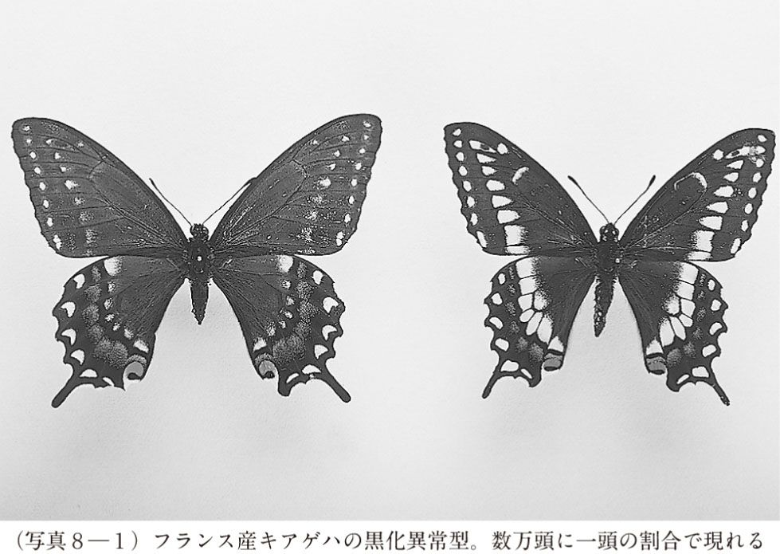
「雌雄型」というのもある。体の左半分が雄、右半分が雌、あるいはその逆の蝶である（写真８―２、３）。翅が左右不対称で、片方の前・後翅が雄、もう片方が雌なのだ。腹部も真っ二つに雄、雌にわかれている。腹端の雄把握器valvaが、片方だけ有るのが凄まじい。これは遺伝的なものではなく、その一個体限りのものである。何千、何万の蝶を飼育したり採集したりすると、たまにこんなのが現れる。
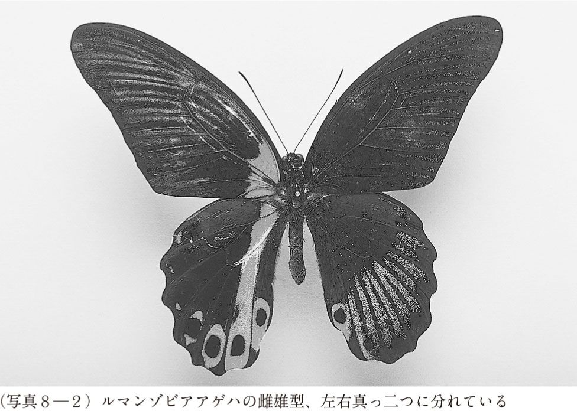
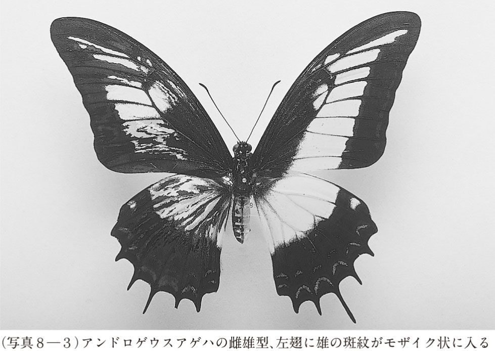
そして「ハイブリッド」がある。大野義昭さんの様に人工的に創ってしまう、奇跡を起こす人がいる。それも欲しいが、自然状態で偶然に生まれる「雑交の蝶」というのも不思議である。ソロモン諸島のビクトリアトリバネアゲハ、アオメガネアゲハの自然雑交個体、「アロッティトリバネアゲハ」（口絵―６）も手に入れた。これは雑交とは思えない程、自然体でこの上なく美しい。
標本を集め始める時期で、集まる蝶も全然違うのだなあ、とも思う。もう二、三年集めるタイミングが遅れていたら、標本商に入荷せずに買えなかった蝶も随分ある。これから集め始める人は、自分が高く買ったアゲハを、もっと安い値段で買える場合もあるだろう。けれど、今では買うのが難しい種類や高額になってしまったアゲハも沢山あるので、一長一短なのである。
しかし、森島さんは「アゲハチョウ科」という範囲を決めたまでは良かったが「地域」を限定しないで、「世界中の」としてしまった事が、いつのまにかこんな大コレクションを形成してしまうことになった。
東南アジアに分布するアゲハチョウは、大体二百四十種類位だったので、最初は、「すぐに集まるだろう」とたかをくくっていた。途中で何回か「しまった......」と思った事があった。けれど、コレクションの面白さに溺れてしまい、戻る事が出来なくなっていた。
今や、インド・オーストラリア区で、森島さんの持っていないアゲハは八種類を残すだけになった。この地域のアゲハチョウ科二百四十種類を、二十年かけて集め続け、文献のリストをことごとく塗り潰してきた。最後の難関に残ったのが、以下の種類である。
①Bhutanites ludlowi ブータンシボリアゲハ
一九三五年と三六年にブータン東部のトゥランシヤンシ渓谷、という所で採集された３雄２雌の標本が大英博物館に収蔵されているだけである。
②Papilio elephenor オナシカラスアゲハ
インド東部のブラマプトラ川上流や、ミャンマー国境のナガ丘陵に分布している。以前は極く稀に、インドの標本商などから入手する事が出来た。意外な年配のコレクターの方が持っていたりするが、この三十年間位、全く採集されていない。
③Papilio goddfley サモアネッタイモンキアゲハ
サモア諸島の特産種。一九八三年には日本人で採集した人がいる。吉田豊和さんという方だ。その後、日本や欧米の採集家が何人も狙って行ったけれど、誰も成功していない。環境が変わり、絶滅に近い状態にあるのかも知れない。日本には、この人が採集した標本しか無い。
④Papilio erskinei ウギパプアモンキアゲハ（写真８―４、５）
ソロモン諸島の南の方に、サン・クリストバル島という割と大きな島が有る。この島から船で半日程揺られた沖合いにウギUgi島というちっぽけな島がある。この島で採集され、一八六六年に記載された。以来謎の蝶である。私は銅版画の図を見た時「本当にこんな蝶がいるのだろうか？」と疑いを抱いた。ところが、江田茂氏が１雄１雌の標本を所有されていた。確かに実在するのである。
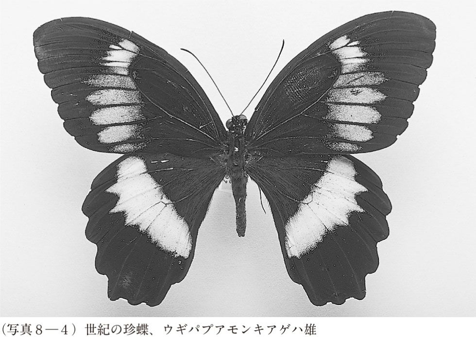
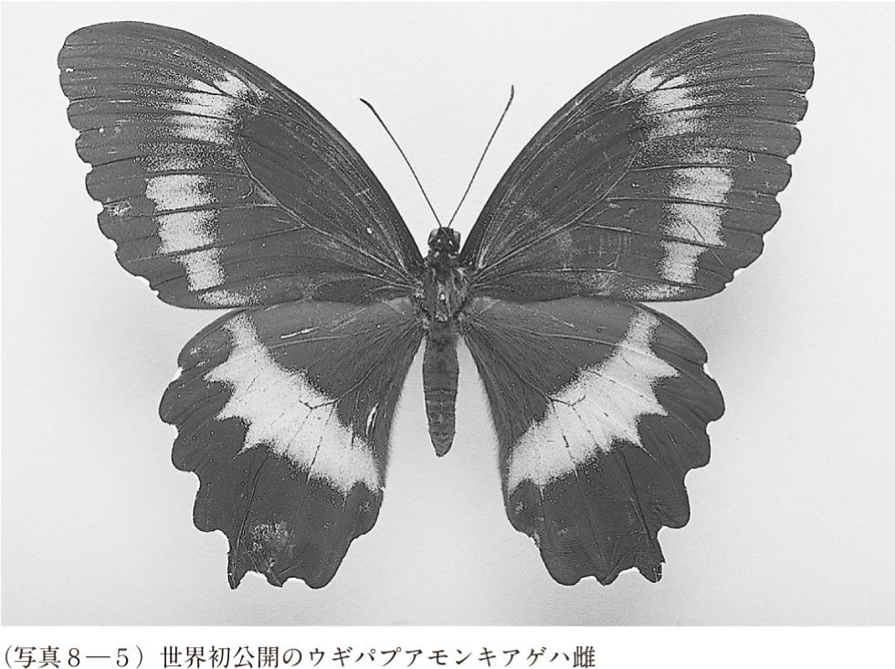
⑤Chilasa moerneri モエネリーマネシアゲハ
パプアニューギニアのニューアイルランド島、ニューブリテン島にいる。一九一九年に記載されてから、四、五頭の標本しか得られていない。私はこの蝶を狙ってはるばる行ってみたが、見事に完敗した。おそらく日本に標本は無い。
⑥Chilasa carolinensis カロリンエンシスマネシアゲハ
フィリピンのミンダナオ島の特産種。平地、低山の熱帯雨林に生息しているらしい。ミンダナオ島ではこの様な環境が残っていないためか、一九六七年に記載されて以来、殆ど採れていない。何年かに一度、標本商に入荷する事がある。うまいタイミングで買う事が出来て、コレクションしているアゲハ屋さんが何人かいる。「どうして僕は買うチャンスが無かったのだろう」。森島さんが、面白くないのはこういう時である。
⑦Byasa rhadinus ラディヌスオオベニモンアゲハ
雲南省の標高千五百メートル程の「太平子」という場所から十九世紀末に記載された。現在はシナジャコウアゲハの一亜種とされる事も多い。日本人では大野義昭氏が四川省の奥地で採集していると言う。
⑧Protographium leosthenes ムカシオナガタイマイ
オーストラリア北部のケープ・ヨーク半島の熱帯雨林に分布する。森島さんが二十年前に外国の蝶に目覚めた頃は、標本商のカタログに載っていたり、展示・即売会でも見た様な気がする。けれどその後、どんなに捜しても、売っているのを見た事がない。誰かが採集した、という話も聞かないのである。
残っているのは、さすがにどれも難しい種類ばかりだ。しかしこの二十年間を振り返ると、どうであろう。
集め始めた頃は「絶対に手に入らない」と思っていた蝶が、次々と自分の標本箱に収まっていった。ベトナムや中国のオウゴンテングアゲハ（口絵―３）、ラオスのフィディアスオナガタイマイ（写真８―６）、フィリピンのオスマナマネシアゲハ、まだ他にも幾つもある。図鑑を開いて「大英博物館所蔵」「パリ自然史博物館所蔵」などと書かれている、十九世紀や二十世紀初め頃に採集された標本を見ては、タメ息をついていた。古くて展翅も下手くそな標本だったが、輝いて見えた。こんな蝶を自分も所有出来たら、どんなに幸せだろう。
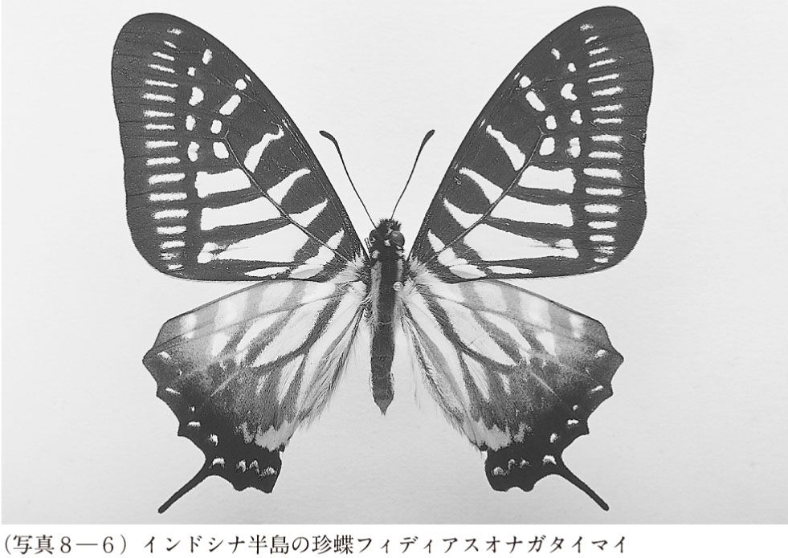
それが、完全にではないが現実になった。日本の標本商や現地で採集する人の活躍で、この四半世紀の間に、かつて「大珍品」と呼ばれた蝶が次々に入って来た。そしてこういう積み重ねの結果、三万点のコレクションになった。ただやみくもに「標本の数」だけを集めたのではない。
とはいえ、これはあくまで「インド・オーストラリア区」に限っての話だ。南北アメリカやアフリカのアゲハまで見渡すと、まだまだ持っていない種類が多くて気が遠くなりそうだ。コレクションの醍醐味はまだまだ尽きないのである。
森島さんのお話が面白かったので長々と書いてしまった。
「俺の方がもっと沢山、標本を持っているぞ」と対抗心がメラメラと燃えあがってくる方もいるだろう。よく森島さんや他のお客さんとコレクションや生態系の話をする。昼食も夜食も忘れてずーっと虫談義をする。気がついたら夜中の二時を回っている、というのは良くある話だ。蝶の珍品談義は一番面白い。こういう時は標本商とお客さん、ではなく完全に虫屋同士の間柄になっている。それと標本商としての関係はまた別である。申し訳ないが、私がどんなに珍しいアゲハチョウを手に入れても、必ず森島さんのコレクションに収まる、とは限らない。早い者勝ちである。森島さんにしても、変なしがらみが出来たら、余計なプレッシャーがかかるだろう。
収集家は、蝶に気持ちが向いた時、気分がノッた時に集めるから楽しいのだ。いつも蝶の事ばかり考えていては飽きてしまう。他の趣味に移り、また戻って来る事もある。それにどんな人にだって、人生で自由になるお金が沢山ある時も、少ない時もあるだろう。お金が無い時は、休眠していれば良いのだ。余裕が出来たら、その時に情熱が戻って来たなら、また集め始める。無理をしたら、全然楽しくないのである。
どんな趣味のジャンルでもそうだと思うが、昆虫の趣味も実に幅が広くて、多種多様な楽しみ方がある。これまでに幾つも触れてきたが、ここでまとめてみよう。
まず初めは、①採集、であろう。採りたい蝶の採集プランを練ったり、採集地案内や採集マップを読む。昆虫雑誌や昆虫同好会誌に載っている、他の人が書いた採集旅行記も参考になる。採集道具を買い揃えて、採った蝶を調べるために図鑑を買う。日帰りの採集の旅も、泊まりがけの採集旅行もまた楽しい。日本国内の各地方にしか産しない蝶も多いから、遠くまで採集に行った時は、その土地土地のうまい物を食べて、銘酒をのむ。採集の後は温泉も欠かせない。一人で行くのも、彼女や家族に付き合ってもらうのも良い。或いは虫屋仲間と出かけて採集を競ったり、その後宴会をして盛り上がる。
採集したかった蝶が、行っても採れなかった、という事も良くある。何故駄目だったのかを考えてみる。その年によって気象条件が違う。早く春が来る年も、遅い年もある。蝶が発生する時期はある程度決まっているが、年によって二、三週間のずれがある。発生する時期にうまく当たらなかったのかも知れない。雨が降れば成虫は飛ばない。
予め天気予報を良く聞いておく。蝶がいるはずの採集地にいっても、その蝶の好む環境や好んで吸蜜に来る花、食草などを知らないと、採集成果は全く上がらない。蝶は広い自然の中でも、ごく狭い限られた場所にしかいない。そういう環境を把握する能力を、経験を積んで身に付けて行く。
次は②飼育。採集して来た卵や幼虫を、あるいは雌蝶に卵を産ませて、成虫にまでそだてる。飼育にも初心者からエキスパートまで、様々なノウハウがあるのは書いた通りだ。飼育は準備するのが大変だけど、軌道にのれば多数の標本を得る事が出来る。飼育好きの人の冷蔵庫は、三角紙に包まれて、冷凍保存された蝶で一杯である。
その次は③標本製作。採集した蝶は胸部を強く押して、飼育した親蝶は冷凍庫に入れて殺す。昆虫針を刺して、展翅をする。二週間から一ヶ月位で展翅板の蝶は乾燥するので、はずした標本を、標本箱に並べる。一応これらの後に④コレクション、という段階になる。
この他にも、⑤蝶の写真を撮影したり、どうしても蝶を殺したり、採集するのに抵抗がある人は、⑥蝶の生態を観察する、という形をとる。⑦蝶の本を集める、という楽しみ方もある。
図鑑や生態写真集、飼育ガイドや採集旅行記、随筆集など、様々な蝶の本がある。発行部数の少ない珍本や、個人が自費出版した本もあり、集めるのは大変だ。過去に遡り、明治、大正、戦前の昭和初期に出た蝶の本を集めるのはさらに難しい。戦後になって出版されたものも、蝶の本は一般に少ない部数なので、絶版になっている事も多い。蝶や昆虫の雑誌やそのバックナンバー、各地の同好会の会誌、などへ手を広げていくと収まりがつかなくなる。
外国の蝶の図鑑や文献もある。昔のヨーロッパの銅版、石版の手彩色の蝶の図譜・図鑑なども手に入れる機会が無いではない。しかし何十万、何百万円の出費を覚悟しなければならない。標本商の出したカタログの収集に血道を上げている、という人もいる。
⑧蝶に関する物なら何でも集める、というのはどうだろうか。しかし蝶の柄のネクタイやカフスやタイピン、着物やシャツ、ブローチ、オブジェ、お菓子のおまけ、など蝶をモチーフとした物は数限りなく有り、収拾がつかなくなる。これは適当に好みでやれば良いだろう。
これまで蝶や昆虫の愛好者を色んな名称で呼んできたが、①から⑧まで、どれか一つでもやっていれば立派な「虫屋」であり、④に重きをおいた時、「収集家」「コレクター」になる。①の場合は「採集家」と自称したり、呼ばれたりする。
それでは④の「コレクション」だが、どうやって集めるのか。
森島さんの例を挙げたけれど、別に決まりや方法が有る訳ではない。「こうやらなければ」という考えに囚われない方がいい。大切なのは「マイペースでやる」「収集を楽しむ」という事だと思うのだが。
具体的に言えば、蝶や蛾など鱗翅目、カブトムシ、クワガタムシ、ハナムグリ、タマムシなど鞘翅（甲虫）目、セミ、カメムシなど半翅目、バッタ、カマキリなど直翅目の昆虫などが集め易いと思う。昆虫の採集用具や標本製作器具、標本箱、図鑑などを売っているお店があるので、本格的にやってみようと思う人はそこで各種の用具を揃える。
各都道府県にはそれぞれ、蝶や昆虫の同好会がある。興味がある人は会費を払って、会誌を送ってもらう。集まりや採集会へ顔を出して、気が合いそうな人に教えてもらう。日本鱗翅学会、蝶類学会、日本昆虫学会、というアカデミックな団体もある。これも会費を払って、会誌を送ってもらう。別に専門の昆虫学者だけが会員になれるのではなく、活動の主力はアマチュアの虫屋、収集家なので、虫が好きな人なら誰でも会員になれる。昆虫の専門雑誌も幾つかある。定期購読料を払い、送ってもらう。こうして知識と人脈が出来てくると、面白くなって来る。
昆虫を集めて少し経つと、どうしても収集の対象を絞り込まざるを得なくなる。種類があまりにも多いからだ。そしてコツコツと積み重ねてゆけば、大コレクションの形成は、個人でも立派なものが出来るのだ。
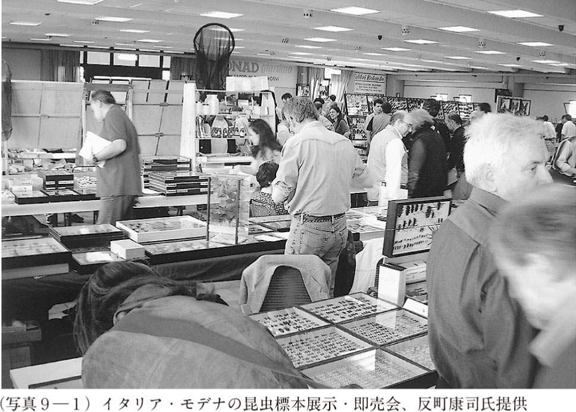
パリでは年に数回、昆虫標本のオークションが開かれる。送ってくるカタログを見ると表紙には「どうだ！」と言わんばかりの珍しい蝶の写真が出ている。そういえば、私がメキシコまで採りに行ったアグリアス・アエドン・ロドリゲッツィーも、何年か前の表紙を飾っていた。そこは専門のオークション会社が仕切っていて、昆虫の会場の隣りのホールでは「古代オリエントの家具」や「ワイン」のオークションをやっていたりする。
私がヨーロッパの標本即売会に行って、いつも思うのは、標本収集の趣味がごく自然に人々の間に根付いている、ということだ。昆虫を採集したり、標本を作ったり、コレクションする楽しみ方を良く知っている人が実に多い。「虫屋」の人口が多くて、各国や大都市には同好会や学会が必ずある。昆虫採集や標本製作の道具や、標本を売っている店も多い。世界中でこんなに虫の趣味が盛んなのは、ヨーロッパの国々と日本くらいのものだ。
虫に関心がない人達にさえ、この趣味に対する、偏見のない理解と憧れがある。
「蝶が大好きで、標本を集めています」と言うと「へぇー、奥の深い趣味を持っていますね」と感心されたり、なんとなく一目置いた眼差しで見てくれたりする。こうした、昆虫の採集や標本を収集する趣味は、どのようにして、いつ頃始まったのだろうか。
十六世紀に大航海時代が始まって、ヨーロッパの船乗り達がアメリカ大陸や、熱帯アジア、アフリカに帆船でたどり着いた時、どんなに驚異に思っただろう。初めて見る熱帯地方の自然。物凄い数の美しく不思議な植物や動物や鳥達。海や大河や森林や原野の中に、何だかわけの解らない無数の生物がいる。自分達の故郷の、単調で貧弱なそれと、何て違うのだろう。黄金や香料で一山あてる事ばかり考えていた彼らの中にも、そんな思いを抱いた人がいたのだろう。
例えば、初めて地球を一周航海したマゼランの艦隊の乗組員だった、アントニオ・ピガフェッタという人がいる。彼の航海記には、マゼランの艦隊がボルネオ島の北端の入り江で船の修理をしている時に見つけた不思議なものを書いている。引用すると、
またある木は落ち葉が生きていて歩き出す。この木の葉はだいたい桑の葉に似ているが、そんなに長くはない。葉柄のところで二本の足が両側についている。葉柄は短くとがっている。血は無いが、しかしそれにさわると逃げてゆく。私もこの葉を一枚箱の中に九日間しまっておいた。そしてこの箱のふたをあけたとき、それは箱のまわりをぐるぐる歩きまわっていた。空気を食べて生きているとしか考えられない。
これは、東南アジアからニューギニアのジャングル一帯に分布する「コノハムシ」（Phyllium giganteum）だとすぐ解る（写真９―２、３）。
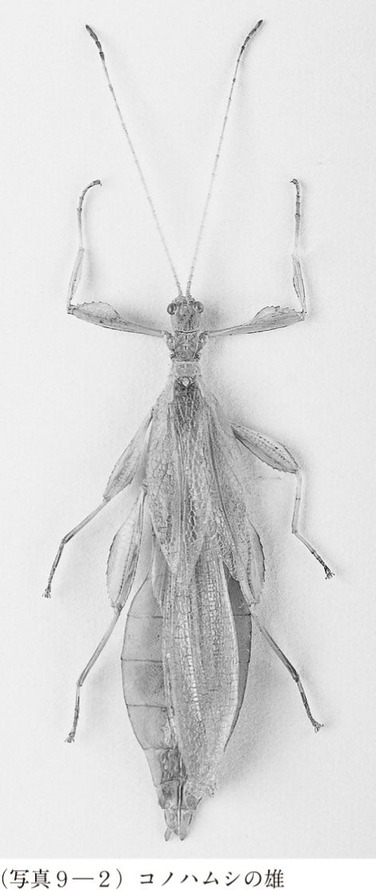
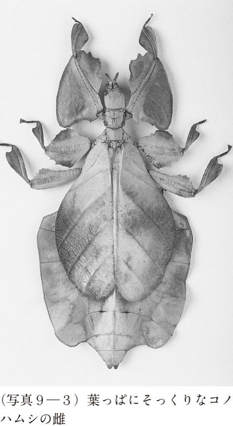
この虫はナナフシ目の一種だが、体が扁平で木の葉そっくりな形をしている。体の色も緑色や茶色、なかには他の虫に喰われた様な模様がある個体もある。自然の中の、若葉や落ち葉や虫喰いの葉など、色んな葉っぱにそれぞれ真似ている訳だ。これを「隠蔽擬態」という。つまり、木の葉そっくりになって、自分を食べようとする鳥やヘビやトカゲなどから、隠れて身を守っているのだ。
現代の私達は、「生きている葉」がコノハムシだと知っている。この虫が食べる、自分にそっくりな木の葉を、九日間くらい与えないでも別に死なない事も知っている。けれど、どうしてコノハムシがこんな形になったのか、進化して来たのか、という本質的な問題は何も解っていない。
新大陸や喜望峰まわりの新航路が発見されて、何十年か経つと、各国はそれぞれのなわばりで植民地を作るようになる。占領された場所の人々がこれまで築いてきた文化や習慣を根こそぎ破壊して、かれらの財産や土地の産物を、国家と民間を挙げて強制的に収奪するしくみだ。あるいは先住民そのものを消滅させたり奴隷化したりする。
一六〇〇年にイギリスで、一六〇二年にオランダで、同じ頃にフランスでも「東インド会社」が設立された。相前後してそれぞれ「西インド会社」も設立された。植民地での自国のなわばりの拡大と貿易の独占のために、効率的な組織を工夫したのだ。「貿易会社」といっても、自前の軍隊や貨幣を持つ事を本国で認められている。東洋やアフリカ、新大陸の人々を暴力で屈服させて、強制的に会社に都合の良い貿易協定を結ばせて甘い汁をすう。これら各国の貿易会社の目的のひとつに「動物や植物の標本を集めて本国に送る」というものがあった。
標本を送られて来た人達は、驚きの連続だったろう。帆船が本国の港に帰り着く。船倉から、木箱や樽に詰められた標本が商館や貴族の館に運ばれて来る。一緒に来た目録と照らし合わせて箱が開かれる。丁寧に布やコルクの皮に包まれ、防腐処置を施された標本が取り出される。生きたまま檻や籠に入れられ、運ばれてきた鳥や動物もいただろう。植物はその種子が、或いは今でいう「鉢植え」の状態で船に積まれて来た。見た事もない奇怪な動物や海産物や植物の標本に、本国の人達は驚嘆の声を上げた事だろう。
十六、十七世紀の帆船は、大西洋やインド洋、太平洋を渡って何年もかけて航海した。積まれた標本は熱帯の気候で腐ったり、波をかぶったり、標本を食べる虫に喰われたりして駄目になった。標本を積んだ船が沈んでしまう事も多かった。何度も何度も失敗を繰り返して、幸運に恵まれた一部のものだけが、本国にたどり着いた。想像を絶する苦労と執念で、未知の動植物の標本が集められたのだ。その中で、蝶や昆虫の標本は、小型で、自然乾燥させるだけで保存が出来る。比較的、運び易かったのである。
こうして、イギリス、オランダ、フランスを初めとする西欧の各国には、十六世紀以降、植民地から沢山の珍奇な生物がもたらされ始めた。東インド会社を通じてだけでなく、植民地の奥地に布教に行った宣教師などからも生物の標本が送り届けられて来た。当時は「大学」はあったけれど、職業としてのプロの「生物学者」はまだ存在しない。珍奇な生物を収集・研究したのは、高値を呼んだ標本を買い集める財力を持った、裕福な貴族達や中世からの錬金術師や薬種商の流れを汲む人達だった。本格的な博物学の始まりである。
珍奇な生物の標本がコレクションされてくると、陳列・展示をして見せびらかしたくなる。「どうだ。俺はこんなに珍しいものを沢山持っているのだぞ」と誇示したくなる。すると他の人が「俺の収集品の方が、もっと珍しいものがあるぞ」と対抗心を燃やす。規模も時代も違うけれど、メンタリティーは現代の蝶のコレクターとまるで同じだ。
十七世紀の中頃にはすでにロンドンで、昆虫を初めとする博物学標本のオークションが開かれていたらしい。富裕な貴族達のプライベート陳列館、展示館がこの頃、ヨーロッパ各地に競いあう様にして出来た。博物館の始まりである。
十七世紀の末頃になると、本国には大量の生物標本が蓄積されてきた。標本が溢れ、次から次へと珍しい生物が送られてくる。博物館でも珍奇な生物の標本をただ集めて、陳列しておくだけではどうにも具合が悪くなって来た。「集まった標本をどう分類して、体系づけたらよいのか」「送られて来た標本は、自然の中ではどんなふうに生きているのか」「なぜ、生物はこんな形態になったのか」など、標本を観察しながら、色んな事を考える人達が現れてきた。
膨大な数の地球上の全ての生物種を、何らかの基準ですんなりと分類しようとして、多くの学者が様々な試みをした。その中で、現在も使われている分類の基本的な方法やしくみを考え出したのが、第１章でも触れた、スウェーデンの植物学者カルル・フォン・リンネである。蝶も含まれる動物の学名は、一七五八年に出版されたリンネの「自然の体系 第十版」に記されているものが、始まりとされている。
リンネは五百三十五種の鱗翅目を記載したが、そのうち百九十二種が蝶で、残りが蛾だ。幾つかの種類は日本にもいる。春から夏にかけて、郊外の緑多い場所に飛んでいるアゲハチョウもそのひとつだ。学名はPapilio xuthus Linnaeusという。最後のLinnaeus（リンネウス）は命名者の名前、リンネのラテン語読みである。少し前に「スワロウテイル」という映画があった。これはパピリオPapilio属の蝶の事だ。この属の蝶は、後翅が細長く流れる様に伸びている。燕の尾になぞらえて、英語圏ではこう呼ぶのである。
時代も下って十八世紀になると、科学的な調査を主な目的とする探険航海が行なわれる様になってきた。征服と略奪や強制的な貿易の航海から、少し進歩したのだ。標本を採集して調べる博物学者や生物の絵を描く画家などを乗組員に加えて、総合的な科学調査が行なわれ始めた。
当時、世界中で植民地獲得と貿易の覇を競っていたイギリス、フランス両国が張り合うようにして、探険調査の船を送り出した。ジェームズ・クック（英）や、ラ・ペルーズ（仏）の航海に始まるこのスタイルは、十九世紀前半のビーグル号とダーウィンの航海に受け継がれていく。国家の事業として船を仕立て、生物学者を乗り込ませて世界を回って総合調査をする、という方法である。
一八二二年から二五年にかけて南太平洋地域を中心に探険調査をしたコキーユ号（仏）の航海では、博物学者のデュモン・デュルヴィルDumont d'Urvilleが、多数の蝶を採集した。南太平洋のビスマーク海に浮かぶニューアイルランド島の海岸で採集された蒼色のトリバネアゲハは、Ornithoptera urvillianusという（口絵―６、左上）。帰国後、美しい彩色図版とともに出版された報告書の中で、この人に献名されたのである。
国家主導の探険調査航海では、船が本国に戻った後、何年もかけて、持ち帰られた膨大な数の生物標本が各分野ごとに研究、記載された。報告書がカラー図版と一緒に順次刊行されていった。といっても、写真・デジカメ技術がない当時の事だ。描かれた生物の絵から専門の職人（銅版画師）が彫った銅版画で、画の線だけが印刷される。蝶の翅の鮮やかな色は、絵師によって一枚一枚彩色されていた。
この様な技術で制作される、美しい手彩色の蝶や昆虫の図譜は、すでに一七〇五年に大傑作が出版されている。
フランクフルトの銅版画師の娘、マリア・シビラ・メーリアンという人は、五十二歳になって南米オランダ領スリナムへ蝶や蛾の生態観察の旅をした。彼女は幼い頃から蝶の変態（卵→幼虫→蛹→成虫へ変化する過程）に異常な興味を持っていた。「幼虫の不思議な変態とその風変わりな花食草」という本の第一部を一六七九年に、第二部を一六八三年に出して博物学者達の評価を得ていた。亭主の性格に問題があって離婚して、逃れて滞在したお城で、スリナム産の蝶が並んでいる標本箱を見せてもらって衝撃を受けた。
オランダ西インド会社の協力で、スリナム行きの夢をかなえ、二年余りの滞在の後、オランダに戻って一七〇五年に「スリナム産昆虫の変態」を完成させたのだった。大胆な構図の一枚一枚の絵に、幼虫、蛹、成虫のステージと食草が描かれている。美しい彩色の、緻密な絵。蝶の翅脈や鱗粉の複雑な斑紋、体毛や触角の形状も正確に表現されている。みずみずしい幼虫の採食の姿、それを狙っているタランチュラやボアなど捕食者まで描かれている図版もある。驚異的な観察力と表現力を持った、女性の虫屋が存在したのだ。
しかしメーリアンの図譜はまだ「昆虫図鑑」と呼べない。植民地の珍しい産物を沢山集めて標本を作り、博物館を作って陳列してみた。さらにこれらを記録し、印刷物にして広く流布して知らしめる。そんな衝動に駆られて作られた図譜である。正確で美しい図版、極めて高い芸術性を持ってはいるが、まだ「カタログ」の域を出ていない。
本来の意味での「昆虫図鑑」が出来上がるのは、リンネの「二名法」が確立され、近代的な意味での分類の体系がかたち作られてからである。つまり「学名」が出来たので、現在の私達が言う意味での「昆虫図鑑」も成立したのだ。昆虫図鑑は、ただ単に各種の昆虫の絵、図、写真などを並べている本ではない。そこには著者の「種」や「分類」に対する考え方が示されている。どんな面に重点を置いてそれぞれの種を分類・解説し、図示して表現するのか。言わば著者の昆虫に対する「哲学」が貫かれているのである。
このような意味での蝶の図鑑は、十八世紀後半、オランダのペーター・クラマー Peter Cramerという人が作った「世界三大州（アジア、アフリカ、アメリカ）外国産蝶類図譜」Papillons exotique des trois parties du monde l'Asie, l'Afrique, et l'Ameriqueに始まる（写真９―４）。この図鑑は一七七五年から九〇年にかけてオランダで出版された、銅版画手彩色の図鑑である（口絵―８）。当時のアムステルダムは銅版画の技術が極めて高かったのだ。補遺を併せて全部で五巻、四百四十二枚の手彩色による着色図版が付いている。クラマーは四巻まで作った時に死んだ。後を継いだストールStollという人が五巻目を作り、完成させたのである。「世界三大州外国産蝶類図譜」はその頃アジア、アフリカ、南北アメリカのものとして知られていた蝶と蛾を網羅した大図鑑である。きちんと学名が入った大きな豪華本で、ラテン語とオランダ語とフランス語が併用して書かれている。
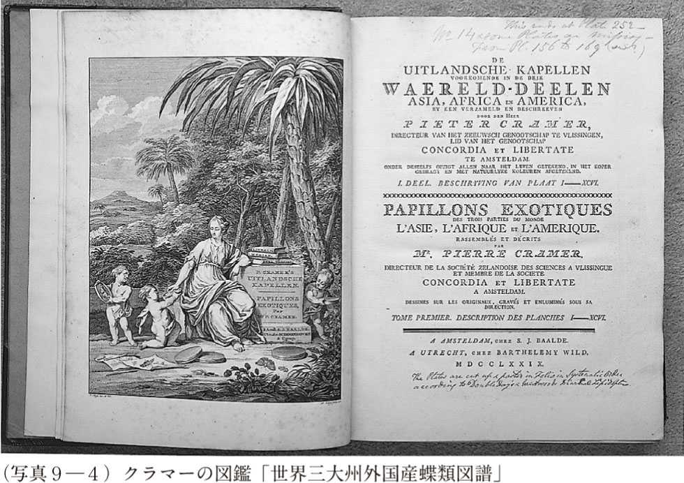
クラマーの後は、デンマーク人のヨハン・ファブリシウスJohann C. Fabriciusが何冊かの本を出版した（写真９―５）。「昆虫学の体系」Systema Entomologiae(1775)、「昆虫の属」Genera Insectorum(1777)、「昆虫の種」Species Insectorum(1781)、「昆虫学体系」Entomologia Systematica(1792--99)などである。ファブリシウスはリンネの高弟の一人で、昆虫の分類を初めて本格的に行なった。多数の昆虫を命名記載した人である。
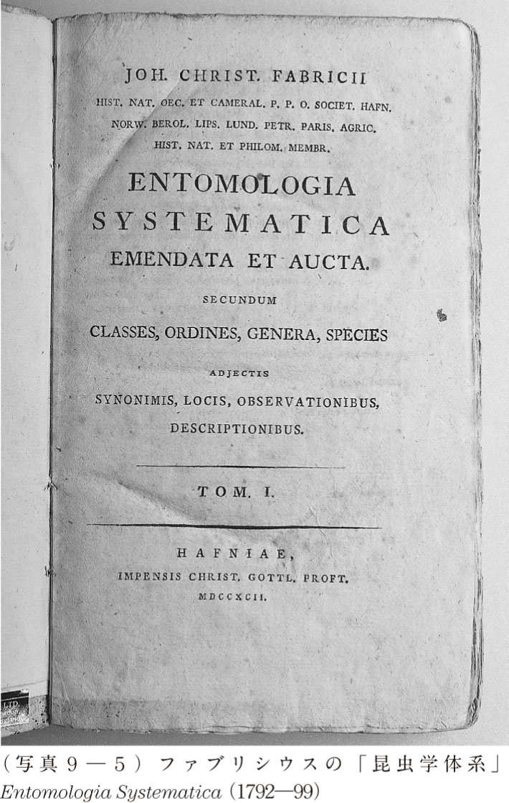
現在の私達がやっている様な形での、蝶や昆虫の採集、標本収集の趣味もこの頃に始まった。ただ漠然と美しい蝶を集めて標本箱に並べているだけでなく、各国に共通の「学名」が成立した事で、「属」や「科」などの類縁関係によってコレクションしたり、分類したり、新種、新亜種を記載する楽しみが出来た。自分の持っている蝶が分類的にどんな位置づけにあるのか、誰もが知る様になったのである。
十八世紀後半にイギリスで産業革命がおこり、続いて十九世紀になってフランスやドイツでも始まった。西欧の先進的な国々では、政治権力が国王や貴族から、次第に富裕な商人や市民階級に移行していった。この時代は、ヨーロッパの列強諸国が徹底的に世界中を分割して、植民地支配をした帝国主義の最盛期である。大衆化社会の始まりでもあった。
この頃までは、世界各地で得られた博物学標本を競って集めて研究をしたのは、主に裕福な貴族や商人、地主階級に属す人達だった。ヒマもお金も十分にある人達だ。
十九世紀中頃のイギリスには、各種の学会があって博物学者達の研究成果や意見の交換の場になっていた。国家が船を仕立てて計画する、博物学の探険航海も頻繁に行なわれた。
一八三一年十二月、イギリス政府は「ビーグル号」を出航させた。測量や博物学標本の収集を目的とした、世界周航の航海である。乗組員の一人に二十二歳のチャールズ・ダーウィンがいた。ダーウィンは少年の頃から熱心に甲虫を集めていた。「ビーグル号」は南米沿岸やマゼラン海峡、ガラパゴス諸島などをめぐり、五年間の航海を終えて帰って来た。
ダーウィンはこれらのフィールドでつぶさに生物をとりまく環境を観察し、生物、鉱物、化石の標本を収集した。ガラパゴスでは二十九種の甲虫を採集した。二十数年後、「種の起源」を書く土台となるアイデアを得たのである。
十九世紀中頃、ヴィクトリア女王治世下のイギリスは、国力も人材も絶頂期を迎えていた。上流階級に属さない、つまりヒマもお金も無い労働者階級の人々の間にも、博物学への情熱、標本を収集する熱意が広まっていた。
アルフレッド・ラッセル・ウォーレスもそんな中の一人だった。
家が貧しくてまともな教育も受けられなかったが、蝶や甲虫の採集・収集が大好きな博物学少年だった。二十歳代になり、同じ労働者階級のヘンリー・ウォルター・ベイツと共にアマゾン川の探険旅行に旅立った。動物や鳥、昆虫、植物などの標本を採集して本国に送り、それをロンドンの標本商に売ってもらう。買うのはヨーロッパ各国の収集家や博物館などだ。そのお金で旅行の費用と滞在生活費をまかなった。四年間のアマゾン旅行でマラリアに罹って帰国した。その途中、集めた標本を積み込んだ船が大西洋の真ん中で火災を起こし、全てを失ってしまう。
一方ベイツは一人でアマゾン探険を続け、膨大な蝶の採集標本とフィールドでの観察から、後に「ベイツ型擬態」と呼ばれる現象を発見した（写真３―４参照）。
ロンドンに戻ったウォーレスは一年後、今度は「マレー諸島」（今のマレーシア、インドネシア）への博物学探険に出発した。旅行のスタイルは前回と同じで、採集人としてスマトラ、マレー半島からニューギニアまでの島々を、八年間かけて採り歩いたのである。ウォーレスは島々を渡り歩き、生物種は「変化する」という確信を抱いた。「自然選択」「自然淘汰」という考えに至り、それを手紙にして当時の博物学者の重鎮、ダーウィンに送ったのである。
三ヶ月かけて地球を半周して届いた、ウォーレスからの手紙と論文を読んでダーウィンは驚いた。この標本採集業者が書いている事は、自分が二十年以上温めてきたアイデアとほとんど同じではないか。その年、一八五八年七月一日のリンネ学会で、ダーウィンとウォーレスの論文が一緒に発表された。ダーウィンは研究を急ぎまとめ、翌一八五九年、「種の起源」が出版された。「進化論」が世の中に出たのである。
ウォーレスのもう一つの業績に、「生物地理学」がある。ウォーレスは地球の上の陸地を、生物種の分布から、旧北区、オーストラリア区、など大まかに六つの「区系」に分けた。これについては第７章でふれた。
ウォーレスやベイツは標本採集業者の先駆的存在だった。十九世紀後半から二十世紀初めにかけて、大衆化社会の発達に伴い、ヨーロッパ各国で空前の博物学、標本収集趣味の大ブームが巻き起こった。定期的な蒸気船航路や鉄道網の発達で、一般の人でも、お金が有れば世界旅行が出来る時代になった。世界の殆どの部分はヨーロッパ列強の植民地か、その影響下にある。資金とヤル気さえあれば、博物学が好きな普通の青年が、ヨーロッパを離れて採集旅行へ行けるようになったのだ。
根性と勇気がある者は、ヒマラヤやチベットの高山や渓谷、ニューギニアやアフリカの奥地に分け入って、収集家の欲しがる蝶を探し求めた。本国では高値を呼ぶ珍しい蝶だ。博物学的な研究心もある。と同時に珍蝶・珍品を採って一発あてて、大金を稼ぎたい。収集家達に認められたい。野望と情熱と名誉欲と金銭欲が渾然一体となってうずまき、未知の地域への採集へ向かわせた。ロマンあふれる探険採集家達がいたのである。そして依然、ヨーロッパ諸国は階級社会である。彼等を資金的に援助して、採って来た蝶を買い支えて採集旅行を続けさせた、大富豪の超大型コレクター達がいたのだった。
第４章で触れた、イギリスのウィリアム・ヒューイットソンは、十九世紀中頃に、蝶の大コレクションを作りあげた収集家である。四十歳を過ぎて、巨額の財産を相続してから自宅に引きこもり、蝶の研究と収集に熱中した。自分で美しい蝶の絵を描き、「外国産新種蝶類図譜」Illustrations of Diurnal Lepidopteraを一八六四年から七八年、約十五年間をかけて書き上げた。全二巻本で百十六枚の彩色図版がある大著である。日本の国蝶、オオムラサキもここで彩色図版によって紹介されている。オオムラサキは現在の鎌倉と横浜の間のどこかで採れたものだ。ヒューイットソンが中国に派遣したフォーチュンという採集家が帰りに日本に立ち寄って採集したのである。ヒューイットソンはウォーレスやベイツが採集した蝶の殆どを買い取り、多くの新種を記載した。当時英領だった、インド洋に浮かぶ孤島群、アンダマン諸島の蝶のリストを作ったのも彼である。コレクションは死後、何人かの手を経て、現在は大英博物館の収蔵品となっている。
ヒューイットソンの大著の続巻を書いたのが、グロス・スミスとカービーである。一八八七年から一九〇二年にかけて、「外国産蝶類図譜」Rhopalocera Exoticaの全三巻が刊行されている。
当時の英国最大の蝶の収集家ヒューイットソンに強烈なライバル意識を燃やしたのが、ドイツのオットー・シュタウディンガー博士だ。世界各地に採集人を派遣して膨大な数を集めた。そんな博士も、ヒューイットソンが手に入れた日本のオオムラサキをコレクション出来ずに嘆いた、という話が伝わっている。後述するが「シボリアゲハ」というインドの美麗種を記載した、イギリスのアトキンソンという収集家のコレクションをヒューイットソンと一緒に買い取った。コレクションの「目玉」であるシボリアゲハが３雄あったが、ヒューイットソンが三つとも自分のものにして、「私には一つも分けてくれなかった」と恨み言を書いている。一方博士がヒューイットソンに対抗して心血注いだのが「外国産蝶類図譜」Exotische Schmetterlingeである。これも一八八四年から九二年にかけて刊行された、全二巻、彩色図版が百枚ある大図鑑であった。
シュタウディンガー博士は、自分のコレクションに収まりきらない蝶は一般の人に売りに出した。バング・ハースという相棒と組んで十九世紀後半から一九三〇年代にかけてブラーゼビッツ（ドレスデン）で「シュタウディンガー＆バング・ハース商会」という標本商を経営したのである。シュタウディンガー博士は一八三〇年生まれで一九〇〇年に死んだ。世界中に膨大な蝶や蛾や甲虫の標本を売ったのだが、標本商は博士の死後、一九四〇年代まで続いている。シュタウディンガー＆バング・ハース商会は二十世紀前半の大標本商で、後述するフランスのル・ムールと張り合ったのだ。
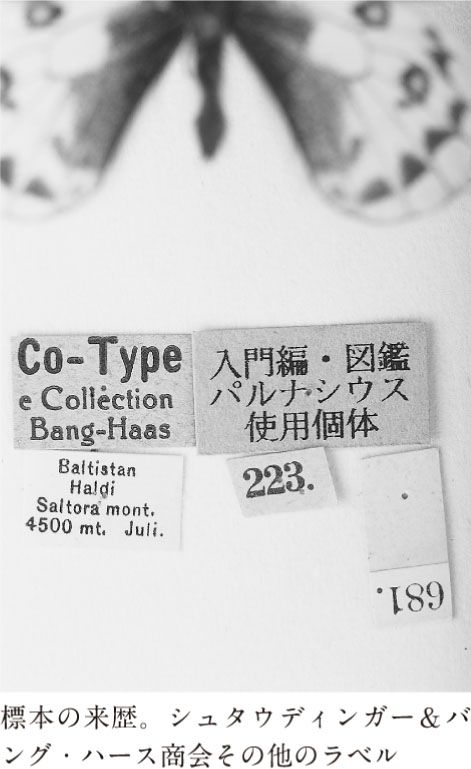
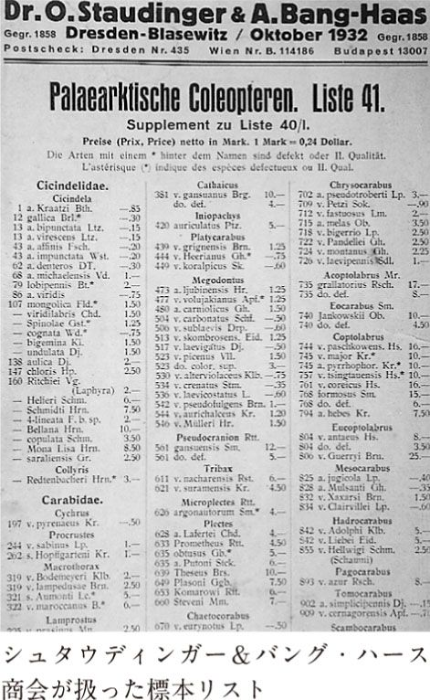
博士の相棒バング・ハースは親子で、父親の方のアンドレアス・バング・ハースがシュタウディンガー博士と組んで標本商をやっていた。一九二五年頃まで生きていたらしい。その後息子のオットー・バング・ハースが、二人の仕事を引き継いで一九四〇年代中頃まで標本商を経営していた。実質的には、バング・ハース親子が標本商をやっていたのである。彼らの本拠地だったドレスデンは第二次世界大戦後、東ドイツ領になったので、標本商を続けるのが難しくなったのだろう、廃業したのである。
シャルル・オーベルチュールというフランスの大収集家は一八四五年に生まれた。一八七六年から一九〇二年の間に「昆虫学研究」Études d' Entomologie第一巻から二十一巻を、一九〇四年から一九二五年の間に「比較鱗翅目学研究」Études de Lépidoptèrologie comparée第一巻から二十三巻、という巨著を、書き上げた。
家業は印刷屋で、自分が経営する印刷工場で、これらの図鑑を製作したのである。その七十八年間の生涯を世界中の昆虫、特に蝶の収集に費やしたお金持ちだった。一九二四年に没した時、集めた鱗翅目の標本の総点数は七十五万頭を越えていたという。その全てが、死後三年を経た一九二七年に大英博物館に買い取られたのである。
オーベルチュールに献名された昆虫は多く、「オーベルチュールオオツノハナムグリ」等、大型美麗で有名な種類ばかりである。（写真９―６）は日本で初めて紹介されるオーベルチュールの風貌である。
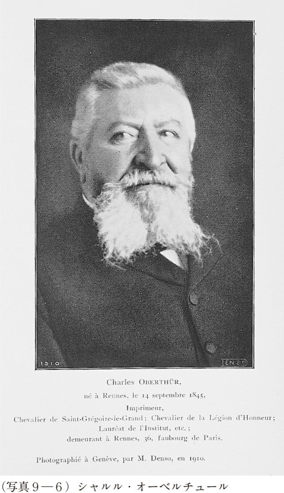
同じくフランスのガストン・フルニエ・ドゥ・オラックという女性は、裕福な宝石商の家に生まれ、一九一六年頃から一九五二年に亡くなるまで、パリで精力的に蝶の収集をした。アフリカのフタオチョウ属Charaxes（写真９―７）、南米のモルフォチョウ属Morphoなど、美しい蝶のグループに絞って集め、二千頭を越えるアグリアス属の標本、という空前のコレクションを築き上げた。フルニエ・コレクションはナチス・ドイツのパリ侵攻の時にも守りぬかれ、現在はパリ自然史博物館に収蔵されている。
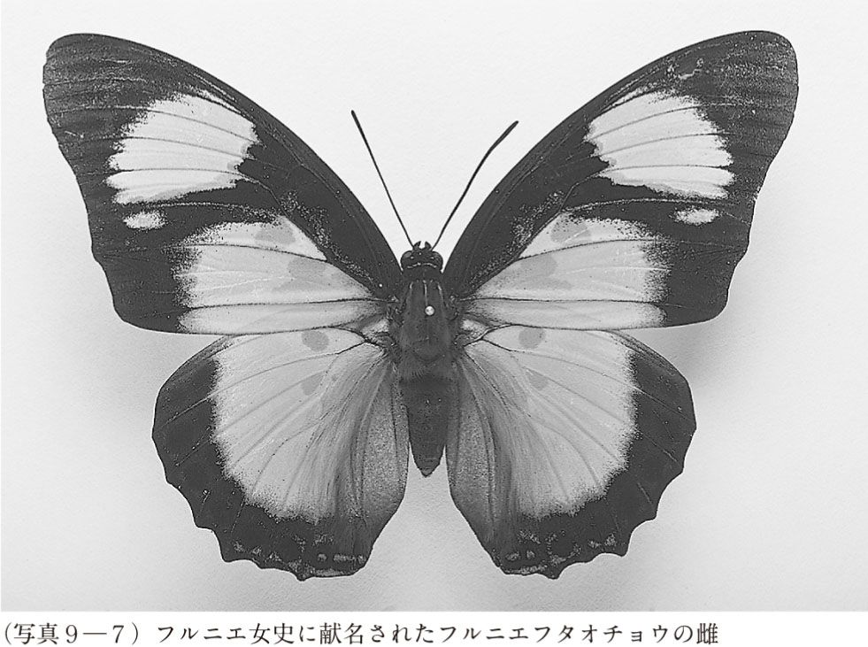
ライオネル・ウォルター・ロスチャイルドは、ユダヤの金融財閥、ロスチャイルド家の英国分家の四代目の当主で、ロスチャイルド銀行の頭取だった。弟のナサニエル・チャールズと一緒に巨万の富で、蝶を初めとする世界中の珍奇な動物を集めた。弟は「ノミ」の研究・収集家で、ノミの大コレクションを作った。
一八八九年、ロスチャイルド兄弟は、父ナサニエル・メイヤーからロンドン郊外の一族の領地に博物館を建ててもらった。「トリング動物学博物館」である。この時、兄弟はまだ二十五歳と十六歳だった。彼等を助けるために四年後、昆虫学者カール・ジョーダン博士が来た。一九三七年までに、鱗翅目約二万五千種、三十万頭、甲虫（鞘翅）目約六万種、三十五万頭の標本を集め、所蔵標本の研究を続けた。一九〇七年には、ニューギニアからアレキサンドラトリバネアゲハOrnithoptera alexandrae一九一四年にはソロモン諸島のブーゲンビル島からアロッティトリバネアゲハO. allotei（写真９―８）を、新種記載した。彼等に献名されたロスチャイルドトリバネアゲハO. rothschildiという種類もある（口絵―７）。
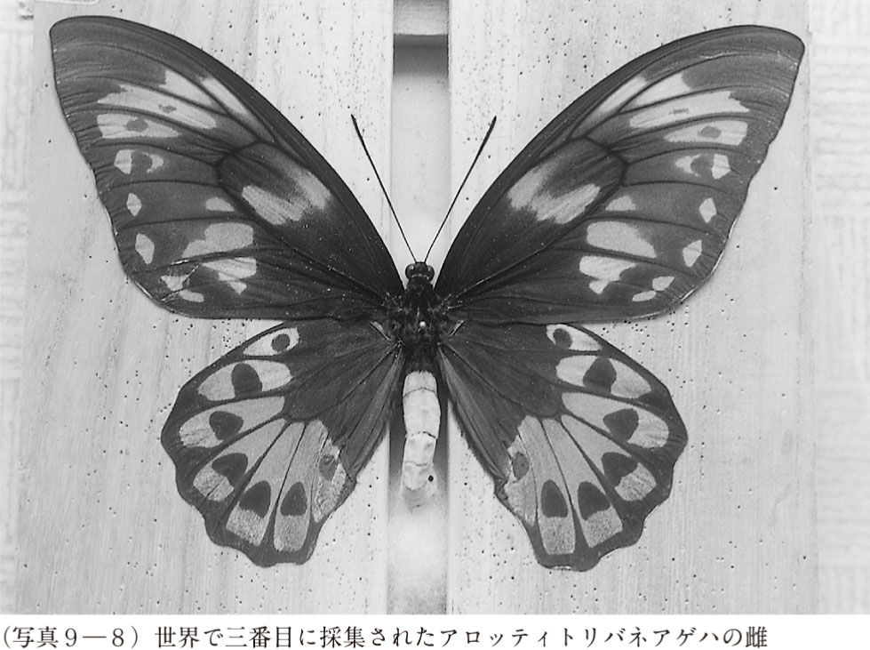
ナサニエル・チャールズは六百種類を越える、新種のノミを記載した。概ね、ノミは寄生主が違えば種類も違う。例えば、ヒトノミ、クマノミの様に。ノミを収集するには、寄生している哺乳動物や鳥を捕獲しなければならない。大変なのだ。兄弟の死後、遺言によってこの大コレクションは大英博物館に寄贈されたのである。
ロスチャイルド兄弟の資金的援助で、ニューギニア・ソロモン諸島方面を探険採集したのがオランダ人のＡ・Ｓ・ミークである。一八九四年、オーストラリア北部から始め、ニューギニア本島に向かった。ルイシェード諸島、アドミラルティ諸島、ダントルカストー諸島など、今日でも行くのが困難な、ニューギニア周辺の小島嶼群を調査した「採集の名人」だった。ミークが採ったトリバネアゲハの新種、新亜種は多数にのぼる。
一八九七年ルイシェード諸島でプリアムストリバネアゲハの亜種caelestisを、一九一三年にはアドミラルティ諸島で同亜種admiralitatisを発見した。一九〇一年、ソロモン諸島のサンタ・イサベラ島でビクトリアトリバネの亜種isabellaeを、一九〇四年にはレンドーバ島で同亜種rubianusを採った。一八九九年、ニューギニア島最東南端のサマライでメリディオナリストリバネの最初の雄も採った。一九〇六年にはニューギニア東部のマンバレ川上流の「ビアギ」という場所でアレクサンドラトリバネアゲハの雌を採集した。この時雄も目撃したが採れなかった。最初に見た雄はジャングルの梢をあまりにも高く飛ぶので、持参したショットガンで撃ち落としたのだ。翌一九〇七年再び同じ場所に挑戦して雄を採集したのである。
ミークの採集成果はトリングで待つ、ロスチャイルド兄弟を大満足させた。ニューギニア奥地でトリバネアゲハを採らせると、先住民は「矢」をつがえて蝶を射抜こうとするので苦労した。彼の名前で呼ばれる、ソロモン諸島のミークタイマイGraphium meeki（写真９―９）は今も世界中で数個の標本しか無い大珍品、収集家の憧れの的である。彼は「食人国の博物学者」という本を書き、ニューギニアやソロモン諸島の冒険談を語っている。
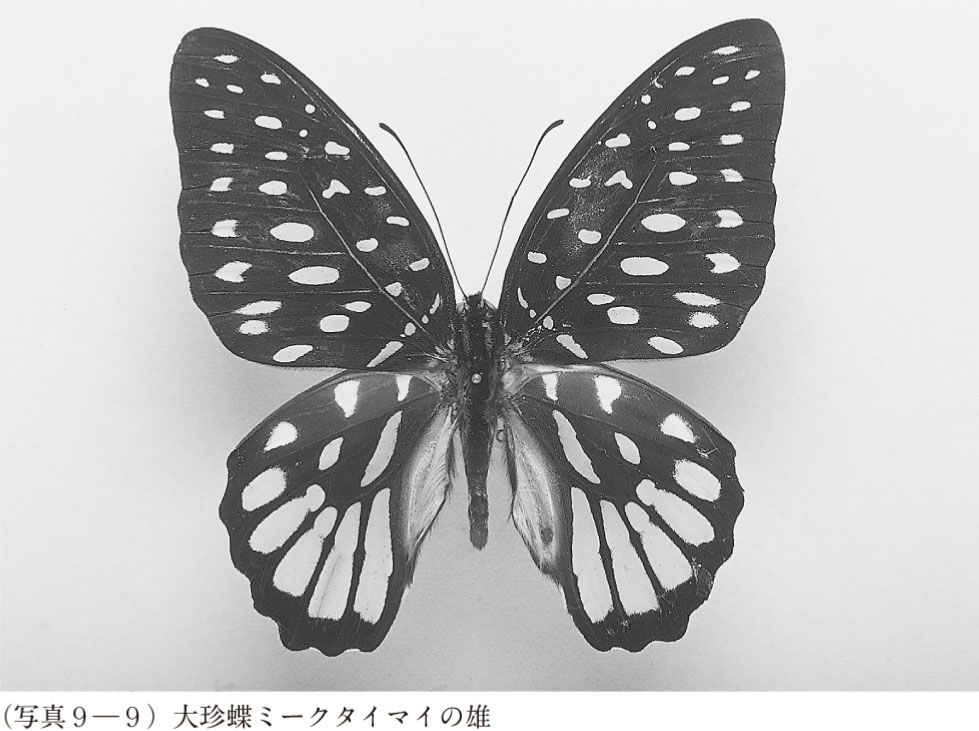
ミークが一九〇七年の探険で採集した、アレクサンドラトリバネアゲハの標本が何と日本にもある（口絵―９）。第一次世界大戦中に多大な税金を負担させられ、台所事情が苦しくなったロスチャイルド・オブ・トリング男爵は、収集した標本の一部を手放さざるを得なかった。その中に数ペアのアレクサンドラトリバネがあった。幾つかがボストンの収集家に買い取られ、戦後長くアメリカにあった。江田茂氏がそれを手に入れて持ち帰ったのである。
アメリカ人の採集家ウィリアム・ドヘルティは、「シボリアゲハ」Bhutanitis lidderdalii（写真９―10）というインドの蝶にまつわるエピソードで有名である。この蝶は一八六八年、ブータンと英領インド帝国の境界の、「ブクサ砦」の付近で採集された。七三年にイギリスのアトキンソンという人が記載発表をした。余りにも美しい蝶だったので、コレクターが熱望した。高額の値段をつけ、この方面のイギリスの拠点ダージリンから、何度も現地人を採集に派遣したのだ。今でこそ、この辺りは一面のお茶畑だが、当時は未開の大密林地帯である。何度も送られた採集隊は、ブータン人に身包み剥がれて略奪されたり、熱病で死んだり、虎に食い殺されたりして、ダージリンに逃げ帰ってきた。
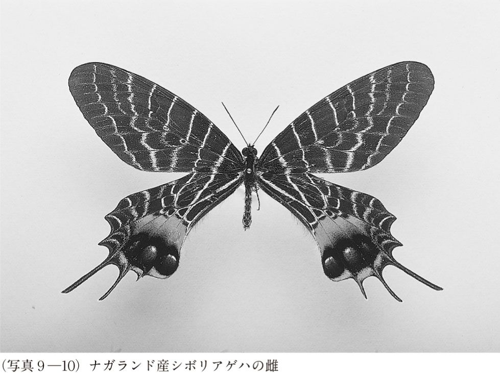
シボリアゲハを狙ってやって来たドヘルティは、そこから遥かに離れた、ミャンマーに近いマニプール州の奥深い峡谷で多産地を発見したのだ。ジャングルの中に、無数のシボリアゲハが舞うのを見て呆然とした。夢中になって追いかけているうちに、現地のナガ族が、鹿や豚や虎を捕まえるために掘った罠、深い落とし穴の中に、墜落してしまったのだ。竹槍で串刺しになった。大怪我をしたが、八時間かけて何とか這い上がった。穴の中に、腹を空かせた虎が落ちていなかったのは幸いだった。採集した沢山のシボリアゲハも無事だった。
その後、ドヘルティはアジア各地を採集・探険して歩いた。インドネシアの小スンダ列島でハリフロンキシタアゲハの亜種naiasを、スマトラ沖のエンガノ島でヘレナキシタの亜種nereisを発見した。タラウド諸島ではドヘルティーキシタアゲハTroides dohertyiを採集したのである。各地で採集した標本を売り、最後はアフリカまで流れ、ケニアで死んだ。
フランス、ブルターニュで生まれた、ユージェーヌ・ル・ムールという人は、最大級の標本商として名を残している。自分で蝶や甲虫を採集するのも得意だった。最初は公務員として仏領ギアナへ赴き、それから才能を発揮した。現地人を組織して、昆虫を採らせるのが天才的にうまかったのだ。植民地に流刑されている囚人達を使って、アグリアスやモルフォチョウ（写真９―11）などの、コレクター垂涎の的の珍品を次々に落としていった。一九〇八年にパリに店を開き、最盛期には七百万頭を越す在庫標本、コレクションを持っていた。
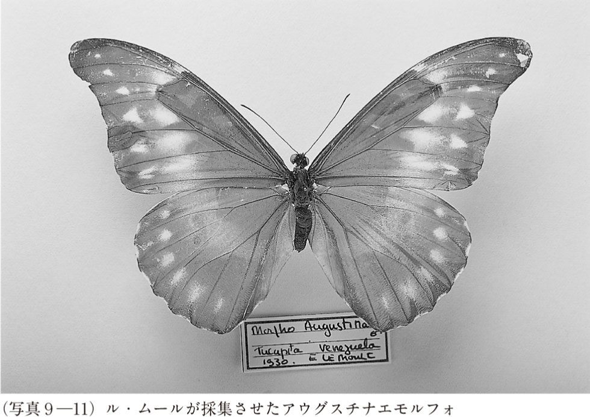
ロスチャイルド兄弟やガストン・フルニエ・ドゥ・オラックが、彼の持ってくる「一番の珍品」を奪い合った。言い値で買ってくれるので、ボロ儲けだった。
ル・ムールのコレクションの殆どは、ベルギー王立博物館に買い取られた。膨大な標本を抱えていたので、今もヨーロッパの展示即売会では、ル・ムールのラベルの付いた標本が時折り並んでいる。
十八世紀後半以来、ヨーロッパの各国、イギリス、フランス、ドイツ、イタリア、オランダ、デンマーク、オーストリアなどで、競う様にして蝶の図鑑が出版された（口絵―８）。初期の図鑑は、カラー図版は銅版印刷で刷られて、一枚一枚職人の手で彩色された。後に石版印刷になり、色付けも印刷で出来る技術が発達した。
こんな流れの中で「何とか世界中の蝶をまとめ、俯瞰してみよう」と計画したのが、ドイツのアダルベルト・ザイツ博士Adalbert Seitzである。それまでの昆虫図鑑は、個人の著作だった。各国の大収集家が何十年もかけて、一人で製作したのだ。ザイツ博士は、トリング博物館のジョーダン博士や、ドイツのハンス・フルーストルファー等、各国のエキスパートに得意の分野を担当してもらう事にした。「世界大型鱗翅類大図鑑」The Macrolepidoptera of the Worldのシリーズが、一九〇六年から刊行され始めた。英、仏、独の三ヶ国語で出版された。第一次世界大戦の間はさすがに止めていたが、戦後の一九三二年まで続いたのである。これは小蛾を除いた全世界の鱗翅類、つまり蝶と大型の蛾を亜種単位で網羅した大図鑑である。ザイツ博士の図鑑は全部で十七巻ある。世界を「旧北区」「南北アメリカ区」「インド・オーストラリア区」「アフリカ区」の四つの部分に分け、それぞれ四冊ずつを各地域に充てた。蝶の部分は第一巻旧北区、第五巻南北アメリカ区、第九巻インド・オーストラリア区（写真９―12）、第十三巻アフリカ区、である。十七巻は旧北区の蝶のサプリメント図鑑である。
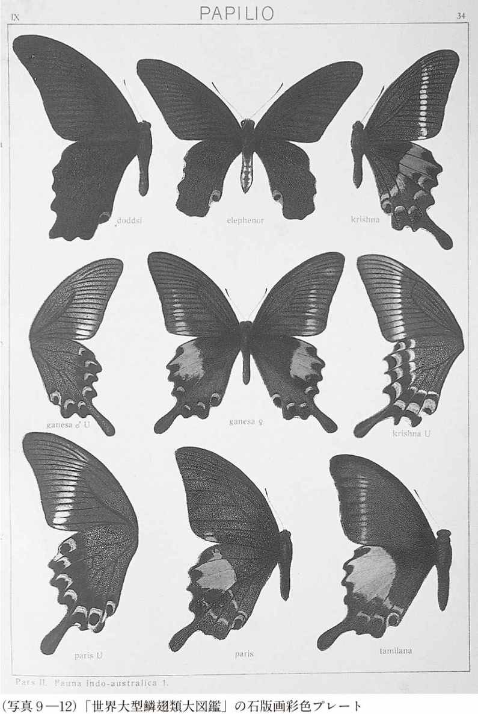
ザイツ博士の図鑑が、それまでに知られていた全ての蝶の種と亜種を網羅した、百科事典的な図鑑を目指したものなら、イタリア、フィレンツェのロジャー・ベリティーRoger Verityは別の視点から蝶の図鑑を作った。すなわち、一九〇五年から一九一一年にかけて刊行された「旧北区の蝶類」Rhopalocera Palaearcticaで、徹底的に地理的変異にこだわった図鑑を作ったのだ。第２章で述べたが、蝶の翅の模様は、住んでいる国や地域、隔離された山や島ごとに複雑に変化をする。同じ種類なのに全く異なる翅の模様になる事がある。詳しい人なら、その蝶を見ただけで、どの国の何地方で採れた蝶なのか、ズバリと当ててしまう。
ベリティーの「旧北区の蝶類」は「第一巻アゲハチョウ科、シロチョウ科」（写真９―13）を出しただけで挫折した。続巻も出版したかったのだが、あまりにも先駆的な内容だったので、当時の収集家には理解されず売れなかったのだ。例えば、当時秘境だった中国奥地のパルナシウスやアキリデスの地理的変異がズラーッと図示されているのだが、その価値を解る人が少なかった。その後ベリティーは一九四五年から五〇年にかけて「イタリア蝶類大図鑑」Le Farfalle Divrne D'Italia全五巻を出版した。イタリア一国の蝶の地理的変異を表した図鑑で、ひとつの国の蝶類図鑑としては空前絶後のものである。しかし、この図鑑もローカル色が強すぎて、世界的にはあまり売れなかったらしい。長い間、フィレンツェの出版社の片隅に、在庫本が積み上げられていた。一九七〇年代、数々のルネサンス美術品を台無しにした「フィレンツェ大洪水」の時、ベリティーの本も水を被って殆どが駄目になり、今では世界的な珍本になった。
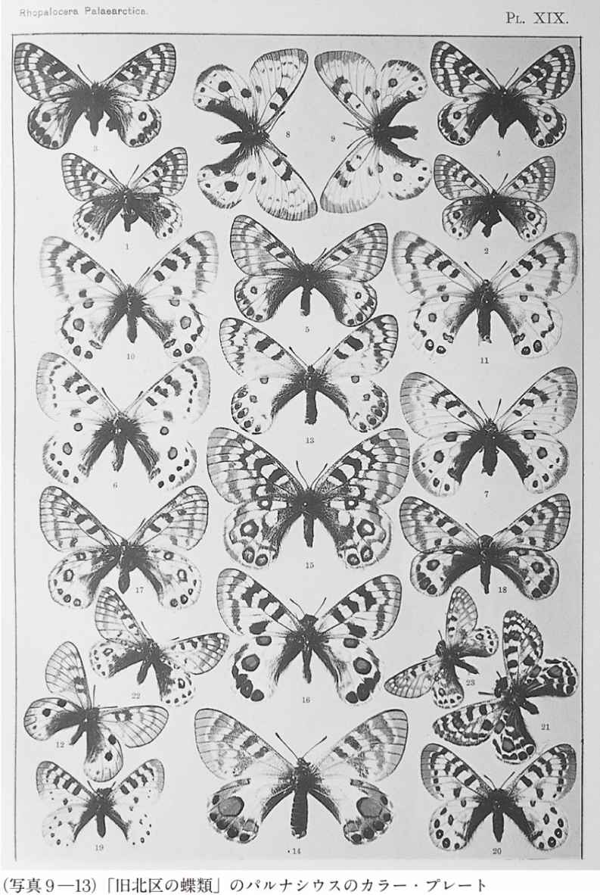
百科事典的なものを目指したザイツ博士の図鑑と、地理的変異にこだわったベリティーの図鑑は好対照である。この流れは現在の日本でも続いている。蝶の研究者が目指す図鑑の二大潮流、ふたつの「理想モデル」と言うべきものである。
収集家も採集人も標本商も、ここに紹介出来たのは、ほんの一部である。図鑑や文献に載っている人や、蝶の種名や命名者として名前が残っている人だけを拾っても、無数の愛好家がいた事が窺える。
コレクションの真価は集めた蝶の「数」を競うのではない。どれだけ他の収集家が羨ましがる「珍蝶」「美麗種」を持っているかであろう。オットー・シュタウディンガーが珍蝶を仕入れて見せびらかすと、ライオネル・ロスチャイルドは、「なにくそ！ おれも集めなければ！」と張り合った。凄まじい収集欲のぶつかり合い、金持ち同士の負けられぬメンツが火花を散らしたのだ。一方で、ノンビリとマイペースで集めた人達もいただろう。名前も記録も何も残っていないが、心から蝶を愛しんだ、心豊かな収集家も無数にいたに違いない。
ウォーレスやミークやドヘルティの様な、今日でも虫屋を熱くしてくれる物語を残した大採集家達。彼等の陰に、沢山の無名の採集家がいたのだろう（写真９―14）。根性が無くて運にも恵まれず、珍蝶のいる所まで辿り着けなかった者もいた。病気や事故で力が尽き、亡くなった者も多かったと思う。蝶を求めて未開の地に旅立ち、現地の女の人と愛し合って居心地が良くなって、その社会に溶け込むように消えてしまった採集家、などというのも結構いたのではないか。
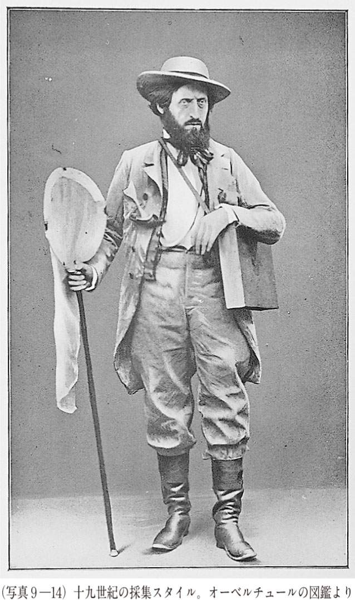
ヨーロッパで大収集家や大標本商が光彩を放ったのは、二度の世界大戦を経た一九四〇年代頃までだと言う。彼等を熱狂させた、トリバネアゲハやアグリアスやパルナシウスの新種発見や記載研究も、この頃までにピークを終えた。大コレクションの殆どは各国の博物館に収まった。今日は、植民地からの富を背景にした、何代も続く大富豪が幅を利かす時代では最早ない。けれど、博物学の伝統、昆虫標本収集の趣味は脈々と受け継がれているのである。
これまでくり返し書いてきたが、蝶の標本収集で大切なのは「いつ、どこで、誰によって採集されたのか」というデータである。第９章で見たが、私達が現在行なっている形の趣味・研究としての「標本収集」や「昆虫採集」は十八世紀後半に始まった。以来、約二百五十年間、世界各地の博物館や個人の収集家によって膨大な数の標本が集積されてきた。それらの蝶の標本と採集データの、ほんの一部を読み解くだけでも色々な事がわかる。採集された時と現在の環境の変化が解る。例えば、昔採られた蝶の標本のデータを頼りに、その場所へ行ってみる。すると森林の伐採などで環境がまるで変わっていて、その蝶は何処にもいない。少なくともその場所では、その蝶は絶滅してしまったのだ。そんな経験を何度もした。
カリブ海に浮かぶ大アンチル諸島にある国、キューバへ採集に行った事がある。
キューバ島のものとして記録されている蝶の種類は百九十四種である。ほぼ同じ緯度で、カリブ海を隔てたメキシコの総種類数は千二百を越えるから、蝶の種類的には貧相な島なのだ。しかしキューバには、アメリカ大陸とは全く異なる、奇抜で独特の斑紋を持つ美しい蝶が分布している。大アンチル諸島の他の島々、ジャマイカ島やハイチ、ドミニカのヒスパニオラ島にもそれぞれ固有の蝶が多い。これらの島々は非常に古い昔にアメリカ大陸から切り離された。島に取り残された蝶達は独自の進化を遂げたのである。
キューバ島には、アメリカ大陸には見られない、非常に特徴的なPhoebis属の蝶が分布する。すなわち、
①Phoebis avellaneda アベリャネーダオオベニシロチョウ
②Phoebis philea huebneri フィレアオオキチョウ（亜種ウエブネリィー）
③Phoebis argante fornax アルガンテオオキチョウ（亜種フォルナックス）
の三種である。この三種の何が凄いかと言えば「赤い！」の一言に尽きる（口絵―２）。雄も雌も、前・後翅に赤い鱗粉が良く発達する。まるで血をかぶった様な赤い斑紋である。こんな真っ赤になるPhoebis属の蝶は、ヒスパニオラ島の一部を除けば、他のどの地域にも分布しない。キューバ島の蝶の、特異な進化を示す代表的な種類だと言える。この三種はどうやって成立したのか。
以下はハバナの自然史博物館で伺った話である。キューバ島がアメリカ大陸と分離したのはおよそ八千万年前、だと言う。その後、四千二百万年前から二千万年前の間に大きな七つの島が離合集散を繰り返した。七つの島が合体して現在のキューバ島の形になったのが、約四百万年前である。キューバ島が大陸から分離した時、両方に分布していたのが、
④Phoebis philea philea フィレアオオキチョウ（原名亜種）
⑤Phoebis argante argante アルガンテオオキチョウ（原名亜種）
の祖先種である。この両種の翅は鮮やかな黄色だったと考えられる。キューバ島に取り残されたこの二種の子孫は、八千万年前から最近まで、相互に交流が無く隔離されていた。その結果、④から進化した種、①Phoebis avellanedaと②Phoebis philea huebneriが成立した。①と②はキューバ島が現在の形になる以前に別々の島に隔離され、それぞれに進化したのである。キューバ島では、①Phoebis avellanedaは島の東側シエラ・マエストラ山脈に分布し、②Phoebis philea huebneriは、島全土の低山地や平野部などに分布していた。ある程度の棲み分けがなされていた様である。
同じく八千万年前に、大陸の⑤の集団から隔離され、数千万年という時を経て進化した集団が③Phoebis argante fornaxである。つまり、①、②（キューバ島・赤い翅）と④（アメリカ大陸・黄色い翅）、③（キューバ島・赤い翅）と⑤（アメリカ大陸・黄色い翅）はそれぞれ代置種の関係にあるのだ。
④Phoebis philea phileaも⑤Phoebis argante arganteも、アメリカ南部からアルゼンチンにかけての、南北アメリカ大陸の熱帯地域に広く分布する普通種である。湿気のある低地の二次林や荒地や焼畑、農耕地、人家周辺の開けた場所などに極めて多い蝶だ。本格的な熱帯雨林の蝶ではなく、その周辺の、人間によって開墾された環境を主な棲家としている。
メキシコのユカタン半島のマヤ遺跡に行く途中の道路沿いの小川に、何千頭ものフィレアやアルガンテが集団で吸水に来ていたりする。両種とも強い飛翔力を持ち、南北アメリカ大陸に広く分布する。どの産地でも均質的で、斑紋には殆ど変化が無い。雨季型の雌にやや赤色が現れる個体があるが、鮮やかな黄色の翅をもつ蝶である。
この二つの種類は、人間が作り変えた環境に適応して爆発的に分布を広げ、個体数を増やした種類と考えられている。つまり、コロンブスが来た十六世紀以来、南北アメリカ大陸の環境は激変した。人間の数が爆発的に増え、それ以前の原生林や熱帯雨林、草原地帯などが切り開かれて開発された。農耕地や放牧地、人間の生活空間である住宅地や工業地帯や都市が広がって、自然のままにあった環境が殆ど無くなってしまった。フィレアやアルガンテの食草はマメ科のCassia属が主で、こうした人間によって作り変えられた環境を好む植物である。
この二つの種類は、人間の活動範囲の広がりと共に繁栄している蝶なのである。十六世紀以前、フィレアやアルガンテは現在の様に中南米熱帯の何処にでもいる様な蝶ではなく、個体数もそれ程多くは無かったと思われる。本来の熱帯雨林が残っている環境では両種とも、非常に少ない蝶なのだ。
ハバナから、高額で貴重なガソリンを調達して採集に向かう。途中は一面のサトウキビやパイナップル畑、所々に竹藪や椰子の林がある。コロンブスが来航した頃の記録にある「鬱蒼と繁る原生林」などと言う環境は、勿論何処にも残っていない。現在、ハバナの市街地周辺や百キロ位離れた海岸沿いのサンタルシアという所に飛んでいるのは翅が黄色いPhoebis philea phileaとPhoebis argante arganteばかりである。今ではキューバ島の全土にこの黄色いフィレアとアルガンテが分布する様になったと言う。メキシコなど中南米一帯に分布するものと、全く同じ翅の模様をしている。これらは、近年になってユカタン半島から飛来してきた集団と考えられている。
キューバ島の自然環境も十六世紀以来、激しく変えられて来た。現在では国土の殆どがサトウキビ畑などの農耕地や荒地になっている。こういう人間が作り変えた環境に大陸のフィレアとアルガンテが侵入して来た。逆の見方をすれば、キューバ島の自然環境が人間によって変化させられたので、この二種が飛来して住み着く事が出来る様になった、と言える。
飛翔力、繁殖力、生命力が強く、圧倒的に数が多い大陸の黄色いフィレアとアルガンテは、元々キューバ島に分布していた翅が赤いアベリャネーダ、ウエブネリィー、フォルナックスの三種を圧迫し、生息環境から追い払った。黄色いフィレアは赤いアベリャネーダ、ウエブネリィーと、黄色いアルガンテは赤いフォルナックスと、それぞれ交雑して遺伝子が交ざった。後者は本来の「赤い」特徴を失ってしまったのだ。
それでも、アベリャネーダは、分岐した年代がより古いらしい。まだ「種」としての独自性を保っている。シエラ・マエストラ山脈から採集された一九九〇年代後半の標本がある。しかし、大陸の黄色いフィレアと雑交が進んだ為であろう、近年の採集品は赤色の発達が悪い。私の手元にある標本、一九三九年、四八年に採集された雌の前・後翅が真っ赤になる様な斑紋を持つ個体は、近年全く採集されていない。
一九〇七年に記載されたフィレアの亜種ウエブネリィーや、一八七一年に記載されたアルガンテの亜種フォルナックスは、現在、完全に「亜種」としての独自性を無くし、消失してしまった様である。少なくとも一九八〇年代以降、これらの赤い個体は採集されていない。今もキューバ島の何処かに生き残っているのかもしれないが、近年の採集品を見るとその可能性は極めて低いと言わざるをえない。記載された頃にはこんな「赤い」集団が確かに残っていた。私の手元にも、一九三一年と三五年に採集されたウエブネリィーの雌、一九一七年に採集されたフォルナックスの雌など、赤い標本がある。これらの「血ぬられた様に赤い」蝶達は、何かキューバという国を象徴する様な、非常に特異な個体群に思えるのだが、今やその面影は無くなってしまったのである。
キューバ島が含まれる西インド諸島は、十六世紀以来、絶滅した鳥類や哺乳動物がとりわけ多い事で知られている。「島」という閉ざされた生態系で、何千万年という時間をかけて独自の進化を遂げた生物達がいた。それらが人間の活動の影響で、あっという間に滅んでしまう。鳥類や哺乳動物は、生息する環境が破壊される前に、その個体そのものが狩猟や食料にする為に、採りつくされて絶滅してしまった。
生態系の下位にあり、個体数が多く繁殖力が強い蝶などの昆虫は「採りつくされて絶滅する」という事は滅多に無い。しかし、森林伐採などで食草が無くなってしまうと、すぐにその場所からいなくなる。たとえ、本来棲んでいた環境が狭い範囲に残っていても、周りが開発されてしまうと、人間が作り変えた環境に適応した近似の別の種類が進入して来る。本来その場所にいた固有の種類を駆逐し、消滅させてしまう。
キューバ島と同じ様な事が、世界中で起こっている。
メキシコ市に住んでいるディアス・フランシスという標本商が言っていたが、一九七〇年代までは、郊外の丘陵地でスゴモリシロチョウやレモネアツマキチョウなど、私達が「大珍品」と呼んでいる蝶が普通に採れたと言う。現在そこは一面のスラム街になっている。
マニラに住む古い友人、ジャステイン・ヌイダという蝶屋の話では、六〇年代にマニラの市街でルベンチーナイナズマやアリノスシジミなどを採ったと言う。私はルベンチーナイナズマなどという珍蝶は、マニラから三百キロ以上離れた「イフガオ族」という山岳民族の住む奥深い山の中でしか見た事がない。アリノスシジミもルソン島と台湾の間にある「バブヤネス諸島」という絶海の島で採った事があるだけだ。そんな僻地へ行かなければ採れない蝶が、昔は確かに都市の中に棲んでいたのである。
ヨーロッパの標本展示・即売会で、一九三〇年代、英領インド帝国シッキムの採集ラベルが付けられたタカネクジャクアゲハPapilio krishinaという蝶を仕入れた事がある。この蝶はインドやネパールなどのヒマラヤ山脈の南側斜面では、概ね標高二千五百メートルから三千五百メートル位までの森林限界近くの灌木林に棲む。三〇年代のデータラベルが付いたクリシナは、最近これらの場所で採集される個体と全く異なる、巨大で特異な標本だった。クリシナはミャンマーのカチン州の低地でも採れるが、そんな低地性の大型の個体にそっくりである。現在インドのシッキム州の低地帯は椰子プランテーションやお茶の畑、あるいは森林伐採された後の荒地、などに覆われている。しかし、一九三〇年代のシッキムでは、低地にもクリシナが棲める自然環境が残っていたのだ。
ワシントン条約やレッド・データブックで絶滅危惧種や危急種、希少種などを指定して警鐘を鳴らすのは、勿論、非常に重要な事だ。しかしそれらにリストアップされている以外にも、少なくなった蝶やいなくなった蝶は無数にある。「種」としては存続していても、古くからそれぞれの地域に生息していた、独自の亜種や個体群が消えてしまった例が沢山ある。どんなに注意を促しても、保護を声高に叫んでも、一方で環境の破壊を容認していては無駄である。蝶を育む環境が無くなれば、蝶そのものが消滅してしまう。
蝶は鳥や哺乳動物に比べてずっと狭い、微小な環境に適応して棲んでいる。極端な話、蝶の食樹一本を切り倒したために、その町からその種が居なくなってしまう、という事もある。蝶は、私達のまわりの小さな環境が、どんなふうに変化しているかを教えてくれる「指標」なのだ。
何年か前、誰かに「蝶々なんて、南の国に行けばいくらでも飛んでいるだろう。値段なんてあるものか」と言われて絶句した事があった。値段はともかくとして、少しでも蝶や自然の生態系に理解がある人なら、決してこういう発想はしない。確かに、東南アジアの国に旅行に行くと、無数の蝶が群れ飛んでいるのを見る事がある。街中の街路樹や人家の生け垣や並木道、リゾート地などでも沢山の蝶を見る。別に南の国でなくても、日本や世界各地でそういう光景を見る事がある。なぜだろうか。
そんな蝶は、先に書いた黄色いフィレアとアルガンテの様に、人間が作り変えた環境に適応して数を増やした種類なのだ。例えば、一番身近な例は、誰もが知っているモンシロチョウだろう。この蝶の食草はアブラナ、ダイコン、キャベツなどだから、これらの植物が大量に栽培されている畑地には、沢山飛んでいる。
モンシロチョウは元々中央アジアにローカルな分布をしていたが、世界中でこれらの植物が栽培されるにつれてアメリカ、アジア、オーストラリアなどに広がった。日本に進入したのは江戸時代以前と言われている。同じくキアゲハも、ニンジンやセリの栽培と共に世界各地に分布を広げた蝶である。
背中に髑髏の模様がある「メンガタスズメ」という蛾がいる。この原産地はペルー辺りのアンデス山中なのだが、十七世紀以来、ジャガイモの栽培と共に世界中に広がった。こんな例は幾らでもある。人間が好んで植える街路樹を食草にしている蝶、花壇や生垣の植物を食べている蝶、それは人間の活動の隙間に入り込んで生きている蝶なのである。
今更私が書くまでもないが、十九世紀の産業革命以来、地球的な規模で環境が激変している。森林伐採の面積が増え、地球全体に砂漠化、温暖化が進んでいる。この様な中で、増えたのは「人間」と、モンシロチョウやメンガタスズメの様な「人間が作った環境に適応した生物」なのである。
人間の手によって定期的に手入れをされる雑木林や、牛や馬の放牧地などの環境に好んで棲む蝶も多い。私達が普段、毎日の生活の中で何気なく見ている木々や林がある。何となく、それがずっと以前からある自然環境だと思ってしまう。
例えば、私の事務所の近くにある玉川上水という郊外の緑地では、四月から八月末頃までカラスアゲハが「蝶道」に沿って飛ぶのが見える。「蝶道」はアゲハチョウ科のパピリオ属などに顕著に見られ、森林の中の空間や林縁のほぼ決まったコースを一定の高さで飛ぶ習性である。五月の良く晴れた日の午前中には、玉川上水と平行して走る五日市街道の車の渋滞を物ともせず、次から次に緑の翅をきらめかせてカラスアゲハの雄が林縁を飛ぶ。
カラスアゲハという種がここに生息する為には、色々な条件が必要である。①サンショウやカラスザンショウ、というカラスアゲハの食草が付近に生えている。一本や二本では駄目で、鳥などの天敵に食べられても集団を維持する事が可能な、十分な数の幼虫を育める沢山の食草が必要である。②親蝶が吸蜜するツツジやクサギなどの訪花植物が十分にある。親蝶が様々な活動をする、十分な空間が木々の厚みによって整えられている事も大切である。気温や湿度や日照、様々の条件が重なってカラスアゲハはここに棲んでいる。
玉川上水は江戸時代から人間の手が加わった、作られた環境である。その中に日本列島に古来からいるカラスアゲハが、生活の場所を見つけて棲みついている。同じ様な風景は日本各地に見られるだろう。そんな環境を大切にしたいものだ。人間の営みと自然のバランスは大切である。
どんなに環境が破壊されても、人工的な環境に作り変えられても、そこに蝶がいればまだ安心なのだ。モンシロチョウやキアゲハの様な農作物の害虫だって、蝶の飛ぶ風景が見られる限り大丈夫である。本当に恐ろしくてぞっとするのは、蝶や他の昆虫も、害虫さえもいない環境である。
例えば、スーパーマーケットなどで売っている野菜を見て、何か不自然さを感じないだろうか。幼虫に食べられた食痕も何もない、完璧にきれいな葉。こんな野菜を、幼虫に与えると皆、死んでしまう。
飼育のエキスパートの大野義昭氏がよく嘆いているが、うっかりこんな所で売っている植物を幼虫に食べさせると、これまでの苦労が台無しになる。例えば、売っているキャベツをモンシロチョウの幼虫に食べさせると、数時間で青虫は黒ずみ、萎んで死んでしまう。「農薬」は畑に散布する、というイメージがあるが、最近は土の中に沁み込ませ、植物の根から吸い上げさせるタイプなのである。植物の体内構造の内側から汚染されているのだ。
そんな不自然な野菜を、変だと思わずに毎日食べている私達もどこかおかしくなっているのではないか。幼虫は小さな体で、毒物を食べると忽ち反応して死んでしまう。人間はそれに比べて体が少し大きくて複雑なだけだ。すぐに反応しないだけで、毒物は、確実に体内に蓄積されているのである。
私達人間は、Homo sapience（知恵ある人）という一つの種類である。ただ一つの種類で地球の表面に分布を広げ、自然環境を自分達の都合の良いように作り変えて繁栄してきた。とりわけ、最近三百年間に個体数が爆発的に増え、今や六十億を越えるのも近い。自分達が地球上で最も繁栄している生物で、何か特別な存在だと信じていないだろうか。
他の生物はどうなのだろう。
地球上には、およそ百五十万種類以上の生物が知られている。動物や植物や菌類や単細胞生物、バクテリアその他、あらゆる生物の種類を併せた総数がこれだ。「知られている」というのは、今までに命名記載されている生物の総数が、この位らしいからだ。このうち、動物が百万から百二十万種類くらい、残りの植物、菌類、細菌などの生物が五十万種類位らしい。「らしい」というのは、十八世紀にリンネが始めた二名式命名法以来、世界中で命名された記載論文の全てをチェックして、正確な数を出す事は不可能なのだ。命名されている生物の総数は解らないのである。
自然界に存在している、まだ発見されていない種類や、発見されてはいるが未整理で、命名してもらっていない種類などを併せると、少なくともこの数倍の種類数になると予想されている。まだ、地球にはどれだけの種類が存在しているのか、誰にも良く解らないのである。
百万から百二十万くらい知られる動物の種類数の、七〇から八〇％が昆虫である。つまり、今のところ、知られている昆虫の種類数は、約八十万から百万と言われている。毎年、新しい種類が発見され、次々と記載されている。人間が知っている総種類数は、どんどん増えている。もし、全てが明らかになれば、昆虫の総種類数は五百万種から一千万種になるのでは、と言われている。いや三千万種類に及ぶのではないか、という説もある。取り敢えず、既知の数が八十万種から百万種類くらい有るとしても、圧倒的な種類数である。他の動物に比べて、何故、こんなに多いのだろうか。
第９章で書いたが、十六世紀以来、ヨーロッパのコレクターや博物館が、何百万頭という、膨大な昆虫標本を集め続けた。それはただ数を誇ったのではなく、昆虫にはそれだけの種類や、地域や個体ごとに変化するバリエーションが有るからだ。「生物の多様性」という言葉がある。それを実感として認識するには、何千、何万という標本を手にとって見て、集めてみる事が大切だと思う。自然の中の生物を「観察する」のは大切である。しかしそれだけでは、生物の細部の、形態や構造や機能、個体変異や地域変異などは解らない。膨大な標本のコレクションが無ければ、人間は生物世界の多様性について、深く認識する事はなかっただろう。
私にとって、見栄えする昆虫標本を作るのは大切な仕事だ。しかし標本は美しいだけが価値ではない。別に高価な珍品でなくても、普通種で構わないのだ。一頭の昆虫標本の形態を詳しく調べて見ると良い。幾つかの違う「科」や「目」を、実際に体の各パーツをばらばらに分解して、比べてみる。すると、昆虫の機能的な体の仕組みや、進化の過程が解るだろう。昆虫図鑑と照らし合わせて、書いてある事が本当にそうか、確かめてみる。立派な図鑑に書いてある事が正しいとは限らない。自分で見たり確かめた「事実」が大事なのだ。
「標本」という事実は重要である。昆虫標本には事実という重みがある。その「種類」という実体や、種が進化して来た過程を物語ってくれるのだ。
私達は普段、活字やテレビ、インターネットやビデオ、ゲーム、映画など、バーチャルな世界に浸りすぎていないだろうか。メディア媒体を通して、実物を見たことも無いのに、何となく物事を知ったつもりになっていないだろうか。
たまには、「この虫は、どうしてこんな形をしているのだろう」「この蝶は、どうしてこんな色をしているのだろう」と素朴に思いながら、虫をいじるのも、良いものだ。
蝶の標本収集の趣味について、様々な面から書いてきた。
標本収集で一番大切なのは「集めている本人が楽しむ」、これが基本原則である。趣味の世界だから、楽しければそれで良いのだ。
しかしたまには虫屋同士が集まって、お互いを磨き、知識、見聞を広めあうのも大切である。標本商や収集家が何人か集まると、必ず始まるのが「珍品談義」だ。珍しい蝶の話で盛り上がる。収集の醍醐味はこれに尽きるだろう。「幻」には三つの意味があると言う。これを蝶にあてはめると、
①「そこにはないのに、あるように見える蝶」
思い浮かぶのは、オオベニシジミという蝶の、グレート・ブリテン島の原名亜種Lycaena dispar disparである（口絵―10）。ユーラシア大陸に広く分布する蝶だが、一七九五年、初めて記載されたイギリスの原名亜種は十九世紀の中頃に絶滅してしまった。大陸産よりも翅のサイズが大型で、裏面の斑紋も異なっていた。その後二十世紀になって、よく似たオランダ産の亜種が蝶の愛好家達によって移植され、今ではイギリスの沼沢地で再び見られる様になった。しかしそれは、滅びた個体群とは別のものである。現在、十九世紀に滅びたオリジナルの英国産オオベニシジミは、残された標本一つ一つの所在が登録されている。
他にも、例えば関東地方のギフチョウの例などがある。丹沢山塊や多摩丘陵に分布していた、独自の特徴を持つギフチョウの個体群は大体一九七〇年代初め頃までにいなくなった。宅地造成などで、元からいた生息地が無くなってしまったからだ。今でも、四月の桜の頃、丹沢方面に行けばギフチョウが飛ぶのを見る事は出来る。しかしそれは、その後日本の他の地方、長野県などから誰かが持ってきて「放蝶」したものが増えたのだ。元々分布していた関東地方の特徴を持つギフチョウとは異なるものである。
②「はかなく消えた蝶」
ＩＵＣＮ（International Union for Conservation of Nature and Natural Resources）「自然保護と天然資源のための国際連合」という組織のレッド・データブックによれば「種」の単位で絶滅してしまった蝶は、三種類である。すなわち、アメリカ合衆国西海岸のクセルケスカバイロシジミGlaucopsyche xerces 南アフリカ共和国から、Trimenによって一八六八年と八七年に記載されたシジミチョウ科二種、Deloneura immaculata Lepidochrysops hypopoliaである。いずれも十六世紀以来の生息環境の激変によって絶滅した。これを「亜種」にまで広げてみれば、第10章でふれた様に無数の例があるだろう。地域ごとに見れば、消滅してしまった蝶は実に多い。
例えば日本の例になるが、一九六〇年代に農薬散布で絶滅してしまった奈良県春日山のルーミスシジミがある。東京都の井の頭には、一九五〇年代には確かにオオムラサキやオオウラギンヒョウモンが分布していた。環境の変化で今はいなくなってしまったが、当時採集された標本が残っている。蝶の標本が、環境の破壊を雄弁に物語っているのだ（口絵―10）。
③「そこにあると言われているのに見つからない蝶」
十七世紀後半、リンネによって二名法が確立されて以来、二百年以上の間に数万種類の蝶が命名記載された。そんな中で、記載のベースになったタイプ標本が確かに存在してはいるのだが、その後全く採集されていない、産地が解らない、という謎の蝶がある。
少し蝶に詳しい人なら、「ポンテンモンキチョウ」Colias ponteniと言う名前を聞いた事があるかも知れない。採集されたのが十八世紀後半以降のいつか。場所はハワイか、南米大陸南端のどこか、マゼラン海峡に浮かぶ島々のいずれか、とも言う。
何故こんな曖昧な事しか解っていないのかと言えば、十八から十九世紀の帆船による探険航海の時に採集された標本に基づいて記載されたからだ。一八五一年から五三年のスウェーデンの世界一周探険航海の時、一八二六年から二七年のイギリス帆船アドベンチャー号の航海の時の採集品にこの蝶があった。両国の博物館に合計５雄４雌が所蔵されていると言う。船が本国に戻り、採集品を順次整理してゆく過程で命名記載がなされた。しかし長期間にわたる航海で立ち寄ったどの場所で採集されたのか、解らなくなってしまった。
この蝶が命名記載されたのが一八六〇年、初めて採集されてから少なくとも百五十年以上が経った。ハワイへ、マゼラン海峡へ、その時代を代表する採集家、探険家が何回も、再発見しようと調査に向かった。日本からも何人もの腕に覚えのある採集家が挑戦したが、今も再発見されていない。環境が変わって絶滅したとは考え難い。地球上のどこか、おそらく南米大陸最南端の何処かに人知れず、この蝶は棲んでいるのである。こんな、幻の蝶は他にも幾つもある。
そもそも、標本商が珍しい蝶を狙って何回もチャレンジする、その蝶が何故珍しいのか。政治的な理由や紛争地帯で入域出来ない場所にいるとか、飛行機も定期船もない、とんでもない僻地の島の特産種だとか、環境が変わっていなくなったとか、様々の理由があるだろう。
美しくて珍しい蝶がいる。多くの収集家が欲しがっているのに、誰も持っていない蝶である。交通機関や情報がこれだけ発達した現代社会で、なおかつ「珍蝶」の座を保っているのはそれなりの理由があるのだ。そんな蝶に敢えてチャレンジする標本商がいる。その場所まで行くのに、経費と時間がかかる。目的の蝶が採れるまでに、何回も挑戦する。何年もかかってやっと最初の一頭が採れる。そうして得られた珍しい蝶は、名のある画家が描く「絵」の様なものだと思っている。画家の描いた絵の値段は、絵の具やカンバスの代金や、描き上げるのにかかった時間だけを反映して決められるのでは無いだろう。描いた画家の、高度な芸術性に値段を払うのである。珍しい蝶を狙って採集してくる行為も同じものだ。二百万円の値段が付けられた蝶がある。何故二百万円かと言えば、それが世界にたった一つしか無いからだ。標本商は、その蝶の原価や経費、入手する為にかかった時間や思い入れなど、すべてをひっくるめて二百万円、という値段を付ける。もし、その蝶が、例えば四頭採れたら、かかった経費などを四で割れば良いのだから、値段は下がって五十万円になるだろう。
しかし、「珍蝶」とされていた蝶が沢山採れて、値段が下がるのは良い事だろうか。珍蝶は、普通の人が行くのは不可能な、人跡未踏地方の山奥の原生林などと言う環境にいる事が多い。十九世紀や二十世紀中頃まで、珍蝶とされていたのはそんな所に棲んでいる蝶だった。オウゴンテングアゲハもフィディアスオナガタイマイもシボリアゲハもメリディオナリストリバネアゲハ（写真―Ｂ）も皆そうだった。ところが開発が進み、山奥まで通る道が出来て、珍蝶の棲家まで人間が行ける様になった。それが本当に良い事なのだろうか。自然破壊が進んで、平地の森林が伐採された。山奥まで道路が通って行ける様になった。それで珍蝶が採れるようになった、という側面があるのだ。
「二百万円する蝶は世界に一つしか無い」と言ったけれど、それは、「人間が知っている限りにおいての、蝶の標本として」という意味である。その種類は決して一頭だけで存在している訳ではない。自然の中では必ず、その種類を維持するだけの集団、個体数がある。ただ、採り方や場所が解らない。ジャングルが深すぎたり、絶海の孤島だったりしてその場所に入れないだけだ。つまり人間が見つけられない場所には、どんな珍蝶だってある一定の数が必ず存在するのだ。そんな所にまで行ける様になるのが、はたして良い事なのだろうか。自然破壊が進んだ証明ではないのか。
十九世紀や二十世紀中頃までの昔の文献と、今を比較すると「珍蝶」は随分、変わっている。昔は「普通種」とされていた平地性の蝶の産地が開発で潰されて、さっぱり採れなくなってしまった。一方では、山奥の蝶が沢山、採れる様になった。森林が伐採されて蝶が生息する場所が無くなると、その森に依存して棲んでいる蝶もいなくなる。蝶の食草と飛ぶ環境と吸蜜する花が無くなれば、その森に棲む蝶は絶滅してしまう。森林さえ残っていれば、蝶はどんなに沢山採集しても少なくはならない。第８章で触れたウジュンパンダンやキャメロン・ハイランドが良い例だろう。
蝶に限らず昆虫は、繁殖力が旺盛なのだ。一頭の雌蝶が百や二百、種類によっては千以上の卵を産む。それが次の世代で親蝶になり交尾をしても、次々世代の卵を残せるのはほんの僅か、数個体の雄、雌にすぎない。卵、幼虫、蛹、成虫の段階で蝶には次々に「死」が待ち受けている。しかし、もし死なないで全ての卵、幼虫が親蝶になると、どうなるのか。色んな計算のやり方があるが、例えばこういう仮定をしてみる。
１雄１雌の親蝶（成虫）が交尾して、１雌が２００の卵を産む、とする。その全てが親蝶になるとする。野外でも飼育でも大体、性比は１対１だから、１００雄、１００雌が成虫になる、と仮定する。それが全て交尾して、全ての雌がまた２００卵ずつを産むとどうなるか。１００雌が２００ずつの卵を産むので、次々の世代では、１００×２００＝２０、０００の卵になる。これも、１０、０００雄と１０、０００雌の親蝶になって全て交尾して親雌が２００卵ずつ産むと、１０、０００×２００＝２、０００、０００、つまり三世代目には二百万頭の親蝶が産まれてくる。同じ事を繰り返すと、１、０００、０００の雌が２００卵ずつ産むから２００、０００、０００頭が産まれてくる。
つまり四世代目には二億頭になってしまう。次の五世代目には、一億の雌が２００卵ずつ産むから、二百億頭が産まれてくる事になる。
もう止めてくれ！ と思うだろう。
熱帯や亜熱帯では、一年で三、四世代を繰り返す蝶が多い。仮に何の淘汰圧も働かなければ、１雄１雌の蝶が翌年には二億頭になってしまう事になる。この地上は幼虫と蝶で満ち溢れ、全ての食草は食べ尽くされてしまうだろう。すさまじい光景である。そんな事にならないのは、幼虫や親蝶が、他の捕食性昆虫や寄生蠅や蜂、クモや鳥や両生類や爬虫類や哺乳類に殆どが食べられてしまうからだ。蝶や昆虫は他の動物の餌になる為に存在している、と言っては気の毒なので言い方を変えると、そういう生態系の仕組みになっているのだ。ウォーレスが看破した様に、「自然淘汰」によって蝶の個体数は、安定しているのである。
だから、我々が「昆虫採集」などと言って蝶を採るのは自然界には何の影響も無い。採集した位で減ってしまう様なヤワな蝶は存在しない。もし、減ると思っている人がいたら、それこそ自然に対する傲慢と言うものである。放っておけば、鳥や爬虫類に食べられて死んでしまう蝶を、採集しているだけなのである。
けれど、蝶や昆虫を採集する者には、気をつけなければならない事がある。その蝶や昆虫の食草を根こそぎ引き抜いたり、食樹を痛めて枯れさせてしまう。そういう行為は絶対にしてはいけない。蝶や昆虫の棲む環境そのものを破壊してはならない。成虫や幼虫や卵や食草を採るのは良いが、あくまで全体のバランスを考えて、最小限にするべきである。採集した虫の数を誇ったりするのは無意味な事だ。大野義昭氏のように、食草は鉢植えや、予め植えたのを用意しておく。
私達虫屋は、自然とその中に棲んでいる虫を、心から愛する者達なのだ。昆虫採集を通して、昆虫と昆虫の棲む環境の大切さを学ぶ。生物の多様性への認識を深めようと努める。生命の尊さを良く知っているのが虫屋なのである。
しかしどうしても、蝶の胸を押して殺すのは好きになれない。甲虫を毒ビンに入れて殺すのは嫌だ。標本作りや採集というものが理解出来ない。「かわいそうだ」と思う人もいるだろう。
私は「かわいそうだから昆虫採集が嫌だ」という人を尊重する。「かわいそうだ」と思う感情を持つ人の、優しい心のあり様に感銘を受ける。虫が好きな人は、小さい頃から昆虫採集をして、虫を殺していた。「もっと虫を知りたい」と思うから昆虫採集をするのである。それが嫌いな人は「かわいそうだから、止めて欲しい」と思っていた。どちらにしても、虫に関心があるからだ。どちらの立場も「生命の尊さ」を考えていると思う。
ここで話が突然飛躍するのを許して欲しいが、最近頻繁に起こる、新聞やテレビで報道される残虐な事件の数々は何なのだろう。保険金殺人とか親が子供を殺したりとかその逆とか。それに未成年の青少年が起こす、普通の人の感覚では理解し難い残酷な事件がある。こういう事が出来る人は、もっと小さい頃に昆虫採集などをやった事がない人である。あるいは昆虫採集を「かわいそうだ」とも思わない、無関心な人である。昆虫採集をすれば、いのちの重さに思い至る。生命と自然の大切さを知る事になる。
虫を殺す事を通して、そういう事を学んでゆく。だから、「かわいそうだ」と思う優しい人は勿論だが、昆虫採集が好きな人は、こんな残虐事件は絶対に起こさない。生物の命、生命の不思議や尊さや多様性、という事を想像した事もない人、知らない人が残虐な事件をおこす。昆虫を殺した事のない者はいきなり猫や犬や人間を殺してしまう。いのちの重さを知らないからだ。
このように、蝶にとっては、人間に採集されようが鳥に食べられようが同じ事なのだが、蝶を見る人間にとっては大いに違う。ある国・地域に棲んでいる蝶は、そこの自然や大型哺乳動物などと同じ様に、その国の人達の財産・資源、という考え方がある。これは当然だ。世界には色々な国がある。パプアニューギニアの様に「昆虫採集は、許可を取ってからやって下さい。トリバネアゲハが好きな人は、輸出許可証が付けば買う事が出来ます」という決まりの国や、キャメロン・ハイランドのあるマレーシアや、タイの様に採集に関して割と寛容な国。アフガニスタンの様に、昆虫採集どころではない紛争地域も有るだろう。戦争やゲリラ、内戦で行けなかった場所が平和になって蝶が採れる様になり、標本が入って来るのは嬉しい。「蝶が採れる」のは、その国や地域が平和である事の象徴なのである。
いずれにしても、その国や地域、蝶がいる近くの村落共同体などが定めたルールをキチンと守る事が大事である。同じく、ワシントン条約の様な、国際的に取り決められた決まりを良く勉強して、守らなければならない。それが出来なければ、楽しく昆虫採集や標本の収集などが出来るはずがないのだ。
もうお分かりだと思うが、標本商もコレクターも、蝶が沢山採れれば良い、という訳では決してない。日本では、開発＝蝶が少なくなる、と言う図式があるが、世界では必ずしも当てはまらない。開発によって、これまで採れなかった蝶が沢山採れる事もある。けれど、これが長い目で見て良い事だとは、決して思えない。収集家はコレクションはしたい。標本商は珍しい蝶を売りたい。けれど一方で、珍蝶は珍蝶のままでいて欲しい、と思う。とにかく蝶の棲む環境をキチンと守って欲しい。これが収集家と標本商の切なる願いである。
謝 辞
この本を書くにあたり、貴重なお話を聞かせて戴いた江田茂氏、反町康司氏、平岡正之氏、長畑直和氏の各氏に深く感謝します。本文中には敢えて「〇〇氏によれば」とは書きませんでしたが、諸氏のお考えを参考に書いた個所があります。文献や標本の面でも多大なるご協力を戴きました。
大野義昭氏には、文献、標本、本文の全ての面でご助力を賜りました。大野氏のご教示により、まとめる事が出来た個所が多数あります。特に深くお礼申し上げます。
最後に、最良の読者の妻と愛犬プッピーに感謝します。
参考文献
『世界珍虫大図鑑』上田恭一郎・川上洋一、人類文化社、二〇〇一年
『世界珍蝶大図鑑』海野和男、人類文化社、二〇〇〇年
『蝶の入門百科』岡田朝雄・松香宏隆、朝日出版社、一九八六年
『トリバネアゲハ大図鑑』大屋崇、講談社、一九八三年
『図説 世界の昆虫』１―６、坂口浩平、保育社、一九七九～八二年
『コレクションシリーズ・アキリデス』下郡幸夫、ＥＳＩ、一九九七年
『入門編 パルナシウス図鑑』反町康司、アポロ、一九九五年
『入門編 アグリアス図鑑』反町康司、アポロ、一九九八年
『擬態 だましあいの進化論Ⅰ』高桑正敏ほか、築地書館、一九九九年
『海を渡る蝶』日浦勇、蒼樹書房、一九七三年
『新版 蝶の学名』平嶋義宏、（財）九州大学出版会、一九九九年
『原色図鑑 世界の蝶』中原和郎・黒沢良彦、北隆館、一九五八年
『伝説の蝶を求めて』原弘、龍鳳書房、一九九九年
『Lepidoptera Catalogue Indo-Australia region』西山保典、木曜社、一九八三年
『トリバネチョウ生態図鑑』松香宏隆、松香出版、二〇〇一年
川村俊一（かわむらしゅんいち）
1960年東京都生まれ。成蹊大学文学部文化人類学専攻。幼少時代を過ごした香港で美しい熱帯の蝶に魅了され、昆虫採集に開眼する。大学時代から修業を始め、卒業後は趣味の昆虫採集を仕事とすることを心に決める。以来、メキシコ、ニューギニア、ヨーロッパ各地など海外を飛び回り世界の珍蝶を追い続ける。専攻の文化人類学の知識を活かしつつ、現地の人々と交流しながら昆虫の研究を続けている。
昆虫採集の魅惑
2002年７月20日初版１刷発行
2013年４月30日電子書籍版発行
著 者─川村俊一
発行者─丸山弘順
装 幀─アラン・チャン
発行所─株式会社光文社
東京都文京区音羽１‐16‐６（〒112‐8011）
電 話─編集部 03（5395）8289
メール─sinsyo@kobunsha.com
®本書の全部または一部を無断で複写複製（コピー）することは、著作権法上での例外を除き、禁じられています。
©Shunichi Kawamura 2002